簡介

歡迎閱讀《深入Go語言之旅》。本書從Go語言源碼出發，分析Goroutine調度流程，通道、上下文等的源碼，以及defer，panic等語言特性，希望能夠幫助閱讀此書的人更好的理解Go語言的設計與實現機制。 本書分析的源碼基於 go1.14.13 版本，運行在ubuntu16 64位系統下，如無特殊說明，本書所有展示分析的源碼，以及示例執行結果都是基於此環境。
歡迎掃描下面二維碼進微信羣，探討交流Go語言知識。申請加入時候請備註：深入Go語言之旅。羣主會拉你進羣。在閱讀中有什麼問題不懂，或者可以指正的都可以通過上面微信碼聯繫作者，或者發郵件(qietingfy#gmail.com)交流溝通。

感謝打賞
如果覺得作者寫的不錯，對您有些幫助，歡迎贊助作者一杯咖啡☕️，金額隨意。
微信打賞碼 | 支付寶收款碼 |
--- | ---
 |
| 
十分感謝以下讀者的打賞❤️
| 姓名 | 金額 | 留言 |
|---|---|---|
| 鐵頭班*友 | 10 | |
| *w | 50 | 寫的很好，加油 |
| *油 | 33 | |
| *譚 | 10 | |
| 林*壕 | 20 | |
| 張*衝 | 20 | |
| 強* | 6.6 | |
| w*g | 20 | excellent work |
| 田*偉 | 10 | 寫的很好，加油 |
參考資料
編譯流程
Go語言是一門靜態編譯型語言，源代碼需要通過編譯器轉換成目標平臺的機器碼才能運行。本文將介紹編譯器的編譯流程，包括編譯器的六個階段、Go編譯器的自舉機制以及源碼編譯的相關知識，幫助讀者理解Go語言的編譯流程。
編譯的六階段
編譯器的核心任務是將高級語言（high-level language）轉換爲目標平臺的機器碼（machine code）。編譯器的整個編譯流程可分爲兩部分：分析部分（Analysis part）以及合成部分（Synthesis part）。這兩部分也稱爲編譯前端和編譯後端。每部分又可以細分爲三個階段，簡單來說整個編譯流程大致可細分爲六個階段：
- 詞法分析（Lexical analysis）1
- 語法分析（Syntax analysis）2
- 語義分析（Semantic analysis）
- 中間碼生成（Intermediate code generator）
- 代碼優化（Code optimizer）
- 機器代碼生成（Code generator）
詞法分析
詞法分析是編譯的第一步，編譯器掃描源代碼，從左到右逐行將字符序列分組，生成詞法單元（Tokens）。這些詞法單元包括標識符（identifier）、關鍵字（reserved word）、運算符（operator）和常量（constant）等。例如，對於代碼 c = a + b * 5，詞法分析會生成以下Tokens：
| Lexemes | Tokens |
|---|---|
| c | 標誌符 |
| = | 賦值符號 |
| a | 標誌符 |
| + | 加法符號 |
| b | 標誌符 |
| * | 乘法符號 |
| 5 | 數字 |
語法分析
詞法分析階段接收詞法分析階段生成的Tokens序列，然後基於特定編程語言的規則生成抽象語法樹。
抽象語法樹
抽象語法樹（Abstract Syntax Tree），簡稱AST，是源代碼語法結構的一種抽象表示。它以樹狀的形式表現編程語言的語法結構，樹上的每個節點都表示源代碼中的一種結構。以(a+b)*c爲例，最終生成的抽象語法樹如下：

語義分析
語義分析階段用來檢查代碼的語義一致性。它使用前一階段的語法樹以及符號表來驗證給定的源代碼在語義上是一致的。它還檢查代碼是否傳達了適當的含義。例如語義分析會檢查a+b中的a和b是否爲可以進行+操作的類型。
在Go語言中，語義分析會檢查接口實現、類型推導（如 := 短變量聲明）以及包級作用域的符號解析。例如，Go編譯器會確保 var x int; x = "string" 這樣的代碼被標記爲類型錯誤。
中間碼生成
中間碼是一種介於高級語言和機器碼之間的表示形式，具有跨平臺特性。。使用中間碼易於跨平臺轉換爲特定類型目標機器代碼。
Go編譯器會生成一種平臺無關的中間表示（IR），便於後續優化和目標代碼生成。Go編輯器使用的是一種名爲SSA(Static Single Assignment)的中間表示形式。SSA的每個變量只被賦值一次，便於優化器進行常量傳播，死代碼消除等操作。
代碼優化
代碼優化階段主要是改進中間代碼，生成更高效的代碼，優化包括但不限於：
- 刪除冗餘代碼（死代碼消除）
- 常量摺疊
- -通過循環展開來進行循環優化
- 內聯函數
- 邊界檢查消除（BCE, Bound Check Elimination）
Go編譯器在優化階段執行逃逸分析（Escape Analysis），確定變量是否需要分配到堆上，從而減少內存分配開銷。此外，Go還會進行內聯優化，將短小的函數直接嵌入調用處，減少函數調用開銷。
機器碼生成
機器碼生成是編譯器工作的最後階段。此階段會基於中間碼生成彙編代碼，彙編器根據彙編代碼生成目標文件，目標文件經過鏈接器處理最終生成可執行文件。
Go編譯器使用 Plan9 彙編作爲統一彙編語言，屏蔽了不同架構的細節，生成的彙編代碼隨後通過彙編器（如 go tool asm）和鏈接器（如 go tool link）轉換爲可執行文件。
Go 編譯流程
上面介紹了通用編譯器工作的整個流程，Go語言編譯器整體遵循這個流程：

Go 編譯器在編譯的具體實現時候， 在六個階段基礎上進一步細化。根據Go官方博客介紹3，Go編譯具體實現包括下面八個階段：
| 階段名稱 | 主要功能 | 相關包 |
|---|---|---|
| 解析 | 詞法分析和語法分析，構建語法樹，包含位置信息用於錯誤和調試。 | cmd/compile/internal/syntax |
| 類型檢查 | 使用語法樹的AST進行類型檢查，基於go/types的端口。 | cmd/compile/internal/types2 |
| IR構建（Noding） | 將語法和類型轉換爲IR和類型，使用統一IR支持導入/導出和內聯。 | cmd/compile/internal/types, cmd/compile/internal/ir, cmd/compile/internal/noder |
| 中端優化 | 包括死代碼消除、去虛擬化、內聯和逃逸分析等優化。 | cmd/compile/internal/inline, cmd/compile/internal/devirtualize, cmd/compile/internal/escape |
| 遍歷（Walk） | 分解複雜語句，引入臨時變量，簡化構造（如將switch轉換爲跳轉表）。 | cmd/compile/internal/walk |
| 通用SSA | 將IR轉換爲SSA形式，應用內建函數，執行機器無關的優化（如死代碼消除）。 | cmd/compile/internal/ssa, cmd/compile/internal/ssagen |
| 生成機器碼 | 將SSA降低爲機器特定代碼，優化（如寄存器分配），生成包含反射和調試數據的目標文件。 | cmd/compile/internal/ssa, cmd/internal/obj |
| 導出 | 寫入導出數據文件，包括類型信息、IR和逃逸分析摘要。 |
我們執行go build命令時候，帶上-n選項可以觀察編譯流程所執行所有的命令：
#
# command-line-arguments
#
mkdir -p $WORK/b001/
cat >$WORK/b001/importcfg << 'EOF' # internal
# import config
packagefile runtime=/usr/lib/go/pkg/linux_amd64/runtime.a
EOF
cd /home/vagrant/dive-into-go
/usr/lib/go/pkg/tool/linux_amd64/compile -o $WORK/b001/_pkg_.a -trimpath "$WORK/b001=>" -p main -complete -buildid aJhlsTb17ElgWQeF76b5/aJhlsTb17ElgWQeF76b5 -goversion go1.14.13 -D _/home/vagrant/dive-into-go -importcfg $WORK/b001/importcfg -pack ./empty_string.go
/usr/lib/go/pkg/tool/linux_amd64/buildid -w $WORK/b001/_pkg_.a # internal
cat >$WORK/b001/importcfg.link << 'EOF' # internal
packagefile command-line-arguments=$WORK/b001/_pkg_.a
packagefile runtime=/usr/lib/go/pkg/linux_amd64/runtime.a
packagefile internal/bytealg=/usr/lib/go/pkg/linux_amd64/internal/bytealg.a
packagefile internal/cpu=/usr/lib/go/pkg/linux_amd64/internal/cpu.a
packagefile runtime/internal/atomic=/usr/lib/go/pkg/linux_amd64/runtime/internal/atomic.a
packagefile runtime/internal/math=/usr/lib/go/pkg/linux_amd64/runtime/internal/math.a
packagefile runtime/internal/sys=/usr/lib/go/pkg/linux_amd64/runtime/internal/sys.a
EOF
mkdir -p $WORK/b001/exe/
cd .
/usr/lib/go/pkg/tool/linux_amd64/link -o $WORK/b001/exe/a.out -importcfg $WORK/b001/importcfg.link -buildmode=exe -buildid=FoylCipvV-SPkhyi2PJs/aJhlsTb17ElgWQeF76b5/aJhlsTb17ElgWQeF76b5/FoylCipvV-SPkhyi2PJs -extld=gcc $WORK/b001/_pkg_.a
/usr/lib/go/pkg/tool/linux_amd64/buildid -w $WORK/b001/exe/a.out # internal
mv $WORK/b001/exe/a.out empty_string
從上面命令輸出的內容可以看到：
-
Go編譯器首先會創建一個任務輸出臨時目錄（
mkdir -p $WORK/b001/）。b001是root task的工作目錄，每次構建都是由一系列task完成，它們構成 action graph -
接着將
empty_string.go中依賴的包:/usr/lib/go/pkg/linux_amd64/runtime.a寫入到importcfg中 -
接着會使用
compile命令，並指定importcfg文件，將主程序empty_string.go編譯成_pkg.a文件（/usr/lib/go/pkg/tool/linux_amd64/compile -o $WORK/b001/_pkg_.a -trimpath "$WORK/b001=>" -p main -complete -buildid aJhlsTb17ElgWQeF76b5/aJhlsTb17ElgWQeF76b5 -goversion go1.14.13 -D _/home/vagrant/dive-into-go -importcfg $WORK/b001/importcfg -pack ./empty_string.go）。 -
程序依賴的包都寫到
importcfg.link這個文件中，Go編譯器連接階段中鏈接器會使用該文件，找到所有依賴的包文件，將其連接到程序中（/usr/lib/go/pkg/tool/linux_amd64/link -o $WORK/b001/exe/a.out -importcfg $WORK/b001/importcfg.link -buildmode=exe -buildid=FoylCipvV-SPkhyi2PJs/aJhlsTb17ElgWQeF76b5/aJhlsTb17ElgWQeF76b5/FoylCipvV-SPkhyi2PJs -extld=gcc $WORK/b001/_pkg_.a）。接着會將buildid寫入二進制文件中（/usr/lib/go/pkg/tool/linux_amd64/buildid -w $WORK/b001/exe/a.out）。 -
將編譯成功的二進制文件移動到輸出目錄中（
mv $WORK/b001/exe/a.out empty_string）。
上面4中我們可以看到buildid寫入過程。在 Go 的構建過程中，buildid 用於緩存管理。Go 的構建系統會根據buildid來判斷是否需要重新構建某個包或模塊。如果緩存中已經存在具有相同buildid的構建結果，構建系統可以重用緩存，從而加快構建速度。buildid也可用於唯一標識每次構建的二進制文件。我們可以通過下面命令查看二進制文件的buildid：
go tool buildid ./example_binary
完整編譯流程輸出
爲了詳細查看go build整個詳細過程，我們可以使用go build -work -a -p 1 -x empty_string.go命令來觀察整個過程，它比go build -n提供了更詳細的信息:
- -work選項指示編譯器編譯完成後保留編譯臨時工作目錄
- -a選項強制編譯所有包。我們使用
go build -n時候，只看到main包編譯過程，這是因爲其他包已經編譯過了，不會再編譯。我們可以使用這個選項強制編譯所有包。 - -p選項用來指定編譯過程中線程數，這裏指定爲1，是爲觀察編譯的順序性
- -x選項可以指定編譯參數
完整編譯輸出內容摘要如下：
vagrant@vagrant:~/dive-into-go$ go build -work -a -p 1 -x empty_string.go
WORK=/tmp/go-build871888098
mkdir -p $WORK/b004/
cat >$WORK/b004/go_asm.h << 'EOF' # internal
EOF
cd /usr/lib/go/src/internal/cpu
/usr/lib/go/pkg/tool/linux_amd64/asm -trimpath "$WORK/b004=>" -I $WORK/b004/ -I /usr/lib/go/pkg/include -D GOOS_linux -D GOARCH_amd64 -gensymabis -o $WORK/b004/symabis ./cpu_x86.s
cat >$WORK/b004/importcfg << 'EOF' # internal
# import config
EOF
/usr/lib/go/pkg/tool/linux_amd64/compile -o $WORK/b004/_pkg_.a -trimpath "$WORK/b004=>" -p internal/cpu -std -+ -buildid 8F_1bll3rU7d1mo74DFt/8F_1bll3rU7d1mo74DFt -goversion go1.14.13 -symabis $WORK/b004/symabis -D "" -importcfg $WORK/b004/importcfg -pack -asmhdr $WORK/b004/go_asm.h ./cpu.go ./cpu_amd64.go ./cpu_x86.go
/usr/lib/go/pkg/tool/linux_amd64/asm -trimpath "$WORK/b004=>" -I $WORK/b004/ -I /usr/lib/go/pkg/include -D GOOS_linux -D GOARCH_amd64 -o $WORK/b004/cpu_x86.o ./cpu_x86.s
/usr/lib/go/pkg/tool/linux_amd64/pack r $WORK/b004/_pkg_.a $WORK/b004/cpu_x86.o # internal
/usr/lib/go/pkg/tool/linux_amd64/buildid -w $WORK/b004/_pkg_.a # internal
cp $WORK/b004/_pkg_.a /home/vagrant/.cache/go-build/e2/e20b6a590621cff911735ea491492b992b429df9b0b579155aecbfdffdf7ec74-d # internal
mkdir -p $WORK/b003/
cat >$WORK/b003/go_asm.h << 'EOF' # internal
EOF
cd /usr/lib/go/src/internal/bytealg
/usr/lib/go/pkg/tool/linux_amd64/asm -trimpath "$WORK/b003=>" -I $WORK/b003/ -I /usr/lib/go/pkg/include -D GOOS_linux -D GOARCH_amd64 -gensymabis -o $WORK/b003/symabis ./compare_amd64.s ./count_amd64.s ./equal_amd64.s ./index_amd64.s ./indexbyte_amd64.s
cat >$WORK/b003/importcfg << 'EOF' # internal
# import config
packagefile internal/cpu=$WORK/b004/_pkg_.a
EOF
/usr/lib/go/pkg/tool/linux_amd64/compile -o $WORK/b003/_pkg_.a -trimpath "$WORK/b003=>" -p internal/bytealg -std -+ -buildid I0-Z7SEGCaTIz2BZXZCm/I0-Z7SEGCaTIz2BZXZCm -goversion go1.14.13 -symabis $WORK/b003/symabis -D "" -importcfg $WORK/b003/importcfg -pack -asmhdr $WORK/b003/go_asm.h ./bytealg.go ./compare_native.go ./count_native.go ./equal_generic.go ./equal_native.go ./index_amd64.go ./index_native.go ./indexbyte_native.go
/usr/lib/go/pkg/tool/linux_amd64/asm -trimpath "$WORK/b003=>" -I $WORK/b003/ -I /usr/lib/go/pkg/include -D GOOS_linux -D GOARCH_amd64 -o $WORK/b003/compare_amd64.o ./compare_amd64.s
/usr/lib/go/pkg/tool/linux_amd64/asm -trimpath "$WORK/b003=>" -I $WORK/b003/ -I /usr/lib/go/pkg/include -D GOOS_linux -D GOARCH_amd64 -o $WORK/b003/count_amd64.o ./count_amd64.s
/usr/lib/go/pkg/tool/linux_amd64/asm -trimpath "$WORK/b003=>" -I $WORK/b003/ -I /usr/lib/go/pkg/include -D GOOS_linux -D GOARCH_amd64 -o $WORK/b003/equal_amd64.o ./equal_amd64.s
/usr/lib/go/pkg/tool/linux_amd64/asm -trimpath "$WORK/b003=>" -I $WORK/b003/ -I /usr/lib/go/pkg/include -D GOOS_linux -D GOARCH_amd64 -o $WORK/b003/index_amd64.o ./index_amd64.s
/usr/lib/go/pkg/tool/linux_amd64/asm -trimpath "$WORK/b003=>" -I $WORK/b003/ -I /usr/lib/go/pkg/include -D GOOS_linux -D GOARCH_amd64 -o $WORK/b003/indexbyte_amd64.o ./indexbyte_amd64.s
/usr/lib/go/pkg/tool/linux_amd64/pack r $WORK/b003/_pkg_.a $WORK/b003/compare_amd64.o $WORK/b003/count_amd64.o $WORK/b003/equal_amd64.o $WORK/b003/index_amd64.o $WORK/b003/indexbyte_amd64.o # internal
/usr/lib/go/pkg/tool/linux_amd64/buildid -w $WORK/b003/_pkg_.a # internal
cp $WORK/b003/_pkg_.a /home/vagrant/.cache/go-build/42/42c362e050cb454a893b15620b72fbb75879ac0a1fdd13762323eec247798a43-d # internal
mkdir -p $WORK/b006/
cat >$WORK/b006/go_asm.h << 'EOF' # internal
EOF
cd /usr/lib/go/src/runtime/internal/atomic
/usr/lib/go/pkg/tool/linux_amd64/asm -trimpath "$WORK/b006=>" -I $WORK/b006/ -I /usr/lib/go/pkg/include -D GOOS_linux -D GOARCH_amd64 -gensymabis -o $WORK/b006/symabis ./asm_amd64.s
cat >$WORK/b006/importcfg << 'EOF' # internal
# import config
EOF
/usr/lib/go/pkg/tool/linux_amd64/compile -o $WORK/b006/_pkg_.a -trimpath "$WORK/b006=>" -p runtime/internal/atomic -std -+ -buildid uI0THQvFtr7yRsGPOXDw/uI0THQvFtr7yRsGPOXDw -goversion go1.14.13 -symabis $WORK/b006/symabis -D "" -importcfg $WORK/b006/importcfg -pack -asmhdr $WORK/b006/go_asm.h ./atomic_amd64.go ./stubs.go
/usr/lib/go/pkg/tool/linux_amd64/asm -trimpath "$WORK/b006=>" -I $WORK/b006/ -I /usr/lib/go/pkg/include -D GOOS_linux -D GOARCH_amd64 -o $WORK/b006/asm_amd64.o ./asm_amd64.s
/usr/lib/go/pkg/tool/linux_amd64/pack r $WORK/b006/_pkg_.a $WORK/b006/asm_amd64.o # internal
/usr/lib/go/pkg/tool/linux_amd64/buildid -w $WORK/b006/_pkg_.a # internal
cp $WORK/b006/_pkg_.a /home/vagrant/.cache/go-build/6b/6b2c5449e17d9b0e34bfe37a77dc16b9675ffb657fbe9277a1067fa8ca5179ab-d # internal
mkdir -p $WORK/b008/
cat >$WORK/b008/importcfg << 'EOF' # internal
# import config
EOF
cd /usr/lib/go/src/runtime/internal/sys
/usr/lib/go/pkg/tool/linux_amd64/compile -o $WORK/b008/_pkg_.a -trimpath "$WORK/b008=>" -p runtime/internal/sys -std -+ -complete -buildid AZJ761JYi_ToDiYI_5UA/AZJ761JYi_ToDiYI_5UA -goversion go1.14.13 -D "" -importcfg $WORK/b008/importcfg -pack ./arch.go ./arch_amd64.go ./intrinsics.go ./intrinsics_common.go ./stubs.go ./sys.go ./zgoarch_amd64.go ./zgoos_linux.go ./zversion.go
/usr/lib/go/pkg/tool/linux_amd64/buildid -w $WORK/b008/_pkg_.a # internal
cp $WORK/b008/_pkg_.a /home/vagrant/.cache/go-build/f7/f706a1321f01a45857a441e80fd50709a700a9d304543d534a953827021222c1-d # internal
mkdir -p $WORK/b007/
cat >$WORK/b007/importcfg << 'EOF' # internal
# import config
packagefile runtime/internal/sys=$WORK/b008/_pkg_.a
EOF
cd /usr/lib/go/src/runtime/internal/math
/usr/lib/go/pkg/tool/linux_amd64/compile -o $WORK/b007/_pkg_.a -trimpath "$WORK/b007=>" -p runtime/internal/math -std -+ -complete -buildid NxqylyDav-hCzDju1Kr1/NxqylyDav-hCzDju1Kr1 -goversion go1.14.13 -D "" -importcfg $WORK/b007/importcfg -pack ./math.go
/usr/lib/go/pkg/tool/linux_amd64/buildid -w $WORK/b007/_pkg_.a # internal
cp $WORK/b007/_pkg_.a /home/vagrant/.cache/go-build/f6/f6dcba7ea64d64182a26bcda498c1888786213b0b5560d9bde92cfff323be7df-d # internal
...
從上面可以看到編譯器工作目錄是/tmp/go-build871888098，cd進去之後，我們可以看到多個子目錄，每個子目錄都是用編譯子task使用，存放的都是編譯後的包：
vagrant@vagrant:/tmp/go-build871888098$ ls
b001 b002 b003 b004 b006 b007 b008
其中b001目錄用於main包編譯，是任務圖的root節點。b001目錄下面的importcfg.link文件存放都是程序所有依賴的包地址，它們指向的都是b002,b003...這些目錄下的_pkg_.a文件。
Go 編譯器
Go 編譯器，英文名稱是Go compiler，簡稱gc。gc是Go命令的一部分，包含在每次Go發行版本中。Go命令是由Go語言編寫的，而Go語言編寫的程序需要Go命令來編譯，也就是自己編譯自己，這就出現了“先有雞還是先有蛋”的問題。Go gc如何做到自己編譯自己呢，要解答這個問題，我們先來瞭解下自舉概念。
自舉
自舉，英文名稱是Bootstrapping，這個詞來自自西方的一句諺語：“pull oneself up by one's bootstraps”，字面意思就是“拽着鞋帶把自己拉起來”。自舉一詞在編譯器領域指的是用待編譯的程序的編程語言來編寫其編譯器。自舉步驟一般如下，假定要編譯的程序語言是A：
- 先使用程序語言B實現A的編譯器，假定爲compiler0
- 接着使用A語言實現A的編譯器，之後使用步驟1中的compiler0編譯器編譯，得到編譯器compiler1
- 最後我們就可以使用compiler1來編譯A語言寫的程序，這樣實現了自己編譯自己
通過自舉方式，解決了上面說的“先有雞還是先有蛋”的問題，實現了自己編譯自己。
Go語言最開始是使用C語言實現的編譯器，go1.4是最後一個C語言實現的編譯器版本。自go1.5開始，Go實現了自舉功能，go1.5的gc是由go語言實現的，它是由go1.4版本的C語言實現編譯器編譯出來的，詳細內容可以參見Go 自舉的設計文檔：Go 1.3+ Compiler Overhaul。
除了 Go 語言實現的 gc 外，Go 官方還維護了一個基於 gcc 實現的 Go 編譯器 gccgo。與 gc 相比，gccgo 編譯速度較慢，但支持更強大的優化，因此由 gccgo 構建的 CPU 密集型(CPU-bound)程序通常會運行得更快。此外 gccgo 比 gc 支持更多的操作系統，如果交叉編譯gc不支持的操作系統，可以考慮使用gccgo。
源碼安裝
Go 源碼安裝需要系統先有一個bootstrap toolchain，該toolchain可以從下面三種方式獲取：
- 從官網下載Go二進制發行包
- 使用gccgo工具編譯
- 基於Go1.4版本的工具鏈
從官網下載發行包
第一種方式是從Go發行包中獲取Go二進制應用，比如要源碼編譯go1.14.13，我們可以去官網下載已經編譯好的go1.13，設置好GOROOT_BOOTSTRAP環境變量，就可以源碼編譯了。
wget https://golang.org/dl/go1.13.15.linux-amd64.tar.gz
tar xzvf go1.13.15.linux-amd64.tar.gz
mv go go1.13.15
export GOROOT_BOOTSTRAP=/tmp/go1.13.15 # 設置GOROOT_BOOTSTRAP環境變量指向bootstrap toolchain的目錄
cd /tmp
git clone -b go1.14.13 https://go.googlesource.com/go go1.14.13
cd go1.14.13/src
./make.bash
使用gccgo工具編譯
第二種方式是使用gccgo來編譯：
sudo apt-get install gccgo-5
sudo update-alternatives --set go /usr/bin/go-5
export GOROOT_BOOTSTRAP=/usr
cd /tmp
git clone -b go1.14.13 https://go.googlesource.com/go go1.14.13
cd go1.14.13/src
./make.bash
基於go1.14版本工具鏈編譯
第三種方式是先編譯出go1.4版本，然後使用go1.4版本去編譯其他版本。
cd /tmp
git clone -b go1.4.3 https://go.googlesource.com/go go1.4
cd go1.4/src
./all.bash # go1.4版本是c語言實現的編譯器
export GOROOT_BOOTSTRAP=/tmp/go1.4
git clone -b go1.14.13 https://go.googlesource.com/go go1.14.13
cd go1.14.13/src
./all.bash
進一步閱讀
- Go官方博客：Introduction to the Go compiler
- Go: Overview of the Compiler
- How a Go Program Compiles down to Machine Code
- 編譯原理
- Compiler appearance - Phases of Compiler
- Introduction to the Go compiler
- How “go build” Works
- Go 1.3+ Compiler Overhaul
- Installing Go from source
- GcToolchainTricks
- Bootstrapping Go
- Gccgo in GCC 4.7.1
-
https://go.dev/src/cmd/compile/README ↩
分析工具
工欲善其事，必先利其器。
GDB
GDB（GNU symbolic Debugger）是Linux系統下的強大的調試工具，可以用來調試ada, c, c++, asm, minimal, d, fortran, objective-c, go, java,pascal 等多種語言。
我們以調試 go 代碼爲示例來介紹GDB的使用。源碼內容如下：
package main
import "fmt"
func add(a, b int) int {
sum := 0
sum = a + b
return sum
}
func main() {
sum := add(10, 20)
fmt.Println(sum)
}
構建二進制應用：
go build -gcflags="-N -l" -o test main.go
啓動調試
gdb ./test # 啓動調試
gdb --args ./test arg1 arg2 # 指定參數啓動調試
進入gdb調試界面之後，執行 run 命令運行程序。若程序已經運行，我們可以 attach 該程序的進程id進行調試:
$ gdb
(gdb) attach 1785
當執行 attach 命令的時候，GDB首先會在當前工作目錄下查找進程的可執行程序，如果沒有找到，接着會用源代碼文件搜索路徑。我們也可以用file命令來加載可執行文件。
或者通過命令設置進程id:
gdb test 1785
gdb test --pid 1785
若已運行的進程不含調試信息，我們可以使用同樣代碼編譯出一個帶調試信息的版本，然後使用 file 和 attach 命令進行運行調試。
$ gdb
(gdb) file test
Reading symbols from test...done.
(gdb) attach 1785
可視化窗口
GDB也支持多窗口圖形啓動運行，一個窗口顯示源碼信息，一個窗口顯示調試信息：
gdb test -tui
GDB支持在運行過程中使用 Crtl+X+A 組合鍵進入多窗口圖形界面， GDB支持的快捷操作有：
Crtl+X+A // 多窗口與單窗口界面切換
Ctrl + X + 2 // 顯示兩個窗口
Ctrl + X + 1 // 顯示一個窗口
運行程序
通過 run 命令運行程序， run 命令可以簡寫成 r：
(gdb) run
除了啓動GDB時候，設置程序的命令行參數外，我們也可以在啓動GDB後，再指定程序的命令行參數：
(gdb) run arg1 arg2
或者通過 set 命令設置命令行參數：
(gdb) set args arg1 arg2
(gdb) run
除了 run 命令外，我們也可以使用 start 命令運行程序。start 命令會在在 main 函數的第一條語句前面停下來。
(gdb) start
start 命令相當於在Go程序的入口函數 main.main (main.main 代表 main 包的 main 函數)處設置斷點，然後運行 run 命令：
(gdb) b main.main
(gdb) run
斷點的設置、查看、刪除、禁用
設置斷點
GDB中是通過 break 命令來設置斷點(BreakPoint)，break 可以簡寫成 b。
-
break function
在指定函數出設置斷點，設置斷點後程序會在進入指定函數時停住
-
break linenum
在指定行號處設置斷點
-
break +offset/-offset
在當前行號的前面或後面的offset行處設置斷點。offset爲自然數
-
break filename:linenum
在源文件filename的linenum行處設置斷點
-
break filename:function
在源文件filename的function函數的入口處設置斷點
-
break *address
在程序運行的內存地址處設置斷點
-
break
break命令沒有參數時，表示在下一條指令處停住。
-
break ... if
...可以是上述的參數，condition表示條件，在條件成立時停住。比如在循環境體中，可以設置break if i=100，表示當i爲100時停住程序
查看斷點
我們可以通過 info 命令查看斷點：
(gdb) info breakpoint # 查看所有斷點
(gdb) info breakpoint 3 # 查看3號斷點
刪除斷點
刪除斷點是通過 delete 命令刪除的，delete 命令可以簡寫成 d：
(gdb) delete 3 # 刪除3號斷點
斷點啓用與禁用
(gdb) disable 3 # 禁用3號斷點
(gdb) enable 3 # 啓用3號斷點
調試
單步執行
next 用於單步執行，會一行行執行代碼，運到函數時候，不會進入到函數內部，跳過該函數，但會執行該函數，即 step over。可以簡寫成 n。
(gdb) next
單步進入
step 用於單步進入執行，跟 next 命令類似，但是遇到函數時候，會進入到函數內部一步步執行，即 step into。可以簡寫成 s。
(gdb) step
與 step 相關的命令 stepi，用於每次執行每次執行一條機器指令。可以簡寫成 si。
繼續執行到下一個斷點
continue 命令會繼續執行程序，直到再次遇到斷點處。可以簡寫成 c:
(gdb) continue
(gdb) continue 3 # 跳過3個斷點
繼續運行到指定位置
until 命令可以幫助我們實現運行到某一行停住，可以簡寫成 u：
(gdb) until 5
跳過執行
skip 命令可以在step時跳過一些不想關注的函數或者某個文件的代碼:
(gdb) skip function add # step時跳過add函數
(gdb) info skip # 查看skip列表
其他相關的命令：
- skip delete [num] 刪除skip
- skip enable [num] 啓動skip
- skip disable [num] 關閉skip
注意： 當不帶skip號時候，是針對所有skip進行設置。
執行完成當前函數
finish 命令用來將當前函數執行完成，並打印函數返回時的堆棧地址、返回值、參數值等信息，即step out 。
(gdb) finish
查看源碼
GDB中的 list 命令用來顯示源碼信息。list 命令可以簡寫成 l。
-
list
從第一行開始顯示源碼，繼續輸入list，可列出後面的源碼
-
list linenum
列出linenum行附近的源碼
-
list function
列出函數function的代碼
-
list filename:linenum
列出文件filename文件中，linenum行出的代碼
-
list filename:function
列出文件filename中，函數function的代碼
-
list +offset/-offset
列出在當前行號的前面或後面的offset行附近的代碼。offset爲自然數。
-
list +/-
列出當前行後面或者前面的代碼
-
list linenum1, linenum2
列出行linenum1和linenum2之間的代碼
查看信息
info 命令用來顯示信息，可以簡寫成 i。
-
info files
顯示當前的調試的文件，包含程序入口地址，內存分段佈局位置信息等
-
info breakpoints
顯示當前設置的斷點列表
-
info registers
顯示當前寄存器的值，可以簡寫成
i r。指定寄存器名稱，可以查看具體寄存器信息：i r rsp -
info all-registers
顯示所有寄存器的值。GDB提供四個標準寄存器：
pc是程序計數器寄存器，sp是堆棧指針。fp用於記錄當前堆棧幀的指針，ps用於記錄處理器狀態的寄存器。GDB會處理好不同架構系統寄存器不一致問題，比如對於amd64架構，pc對應就是rip寄存器。引用寄存器內容是將寄存器名前置
$符作爲變量來用。比如$pc就是程序計數器寄存器值。 -
info args
顯示當前函數參數
-
info locals
顯示當前局部變量
-
info frame
查看當前棧幀的詳細信息，包括
rip信息，正在運行的指令所在文件位置 -
info variables
查看程序中的變量符號
-
info functions
查看程序中的函數符號
-
info functions regexp
通過正則匹配來查看程序中的函數符號
-
info goroutines
顯示當前執行的
goroutine列表，帶*的表示當前執行的。注意需要加載go runtime支持。 -
info stack
查看棧信息
-
info proc mappings
可以簡寫成
i proc m。用來查看應用內存映射 -
info proc [procid]
顯示進程信息
-
info proc status
顯示進程相關信息：包括user id和group id；進程內有多少線程；虛擬內存的使用情況；掛起的信號，阻塞的信號，忽略的信號；TTY；消耗的系統和用戶時間；堆棧大小；nice值
-
info display
-
info watchpoints
列出當前所設置了的所有觀察點
-
info line [linenum]
查看第
linenum的代碼指令地址信息，不帶linenum時，顯示的是當前位置的指令地址信息 -
info source
顯示此源代碼的源代碼語言
-
info sources
顯示程序中所有有調試信息的源文件名，一共顯示兩個列表：一個是其符號信息已經讀過的，一個是還未讀取過的
-
info types
顯示程序中所有類型符號
-
info types regexp
通過正則匹配來查看程序中的類型符號
其他類似命令有：
-
show args
查看命令行參數
-
show environment [envname]
查看環境變量信息
-
show paths
查看程序的運行路徑
-
whatis var1
顯示變量var1類型
-
ptype var1
顯示變量
var1類型，若是var1結構體類型，會顯示該結構體定義信息。
查看調用棧
通過 where 可以查看調用棧信息：
(gdb) where
#0 _rt0_amd64 ()
at /usr/lib/go/src/runtime/asm_amd64.s:15
#1 0x0000000000000001 in ?? ()
#2 0x00007fffffffdd2c in ?? ()
#3 0x0000000000000000 in ?? ()
設置觀察點
通過 watch 命令，可以設置觀察點。當觀察點的變量發生變化時，程序會停下來。可以簡寫成 wa
(gdb) watch sum
查看彙編代碼
我們可以通過開啓 disassemble-next-line 自動顯示彙編代碼。
(gdb) set disassemble-next-line on
當面我們可以查看指定函數的彙編代碼：
(gdb) disassemble main.main
disassemble 可以簡寫成 disas。我們也可以將源代碼和彙編代碼一一映射起來後進行查看
(gdb) disas /m main.main
GDB默認顯示彙編指令格式是 AT&T 格式，我們可以改成 intel 格式：
(gdb) set disassembly-flavor intel
自動顯示變量值
display 命令支持自動顯示變量值功能。當進行 next 或者 step 等調試操作時候，GDB會自動顯示 display 所設置的變量或者地址的值信息。
display 命令格式：
display <expr>
display /<fmt> <expr>
display /<fmt> <addr>
- expr是一個表達式
- fmt表示顯示的格式
- addr表示內存地址
其他相關命令：
- undisplay [num]: 不顯示
- delete display [num]: 刪除
- disable display [num]: 關閉自動顯示
- enable display [num]： 開啓自動顯示
- info display: 查看display信息
注意： 當不帶display號時候，是針對所有display進行設置。
顯示將要執行的彙編指令
我們可以通過 display 命令可以實現當程序停止時，查看將要執行的彙編指令：
(gdb) display /i $pc
(gdb) display /3i $pc # 一次性顯示3條指令
取消顯示可以用 undisplay 命令進行操作。
查看backtrace信息
backtrace 命令用來查看棧幀信息。可以簡寫成 bt。
(gdb) backtrace # 顯示當前函數的棧幀以及局部變量信息
(gdb) backtrace full # 顯示各個函數的棧幀以及局部變量值
(gdb) backtrace full n # 從內向外顯示n個棧楨，及其局部變量
(gdb) backtrace full -n # 從外向內顯示n個棧楨，及其局部變量
切換棧幀信息
frame 命令可以切換棧幀信息：
(gdb) frame n # 其中n是層數，最內層的函數幀爲第0幀
其他相關命令：
- info frame: 查看棧幀列表
調試多線程
GDB中有一組命令能夠輔助多線程的調試：
-
info threads
顯示當前可調式的所有線程，線程 ID 前有 “*” 表示當前被調試的線程。
-
thread threadid
切換線程到線程threadid
-
set scheduler-locking [on|off|step]
多線程環境下，會存在多個線程運行，這會影響調試某個線程的結果，這個命令可以設置調試的時候多個線程的運行情況，
on表示只有當前調試的線程會繼續執行，off表示不屏蔽任何線程，所有線程都可以執行，step表示在單步執行時，只有當前線程會執行。 -
thread apply [threadid] [all] args
對線程列表執行命令。比如通過
thread apply all bt full可以查看所有線程的局部變量信息。
查看運行時變量
print 命令可以用來查看變量的值。print 命令可以簡寫成 p。print 命令格式如下：
print [</format>] <expr>
format 用來設置顯示變量的格式，是可選的選項。其可用值如下所示：
- x 按十六進制格式顯示變量
- d 按十進制格式顯示變量
- u 按十六進制格式顯示無符號整型
- o 按八進制格式顯示變量
- t 按二進制格式顯示變量
- a 按十六進制格式顯示變量
- c 按字符格式顯示變量
- f 按浮點數格式顯示變量
- z 按十六進制格式顯示變量，左側填充零
expr 可以是一個變量，也可以是表達式，也可以是寄存器：
(gdb) p var1 # 打印變量var1
(gdb) p &var1 # 打印變量var1地址
(gdb) p $rsp # 打印rsp寄存器地址
(gdb) p $rsp + 8 # 打印rsp加8後的地址信息
(gdb) p 0xc000068fd0 # 打印0xc000068fd0轉換成10進制格式
(gdb) p /x 824634150864 # 打印824634150864轉換成16進制格式
print 也支持查看連續內存，@ 操作符用於查看連續內存，@ 的左邊是第一個內存的地址的值，@ 的右邊則想查看內存的長度。
例如對於如下代碼：int arr[] = {2, 4, 6, 8, 10};，可以通過如下命令查看 arr 前三個單元的數據：
(gdb) p *arr@3
$2 = {2, 4, 6}
查看內存中的值
examine 命令用來查看內存地址中的值，可以簡寫成 x。examine 命令的語法如下所示：
examine /<n/f/u> <addr>
-
n 表示顯示字段的長度，也就是說從當前地址向後顯示幾個地址的內容。
-
f 表示顯示的格式
- d 數字 decimal
- u 無符號數字 unsigned decimal
- s 字符串 string
- c 字符 char
- u 無符號整數 unsigned integer
- t 二進制 binary
- o 八進制格式 octal
- x 十六進制格式 hex
- f 浮點數格式 float
- i 指令 instruction
- a 地址 address
- z 十六進制格式，左側填充零 hex, zero padded on the left
-
u 表示從當前地址往後請求的字節數，默認是4個bytes
- b 一個字節 byte
- h 兩個字節 halfword
- w 四個字節 word
- g 八個字節 giantword
示例：
(gdb) x/10c 0x4005d4 # 打印前10個字符
(gdb) x/16xb a # 以16進制格式打印數組前a16個byte的值
(gdb) x/16ub a # 以無符號10進制格式打印數組a前16個byte的值
(gdb) x/16tb a # 以2進制格式打印數組前16個abyte的值
(gdb) x/16xw a # 以16進制格式打印數組a前16個word（4個byte）的值
(gdb) x $rsp # 打印rsp寄存器執行的地址的值
(gdb) x $rsp + 8 # 打印rsp加8後的地址指向的值
(gdb) x 0xc000068fd0 # 打印內存0xc000068fd0指向的值
(gdb) x/5i schedule # 打印函數schedule前5條指令
修改變量或寄存器值
set 命令支持修改變量以及寄存器的值：
(gdb) set var var1=123 # 設置變量var1值爲123
(gdb) set var $rax=123 # 設置寄存器值爲123
(gdb) set environment envname1=123 # 設置環境變量envname1值爲123
查看命令幫助信息
help 命令支持查看GDB命令幫助信息。
(gdb) help status # 查看所有命令使用示例
(gdb) help x # 查看x命令使用幫助
搜索源文件
search 命令支持在當前文件中使用正則表達式搜索內容。search 等效於 forward-search 命令，是從當前位置向前搜索，可以簡寫成 fo。reverse-search 命令功能跟 forward-search 恰好相反，其可以簡寫成 rev。
(gdb) search func add # 從當前位置向前搜索add方法
(gdb) rev func add # 從當前爲向後搜索add方法
執行shell命令
我們可以通過 shell 指令來執行shell命令。
(gdb) shell cat /proc/27889/maps # 查看進程27889的內存映射。若想查看當前進程id，可以使用info proc命令獲取
(gdb) shell ls -alh
GDB對go runtime支持
- runtime.Breakpoint()：觸發調試器斷點。
- runtime/debug.PrintStack()：顯示調試堆棧。
- log：適合替代 print顯示調試信息
爲系統調用設置捕獲點
GDB支持爲系統調用設置捕獲點(catchpoint)，我們可以通過 catch 指令，後面加上 系統調用號(syscall numbers)1 或者系統調用助記符(syscall mnemonic names，也稱爲系統調用名稱) 來設置捕獲點。如果不指定系統調用的話，默認是捕獲所有系統調用。
(gdb) catch syscall 231
Catchpoint 1 (syscall 'exit_group' [231])
(gdb) catch syscall exit_group
Catchpoint 2 (syscall 'exit_group' [231])
(gdb) catch syscall
Catchpoint 3 (any syscall)
設置源文件查找路徑
在程序調試過程中，構建程序的源文件位置更改之後，gdb不能找到源文件位置，我們可以使用 directory命令設置查找源文件的路徑。
directory ~/www/go/src/github.com/go-delve/
directory 命令只使用相對路徑下的源文件，若絕對路徑下源文件找不到，我們可以使用 set substitute-path 設置路徑替換。
set substitute-path ~/www/go/src/github.com/go-delve/ ~/www/go/src/github.com/go-delve2/
批量執行命令
GDB支持以腳本形式運行命令，我們可以使用下面的選項：
-ex選項可以用來指定執行命令-iex選來用來指定加載應用程序之前需執行的命令-x選項用來從指定文件中加載命令-batch類似-q，支持安靜模式，會指示GDB在所有命令執行完成之後，退出
# 1. 打印提示語 2. 在main.main出設置斷點 3. 運行程序 4. 執行完成程序退出gdb
gdb -iex 'echo 開始執行:\n' -ex "b main.main" -ex "run" -batch ./main
# 設置exit/exit_group系統調用追蹤點，然後運行程序，最後打印backtrace信息
gdb -ex "catch syscall exit exit_group" -ex "run" -ex "bt" -batch ./main
# 從文件中加載命令
gdb -batch -x /tmp/cmds --args executablename arg1 arg2 arg3
GDB增強插件
進一步閱讀
-
https://x64.syscall.sh/ ↩
Delve
Delve1 是使用Go語言實現的，專門用來調試Go程序的工具。它跟 GDB 工具類似，相比 GDB，它簡單易用，能夠更好的理解和處理Go語言的數據結構和語言特性，比如它支持打印 goroutine 以及 defer 函數等Go特有的語法特性。Delve 簡稱 dlv，後文將以 dlv 代稱 Delve.
安裝
# 安裝最新版本
go get -u github.com/go-delve/delve/cmd/dlv
# 查看版本
dlv version
使用
開始調試
dlv 使用 debug 命令進入調試界面：
dlv debug main.go
如果當前目錄是 main 包所在目錄時候，可以不用指定 main.go 文件這個參數的。假定項目結構如下：
.
├── github.com/me/foo
├── cmd
│ └── foo
│ └── main.go
├── pkg
│ └── baz
│ ├── bar.go
│ └── bar_test.go
如果當前已在 cmd/foo 目錄下，我們可以直接執行 dlv debug 命令開始調試。在任何目錄下我們可以使用 dlv debug github.com/me/foo/cmd/foo 開始調試。
如果已構建成二進制可執行文件，我們可以使用 dlv exec 命令開始調試：
dlv exec /youpath/go_binary_file
對於需要命令行參數才能啓動的程序，我們可以通過--來傳遞命令行參數，比如如下:
dlv debug github.com/me/foo/cmd/foo -- -arg1 value
dlv exec /mypath/binary -- --config=config.toml
對於已經運行的程序，可以使用 attach 命令，進行跟蹤調試指定 pid 的Go應用：
dlv attach pid
除了上面調試 main 包外，dlv 通過 test 子命令還支持調試 test 文件：
dlv test github.com/me/foo/pkg/baz
接下來我們可以使用 help 命令查看 dlv 支持的命令有哪些：
(dlv) help
The following commands are available:
Running the program:
call ------------------------ Resumes process, injecting a function call (EXPERIMENTAL!!!)
continue (alias: c) --------- Run until breakpoint or program termination.
next (alias: n) ------------- Step over to next source line.
rebuild --------------------- Rebuild the target executable and restarts it. It does not work if the executable was not built by delve.
restart (alias: r) ---------- Restart process.
step (alias: s) ------------- Single step through program.
step-instruction (alias: si) Single step a single cpu instruction.
stepout (alias: so) --------- Step out of the current function.
Manipulating breakpoints:
break (alias: b) ------- Sets a breakpoint.
breakpoints (alias: bp) Print out info for active breakpoints.
clear ------------------ Deletes breakpoint.
clearall --------------- Deletes multiple breakpoints.
condition (alias: cond) Set breakpoint condition.
on --------------------- Executes a command when a breakpoint is hit.
trace (alias: t) ------- Set tracepoint.
Viewing program variables and memory:
args ----------------- Print function arguments.
display -------------- Print value of an expression every time the program stops.
examinemem (alias: x) Examine memory:
locals --------------- Print local variables.
print (alias: p) ----- Evaluate an expression.
regs ----------------- Print contents of CPU registers.
set ------------------ Changes the value of a variable.
vars ----------------- Print package variables.
whatis --------------- Prints type of an expression.
Listing and switching between threads and goroutines:
goroutine (alias: gr) -- Shows or changes current goroutine
goroutines (alias: grs) List program goroutines.
thread (alias: tr) ----- Switch to the specified thread.
threads ---------------- Print out info for every traced thread.
Viewing the call stack and selecting frames:
deferred --------- Executes command in the context of a deferred call.
down ------------- Move the current frame down.
frame ------------ Set the current frame, or execute command on a different frame.
stack (alias: bt) Print stack trace.
up --------------- Move the current frame up.
Other commands:
config --------------------- Changes configuration parameters.
disassemble (alias: disass) Disassembler.
edit (alias: ed) ----------- Open where you are in $DELVE_EDITOR or $EDITOR
exit (alias: quit | q) ----- Exit the debugger.
funcs ---------------------- Print list of functions.
help (alias: h) ------------ Prints the help message.
libraries ------------------ List loaded dynamic libraries
list (alias: ls | l) ------- Show source code.
source --------------------- Executes a file containing a list of delve commands
sources -------------------- Print list of source files.
types ---------------------- Print list of types
Type help followed by a command for full documentation.
接下來我們將以下面代碼作爲示例演示如何dlv進行調試。
package main
import "fmt"
func main() {
fmt.Println("go")
}
設置斷點
當我們使用 dlv debug main.go 命令進行 dlv 調試之後，我們可以設置斷點。
(dlv) b main.main # 在main函數處設置斷點
Breakpoint 1 set at 0x4adf8f for main.main() ./main.go:5
繼續執行
設置斷點之後，我們可以通過 continue 命令，可以簡寫成 c ，繼續執行到我們設置的斷點處。
(dlv) c
> main.main() ./main.go:5 (hits goroutine(1):1 total:1) (PC: 0x4adf8f)
1: package main
2:
3: import "fmt"
4:
=> 5: func main() {
6: fmt.Println("go")
7: }
注意不同於 GDB 需要執行 run 命令啓動應用之後，才能執行 continue 命令。而 dlv 在進入調試界面之後，已經指向程序的入口地址處，可以直接執行 continue 命令
執行下一條指令
我們可以通過next命令，可以簡寫成n，來執行下一行源碼。同 GDB 一樣，next 命令是 Step over 操作，遇到函數時不會進入函數內部一行行代碼執行，而是直接執行函數，然後跳過到函數下面的一行代碼。
(dlv) n
go
> main.main() ./main.go:7 (PC: 0x4adfff)
2:
3: import "fmt"
4:
5: func main() {
6: fmt.Println("go")
=> 7: }
打印棧信息
通過 stack 命令，我們可以查看函數棧信息：
(dlv) stack
0 0x00000000004adfff in main.main
at ./main.go:7
1 0x0000000000436be8 in runtime.main
at /usr/lib/go/src/runtime/proc.go:203
2 0x0000000000464621 in runtime.goexit
at /usr/lib/go/src/runtime/asm_amd64.s:1373
打印gorountine信息
通過goroutines命令，可以簡寫成grs，我們可以查看所有 goroutine：
(dlv) goroutines
* Goroutine 1 - User: ./main.go:7 main.main (0x4adfff) (thread 14358)
Goroutine 2 - User: /usr/lib/go/src/runtime/proc.go:305 runtime.gopark (0x436f9b)
Goroutine 3 - User: /usr/lib/go/src/runtime/proc.go:305 runtime.gopark (0x436f9b)
Goroutine 4 - User: /usr/lib/go/src/runtime/proc.go:305 runtime.gopark (0x436f9b)
Goroutine 5 - User: /usr/lib/go/src/runtime/mfinal.go:161 runtime.runfinq (0x418f80)
[5 goroutines]
goroutine 命令，可以簡寫成 gr，用來顯示當前 goroutine 信息：
(dlv) goroutine
Thread 14358 at ./main.go:7
Goroutine 1:
Runtime: ./main.go:7 main.main (0x4adfff)
User: ./main.go:7 main.main (0x4adfff)
Go: /usr/lib/go/src/runtime/asm_amd64.s:220 runtime.rt0_go (0x462594)
Start: /usr/lib/go/src/runtime/proc.go:113 runtime.main (0x436a20)
查看彙編代碼
通過 disassemble 命令，可以簡寫成 disass ，我們可以查看彙編代碼：
(dlv) disass
TEXT main.main(SB) /tmp/dlv/main.go
main.go:5 0x4adf80 64488b0c25f8ffffff mov rcx, qword ptr fs:[0xfffffff8]
main.go:5 0x4adf89 483b6110 cmp rsp, qword ptr [rcx+0x10]
main.go:5 0x4adf8d 767a jbe 0x4ae009
main.go:5 0x4adf8f* 4883ec68 sub rsp, 0x68
main.go:5 0x4adf93 48896c2460 mov qword ptr [rsp+0x60], rbp
main.go:5 0x4adf98 488d6c2460 lea rbp, ptr [rsp+0x60]
main.go:6 0x4adf9d 0f57c0 xorps xmm0, xmm0
main.go:6 0x4adfa0 0f11442438 movups xmmword ptr [rsp+0x38], xmm0
main.go:6 0x4adfa5 488d442438 lea rax, ptr [rsp+0x38]
main.go:6 0x4adfaa 4889442430 mov qword ptr [rsp+0x30], rax
main.go:6 0x4adfaf 8400 test byte ptr [rax], al
main.go:6 0x4adfb1 488d0d28ed0000 lea rcx, ptr [rip+0xed28]
main.go:6 0x4adfb8 48894c2438 mov qword ptr [rsp+0x38], rcx
main.go:6 0x4adfbd 488d0dcce10300 lea rcx, ptr [rip+0x3e1cc]
main.go:6 0x4adfc4 48894c2440 mov qword ptr [rsp+0x40], rcx
main.go:6 0x4adfc9 8400 test byte ptr [rax], al
main.go:6 0x4adfcb eb00 jmp 0x4adfcd
main.go:6 0x4adfcd 4889442448 mov qword ptr [rsp+0x48], rax
main.go:6 0x4adfd2 48c744245001000000 mov qword ptr [rsp+0x50], 0x1
main.go:6 0x4adfdb 48c744245801000000 mov qword ptr [rsp+0x58], 0x1
main.go:6 0x4adfe4 48890424 mov qword ptr [rsp], rax
main.go:6 0x4adfe8 48c744240801000000 mov qword ptr [rsp+0x8], 0x1
main.go:6 0x4adff1 48c744241001000000 mov qword ptr [rsp+0x10], 0x1
main.go:6 0x4adffa e811a1ffff call $fmt.Println
=> main.go:7 0x4adfff 488b6c2460 mov rbp, qword ptr [rsp+0x60]
main.go:7 0x4ae004 4883c468 add rsp, 0x68
main.go:7 0x4ae008 c3 ret
main.go:5 0x4ae009 e8e247fbff call $runtime.morestack_noctxt
<autogenerated>:1 0x4ae00e e96dffffff jmp $main.main
dlv 默認顯示的是 intel 風格彙編代碼，我們可以通過 config 命令設置 gnu 或者 go 風格代碼：
(dlv) config disassemble-flavor go
這種方式更改的配置只會對此次調試有效，若保證下次調試一樣有效，我們需要將其配置到配置文件中。dlv 默認配置文件是 HOME/.config/dlv/config.yml。我們只需要在配置文件加入以下內容：
disassemble-flavor: go
-
https://github.com/go-delve/delve ↩
Go 內置分析工具
這一章節將介紹Go 內置分析工具。通過這些工具我們可以分析、診斷、跟蹤競態，GMP調度，CPU耗用等問題。
go build
go build命令用來編譯Go 程序。go build重要的命令行選項有以下幾個：
go build -n
-n選項用來顯示編譯過程中所有執行的命令，不會真正執行。通過該選項我們可以查看編譯器，連接器如何工作的：
#
# _/home/vagrant/dive-into-go
#
mkdir -p $WORK/b001/
cat >$WORK/b001/importcfg << 'EOF' # internal
# import config
packagefile fmt=/usr/lib/go/pkg/linux_amd64/fmt.a
packagefile runtime=/usr/lib/go/pkg/linux_amd64/runtime.a
EOF
cd /home/vagrant/dive-into-go
/usr/lib/go/pkg/tool/linux_amd64/compile -o $WORK/b001/_pkg_.a -trimpath "$WORK/b001=>" -p main -complete -buildid RcHLBQbXBa2gQVsMR6P0/RcHLBQbXBa2gQVsMR6P0 -goversion go1.14.13 -D _/home/vagrant/dive-into-go -importcfg $WORK/b001/importcfg -pack ./empty_string.go ./string.go
/usr/lib/go/pkg/tool/linux_amd64/buildid -w $WORK/b001/_pkg_.a # internal
cat >$WORK/b001/importcfg.link << 'EOF' # internal
packagefile _/home/vagrant/dive-into-go=$WORK/b001/_pkg_.a
packagefile fmt=/usr/lib/go/pkg/linux_amd64/fmt.a
packagefile runtime=/usr/lib/go/pkg/linux_amd64/runtime.a
packagefile errors=/usr/lib/go/pkg/linux_amd64/errors.a
packagefile internal/fmtsort=/usr/lib/go/pkg/linux_amd64/internal/fmtsort.a
packagefile io=/usr/lib/go/pkg/linux_amd64/io.a
packagefile math=/usr/lib/go/pkg/linux_amd64/math.a
packagefile os=/usr/lib/go/pkg/linux_amd64/os.a
packagefile reflect=/usr/lib/go/pkg/linux_amd64/reflect.a
packagefile strconv=/usr/lib/go/pkg/linux_amd64/strconv.a
packagefile sync=/usr/lib/go/pkg/linux_amd64/sync.a
packagefile unicode/utf8=/usr/lib/go/pkg/linux_amd64/unicode/utf8.a
packagefile internal/bytealg=/usr/lib/go/pkg/linux_amd64/internal/bytealg.a
packagefile internal/cpu=/usr/lib/go/pkg/linux_amd64/internal/cpu.a
packagefile runtime/internal/atomic=/usr/lib/go/pkg/linux_amd64/runtime/internal/atomic.a
packagefile runtime/internal/math=/usr/lib/go/pkg/linux_amd64/runtime/internal/math.a
packagefile runtime/internal/sys=/usr/lib/go/pkg/linux_amd64/runtime/internal/sys.a
packagefile internal/reflectlite=/usr/lib/go/pkg/linux_amd64/internal/reflectlite.a
packagefile sort=/usr/lib/go/pkg/linux_amd64/sort.a
packagefile math/bits=/usr/lib/go/pkg/linux_amd64/math/bits.a
packagefile internal/oserror=/usr/lib/go/pkg/linux_amd64/internal/oserror.a
packagefile internal/poll=/usr/lib/go/pkg/linux_amd64/internal/poll.a
packagefile internal/syscall/execenv=/usr/lib/go/pkg/linux_amd64/internal/syscall/execenv.a
packagefile internal/syscall/unix=/usr/lib/go/pkg/linux_amd64/internal/syscall/unix.a
packagefile internal/testlog=/usr/lib/go/pkg/linux_amd64/internal/testlog.a
packagefile sync/atomic=/usr/lib/go/pkg/linux_amd64/sync/atomic.a
packagefile syscall=/usr/lib/go/pkg/linux_amd64/syscall.a
packagefile time=/usr/lib/go/pkg/linux_amd64/time.a
packagefile unicode=/usr/lib/go/pkg/linux_amd64/unicode.a
packagefile internal/race=/usr/lib/go/pkg/linux_amd64/internal/race.a
EOF
mkdir -p $WORK/b001/exe/
cd .
/usr/lib/go/pkg/tool/linux_amd64/link -o $WORK/b001/exe/a.out -importcfg $WORK/b001/importcfg.link -buildmode=exe -buildid=nR64Q3qx-0ZdNI4_-qJS/RcHLBQbXBa2gQVsMR6P0/RcHLBQbXBa2gQVsMR6P0/nR64Q3qx-0ZdNI4_-qJS -extld=gcc $WORK/b001/_pkg_.a
/usr/lib/go/pkg/tool/linux_amd64/buildid -w $WORK/b001/exe/a.out # internal
mv $WORK/b001/exe/a.out dive-into-go
go build -race
-race選項用來檢查代碼中是否存在競態問題。-race可以用在多個子命令中：
go test -race mypkg
go run -race mysrc.go
go build -race mycmd
go install -race mypkg
下面是來自Go語言官方博客的一個示例1，在該示例中演示了使用-race選項檢查代碼中的競態問題：
func main() {
start := time.Now()
var t *time.Timer
t = time.AfterFunc(randomDuration(), func() {
fmt.Println(time.Now().Sub(start))
t.Reset(randomDuration())
})
time.Sleep(5 * time.Second)
}
func randomDuration() time.Duration {
return time.Duration(rand.Int63n(1e9))
}
上面代碼完成的功能是通過time.AfterFunc創建定時器，該定時器會在randomDuration()時候打印消息，此外還會通過Rest()方法重置該定時器，以達到重複利用該定時器目的。
當我們使用-race選項執行檢查時候，可以發現上面代碼是存在競態問題的：
$ go run -race main.go
==================
WARNING: DATA RACE
Read by goroutine 5:
main.func·001()
race.go:14 +0x169
Previous write by goroutine 1:
main.main()
race.go:15 +0x174
Goroutine 5 (running) created at:
time.goFunc()
src/pkg/time/sleep.go:122 +0x56
timerproc()
src/pkg/runtime/ztime_linux_amd64.c:181 +0x189
==================
go build -gcflags
-gcflags選項用來設置編譯器編譯時參數，支持的參數有：
- -N選項指示禁止優化
- -l選項指示禁止內聯
- -S選項指示打印出彙編代碼
- -m選項指示打印出變量變量逃逸信息，
-m -m可以打印出更豐富的變量逃逸信息
-gcflags支持只在編譯特定包時候才傳遞編譯參數，此時的-gcflags格式爲包名=參數列表。
go build -gcflags="-N -l -S" main.go // 打印出main.go對應的彙編代碼
go build -gcflags="log=-N -l" main.go // 只對log包進行禁止優化，禁止內聯操作
go tool compile
go tool compile命令用於彙編處理Go 程序文件。go tool compile支持常見選項有：
- -N選項指示禁止優化
- -l選項指示禁止內聯
- -S選項指示打印出彙編代碼
- -m選項指示打印出變量內存逃逸信息
go tool compile -N -l -S main.go # 打印出main.go對應的彙編代碼
GOOS=linux GOARCH=amd64 go tool compile -N -l -S main.go # 打印出針對特定系統和CPU架構的彙編代碼
go tool nm
go tool nm命令用來查看Go 二進制文件中符號表信息。
go tool nm ./main | grep "runtime.zerobase"
go tool objdump
go tool objdump命令用來根據目標文件或二進制文件反編譯出彙編代碼。該命令支持兩個選項：
- -S選項指示打印彙編代碼
- -s選項指示搜索相關的彙編代碼
go tool compile -N -l main.go # 生成main.o
go tool objdump main.o # 打印所有彙編代碼
go tool objdump -s "main.(main|add)" ./test # objdump支持搜索特定字符串
go tool trace
GODEBUG環境變量
GODEBUG是控制運行時調試的變量，其參數以逗號分隔，格式爲：name=val。GODEBUG可以用來觀察GMP調度和GC過程。
GMP調度
與GMP調度相關的兩個參數：
-
schedtrace：設置 schedtrace=X 參數可以使運行時在每 X 毫秒輸出一行調度器的摘要信息到標準 err 輸出中。
-
scheddetail：設置 schedtrace=X 和 scheddetail=1 可以使運行時在每 X 毫秒輸出一次詳細的多行信息，信息內容主要包括調度程序、處理器、OS 線程 和 Goroutine 的狀態。
我們以下面代碼爲例：
package main
import (
"sync"
"time"
)
func main() {
var wg sync.WaitGroup
for i := 0; i < 2000; i++ {
wg.Add(1)
go func() {
a := 0
for i := 0; i < 1e6; i++ {
a += 1
}
wg.Done()
}()
time.Sleep(100 * time.Millisecond)
}
wg.Wait()
}
執行以下代碼獲取GMP調度信息：
GODEBUG=schedtrace=1000 go run ./test.go
筆者本人電腦輸出以下內容：
SCHED 0ms: gomaxprocs=8 idleprocs=6 threads=4 spinningthreads=1 idlethreads=0 runqueue=0 [0 0 0 0 0 0 0 0]
SCHED 0ms: gomaxprocs=8 idleprocs=5 threads=3 spinningthreads=1 idlethreads=0 runqueue=0 [1 0 0 0 0 0 0 0]
SCHED 0ms: gomaxprocs=8 idleprocs=5 threads=5 spinningthreads=1 idlethreads=0 runqueue=0 [0 0 0 0 0 0 0 0]
SCHED 0ms: gomaxprocs=8 idleprocs=5 threads=5 spinningthreads=2 idlethreads=0 runqueue=0 [0 0 0 0 0 0 0 0]
SCHED 1007ms: gomaxprocs=8 idleprocs=8 threads=16 spinningthreads=0 idlethreads=9 runqueue=0 [0 0 0 0 0 0 0 0]
SCHED 1000ms: gomaxprocs=8 idleprocs=8 threads=5 spinningthreads=0 idlethreads=3 runqueue=0 [0 0 0 0 0 0 0 0]
SCHED 2018ms: gomaxprocs=8 idleprocs=8 threads=16 spinningthreads=0 idlethreads=9 runqueue=0 [0 0 0 0 0 0 0 0]
上面輸出內容解釋說明：
- SCHED XXms: SCHED是調度日誌輸出標誌符。XXms是自程序啓動之後到輸出當前行時間
- gomaxprocs： P的數量，等於當前的 CPU 核心數，或者GOMAXPROCS環境變量的值
- idleprocs： 空閒P的數量，與gomaxprocs的差值即運行中P的數量
- threads： 線程數量，即M的數量
- spinningthreads：自旋狀態線程的數量。當M沒有找到可供其調度執行的 Goroutine 時，該線程並不會銷燬，而是出於自旋狀態
- idlethreads：空閒線程的數量
- runqueue：全局隊列中G的數量
- [0 0 0 0 0 0 0 0]：表示P本地隊列下G的數量，有幾個P中括號裏面就會有幾個數字
GC
與 GC 相關的參數是 gctrace，當設置爲1時候，會輸出GC相關信息到標準錯誤輸出。使用方式示例如下：
GODEBUG=gctrace=1 go run main.go
GC 時候輸出的內容格式如下：
#![allow(unused)] fn main() { gc # @#s #%: #+#+# ms clock, #+#/#/#+# ms cpu, #->#-># MB, # MB goal, # P }
格式解釋說明如下：
- gc #：GC 編號，每次 GC 時遞增
- @#s：程序自啓動以來的時間（單位秒）
- #%：程序自啓動以來花費在 GC 上的時間百分比
- #+...+#：GC 各階段花費的時間，分別爲單個P的牆上時間和累計CPU時間
- #->#-># MB：分別表示 GC 啓動時, GC 結束時, GC 活動時的堆大小
- #MB goal：下一次觸發 GC 的內存佔用閾值
- #P：當前使用的處理器P的數量
比如對於下面的輸出內容，詳細解釋如下：
gc 100 @0.904s 11%: 0.043+2.8+0.029 ms clock, 0.34+3.4/5.4/13.6+0.23 ms cpu, 10->11->6 MB, 12 MB goal, 8 P
- gc 100：第 100 次 GC
- @0.904s：當前時間是程序啓動後的0.904s
- 11%：程序啓動後到現在共花費 11% 的時間在 GC 上
- 0.043+2.8+0.029 ms clock
- 0.043：表示單個 P 在 mark 階段的 STW 時間
- 2.8：表示所有 P 的 concurrent mark（併發標記）所使用的時間
- 0.029：表示單個 P 的 markTermination 階段的 STW 時間
- 0.34+3.4/5.4/0+0.23 ms cpu
- 0.34：表示整個進程在 mark 階段 STW 停頓的時間，一共0.34秒，即 0.043 * 8
- 3.4/5.4/13.6：3.4 表示 mutator assist 佔用的時間，5.4 表示 dedicated + fractional 佔用的時間，13.6 表示 idle 佔用的時間。這三塊累計時間爲22.4，即2.8 * 8
- 0.23 ms：0.23 表示整個進程在 markTermination 階段 STW 時間，即0.029 * 8
- 10->11->6 MB
- 10：表示開始 mark 階段前的 heap_live 大小
- 11：表示開始 markTermination 階段前的 heap_live 大小
- 6：表示被標記對象的大小
- 12 MB goal：表示下一次觸發 GC 回收的閾值是 12 MB
- 8 P：本次 GC 一共涉及8 個P
GOGC參數
Go語言GC相關的另外一個參數是GOGC。GOGC 用於控制GC的處發頻率， 其值默認爲100, 這意味着直到自上次垃圾回收後heap size已經增長了100%時GC才觸發運行，live heap size每增長一倍，GC觸發運行一次。若設定GOGC=200, 則live heap size 自上次垃圾回收後，增長2倍時，GC觸發運行， 總之，其值越大則GC觸發運行頻率越低， 反之則越高。如果GOGC=off 則關閉GC。
# 表示當前應用佔用的內存是上次GC時佔用內存的兩倍時，觸發GC
export GOGC=100
進一步閱讀
Go彙編
本節將介紹Go語言所使用到的彙編知識。在介紹Go彙編之前，我們先了解一些彙編語言，寄存器， AT&T 彙編語法，內存佈局等前置知識點。這些知識點與Go彙編或多或少有關係，瞭解這些才能更好的幫助我們去看懂Go彙編代碼。
前置知識
機器語言
機器語言是機器指令的集合。計算機的機器指令是一系列二進制數字。計算機將之轉換爲一系列高低電平脈衝信號來驅動硬件工作的。
彙編語言
機器指令是由0和1組成的二進制指令，難以編寫與記憶。彙編語言是二進制指令的文本形式，與機器指令一一對應，相當於機器指令的助記碼。比如，加法的機器指令是00000011寫成彙編語言就是ADD。彙編的指令格式由操作碼和操作數組成。
將助記碼標準化後稱爲assembly language，縮寫爲asm，中文譯爲彙編語言。
彙編語言大致可以分爲兩類：
-
基於x86架構處理器的彙編語言
- Intel 彙編
- DOS(8086處理器), Windows
- Windows 派系 -> VC 編譯器
- AT&T 彙編
- Linux, Unix, Mac OS, iOS(模擬器)
- Unix派系 -> GCC編譯器
- Intel 彙編
-
基於ARM 架構處理器的彙編語言
- ARM 彙編
數據單元大小
彙編中數據單元大小可分爲：
- 位 bit
- 半字節 Nibble
- 字節 Byte
- 字 Word 相當於兩個字節
- 雙字 Double Word 相當於2個字，4個字節
- 四字 Quadword 相當於4個字，8個字節
寄存器
寄存器是CPU中存儲數據的器件，起到數據緩存作用。內存按照內存層級(memory hierarchy)依次分爲寄存器，L1 Cache, L2 Cache, L3 Cache，其讀寫延遲依次增加，實現成本依次降低。
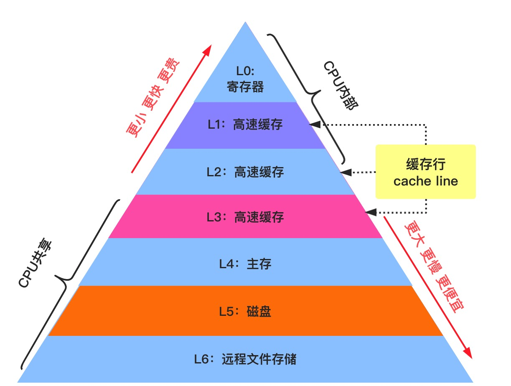
寄存器分類
一個CPU中有多個寄存器。每一個寄存器都有自己的名稱。寄存器按照種類分爲通用寄存器和控制寄存器。其中通用寄存器有可細分爲數據寄存器，指針寄存器，以及變址寄存器。
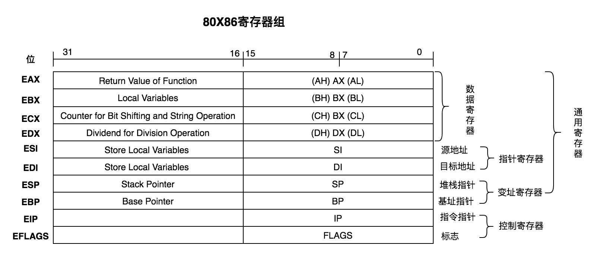
1979年因特爾推出8086架構的CPU，開始支持16位。爲了兼容之前8008架構的8位CPU，8086架構中AX寄存器高8位稱爲AH，低8位稱爲AL，用來對應8008架構的8位的A寄存器。後來隨着x86，以及x86-64 架構的CPU推出，開始支持32位以及64位，爲了兼容並保留了舊名稱，16位處理器的AX寄存器拓展成EAX(E代表拓展Extended的意思)。對於64位處理器的寄存器相應的RAX(R代表寄存器Register的意思)。其他指令也類似。
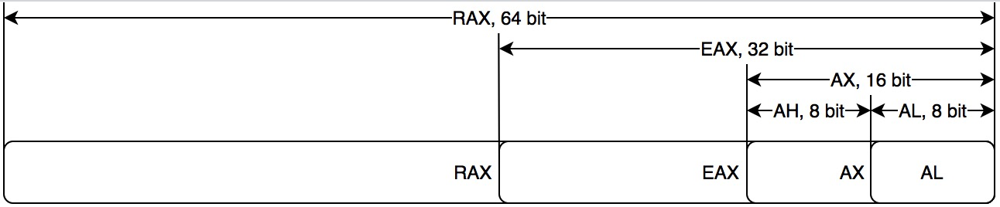
各個寄存器功能介紹：
| 寄存器 | 功能 |
|---|---|
| AX | A代表累加器Accumulator，X是八位寄存器AH和AL的中H和L的佔位符，表示AX由AH和AL組成。AX一般用於算術與邏輯運算，以及作爲函數返回值 |
| BX | B代表Base，BX一般用於保存中間地址(hold indirect addresses) |
| CX | C代表Count，CX一般用於計數，比如使用它來計算循環中的迭代次數或指定字符串中的字符數 |
| DX | D代表Data，DX一般用於保存某些算術運算的溢出，並且在訪問80x86 I/O總線上的數據時保存I/O地址 |
| DI | DI代表Destination Index，DI一般用於指針 |
| SI | SI代表Source Index，SI用途同DI一樣 |
| SP | SP代表Stack Pointer，是棧指針寄存器，存放着執行函數對應棧幀的棧頂地址，且始終指向棧頂 |
| BP | BP代表Base Pointer，是棧幀基址指針寄存器，存放這執行函數對應棧幀的棧底地址，一般用於訪問棧中的局部變量和參數 |
| IP | IP代表Instruction Pointer，是指令寄存器，指向處理器下條等待執行的指令地址(代碼段內的偏移量)，每次執行完相應彙編指令IP值就會增加；IP是個特殊寄存器，不能像訪問通用寄存器那樣訪問它。IP可被jmp、call和ret等指令隱含地改變 |
進程在虛擬內存中佈局
32位系統下，虛擬內存空間大小爲4G，每一個進程獨立的運行在該虛擬內存空間上。從0x00000000開始的3G空間屬於用戶空間，剩下1G空間屬於內核空間。
用戶空間還可以進一步細分，每一部分叫做段(section)，大致可以分爲以下幾段：
- Stack 棧空間：用於函數調用中存儲局部變量、返回地址、返回值等，向下增長，變量存儲和使用過程叫做入棧和出棧過程
- Heap 堆空間：用於動態申請的內存，比如c語言通過malloc函數調用分配內存，其向上增長。指針型變量指向的一般就是這裏面的空間。存儲此空間的數據需要GC的。棧上變量scope是函數級的，而堆上變量屬於進程級的
- Bss段：未初始化數據區，存儲未初始化的全局變量或靜態變量
- Data段：初始化數據區，存儲已經初始化的全局變量或靜態變量
- Text段：代碼區，存儲的是源碼編譯後二進制指令
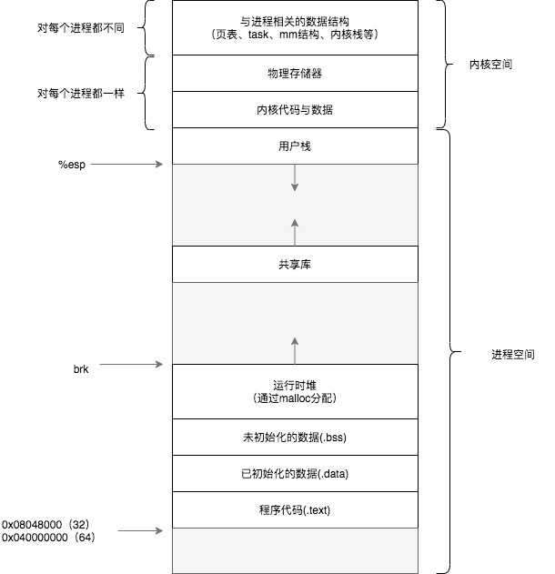
在32位系統中進程空間(即用戶空間）範圍爲0x00000000 ~ 0xbfffffff，內核空間範圍爲0xc0000000 ~ 0xffffffff, 實際上分配的進程空間並不是從0x00000000開始的，而是從0x08048000開始，到0xbfffffff結束。另外進程實際的esp指向的地址並不是從0xbfffffff開始的，因爲linux系統會在程序初始化前，將一些命令行參數及環境變量以及ELF輔助向量（ELF Auxiliary Vectors)等信息放到棧上。進程啓動時，其空間佈局如下所示（注意圖示中地址是從低地址到高地址的）：
stack pointer -> [ argc = number of args ] 4
[ argv[0] (pointer) ] 4 (program name)
[ argv[1] (pointer) ] 4
[ argv[..] (pointer) ] 4 * x
[ argv[n - 1] (pointer) ] 4
[ argv[n] (pointer) ] 4 (= NULL)
[ envp[0] (pointer) ] 4
[ envp[1] (pointer) ] 4
[ envp[..] (pointer) ] 4
[ envp[term] (pointer) ] 4 (= NULL)
[ auxv[0] (Elf32_auxv_t) ] 8
[ auxv[1] (Elf32_auxv_t) ] 8
[ auxv[..] (Elf32_auxv_t) ] 8
[ auxv[term] (Elf32_auxv_t) ] 8 (= AT_NULL vector)
[ padding ] 0 - 16
[ argument ASCIIZ strings ] >= 0
[ environment ASCIIZ strings ] >= 0
[ program name ASCIIZ strings ] >= 0
(0xbffffffc) [ end marker ] 4 (= NULL)
(0xc0000000) < bottom of stack > 0 (virtual)
進程空間起始位置處存放命令行參數個數與參數信息，我們將在後面章節有討論到。
caller 與 callee
如果一個函數調用另外一個函數，那麼該函數被稱爲調用者函數，也叫做caller，而被調用的函數稱爲被調用者函數，也叫做callee。比如函數main中調用sum函數，那麼main就是caller，而sum函數就是callee。
棧幀
棧幀即stack frame，即未完成函數所持有的，獨立連續的棧區域，用來保存其局部變量，返回地址等信息。
函數棧
當前函數作爲caller，其本身擁有的棧幀以及其所有callee的棧幀，可以稱爲該函數的函數棧。一般情況下函數棧大小是固定的，如果超出棧空間，就會棧溢出異常。比如遞歸求斐波拉契，這時候可以使用尾調用來優化。用火焰圖分析性能時候，火焰越高，說明棧越深。
AT&T 彙編語法
AT＆T彙編語法是類Unix的系統上的標準彙編語法，比如gcc、gdb中默認都是使用AT&T彙編語法。AT&T彙編的指令格式如下：
instruction src dst
其中instruction是指令助記符，也叫操作碼，比如mov就是一個指令助記符，src是源操作數，dst是目的操作。
當引用寄存器時候，應在寄存器名稱加前綴%，對於常數，則應加前綴 $。
指令分類
數據傳輸指令
| 彙編指令 | 邏輯表達式 | 含義 |
|---|---|---|
| mov $0x05, %ax | R[ax] = 0x05 | 將數值5存儲到寄存器ax中 |
| mov %ax, -4(%bp) | mem[R[bp] -4] = R[ax] | 將ax寄存器中存儲的數據存儲到 bp寄存器存的地址減去4之後的內存地址中， |
| mov -4(%bp), %ax | R[ax] = mem[R[bp] -4] | bp寄存器存儲的地址減去4值， 然後改地址對應的內存存儲的信息存儲到ax寄存器中 |
| mov $0x10, (%sp) | mem[R[sp]] = 0x10 | 將16存儲到sp寄存器存儲的地址對應的內存 |
| push $0x03 | mem[R[sp]] = 0x03 R[sp] = R[sp] - 4 | 將數值03入棧，然後sp寄存器存儲的地址減去4 |
| pop | R[sp] = R[sp] + 4 | 將當前sp寄存器指向的地址的變量出棧， 並將sp寄存器存儲的地址加4 |
| call func1 | --- | 調用函數func1 |
| ret | --- | 函數返回，將返回值存儲到寄存器中或caller棧中， 並將return address彈出到ip寄存器中 |
當使用mov指令傳遞數據時，數據的大小由mov指令的後綴決定。
movb $123, %eax // 1 byte
movw $123, %eax // 2 byte
movl $123, %eax // 4 byte
movq $123, %eax // 8 byte
算術運算指令
| 指令 | 含義 |
|---|---|
| subl $0x05, %eax | R[eax] = R[eax] - 0x05 |
| subl %eax, -4(%ebp) | mem[R[ebp] -4] = mem[R[ebp] -4] - R[eax] |
| subl -4(%ebp), %eax | R[eax] = R[eax] - mem[R[ebp] -4] |
跳轉指令
| 指令 | 含義 |
|---|---|
| cmpl %eax %ebx | 計算 R[eax] - R[ebx], 然後設置flags寄存器 |
| jmp location | 無條件跳轉到location |
| je location | 如果flags寄存器設置了相等標誌，則跳轉到location |
| jg, jge, jl, gle, jnz, ... location | 如果flags寄存器設置了>, >=, <, <=, != 0等標誌，則跳轉到location |
棧與地址管理指令
| 指令 | 含義 | 等同操作 |
|---|---|---|
| pushl %eax | 將R[eax]入棧 | subl $4, %esp; movl %eax, (%esp) |
| popl %eax | 將棧頂數據彈出，然後存儲到R[eax] | movl (%esp), %eax addl $4, %esp |
| leave | Restore the callers stack pointer | movl %ebp, %esp pop %ebp |
| lea 8(%esp), %esi | 將R[esp]存放的地址加8，然後存儲到R[esi] | R[esi] = R[esp] + 8 |
lea 是load effective address的縮寫，用於將一個內存地址直接賦給目的操作數。
函數調用指令
| 指令 | 含義 |
|---|---|
| call label | 調用函數，並將返回地址入棧 |
| ret | 從棧中彈出返回地址，並跳轉至該返回地址 |
| leave | 恢復調用者者棧指針 |
警告 注意：
以上指令分類並不規範和完整，比如
call,ret都可以算作無條件跳轉指令，這裏面是按照功能放在函數調用這一分類了。
Go 彙編
Go語言彙編器採用Plan9 彙編語法，該彙編語言是由貝爾實驗推出來的。下面說的Go彙編也就是Plan9 彙編。 不同於C語言彙編中彙編指令的寄存器都是代表硬件寄存器，Go彙編中的寄存器使用的是僞寄存器，可以把Go彙編考慮成是底層硬件彙編之上的抽象。
僞寄存器
Go彙編一共有4個僞寄存器：
-
FP: Frame pointer: arguments and locals.
- 使用形如 symbol+offset(FP) 的方式，引用函數的輸入參數。例如 arg0+0(FP)，arg1+8(FP)
- offset是正值
-
PC: Program counter: jumps and branches.
- PC寄存器，在 x86 平臺下對應 ip 寄存器，amd64 上則是 rip
-
SB: Static base pointer: global symbols.
- 全局靜態基指針，一般用來聲明函數或全局變量
-
SP: Stack pointer: top of stack.
- SP寄存器指向當前棧幀的局部變量的開始位置，使用形如 symbol+offset(SP) 的方式，引用函數的局部變量。
- offset是負值，offset 的合法取值是 [-framesize, 0)。
- 手寫彙編代碼時，如果是 symbol+offset(SP) 形式，則表示僞寄存器 SP。如果是 offset(SP) 則表示硬件寄存器 SP。對於編譯輸出(go tool compile -S / go tool objdump)的代碼來講，所有的 SP 都是硬件寄存器 SP，無論是否帶 symbol。
函數聲明
參數大小+返回值大小
|
TEXT pkgname·add(SB),NOSPLIT,$32-16
| | |
包名 函數名 棧幀大小
-
TEXT指令聲明瞭pagname.add是在.text段 -
pkgname·add中的·，是一個unicode的中點。在程序被鏈接之後，所有的中點·都會被替換爲點號.，所以通過 GDB 調試打斷點時候，應該是b pagname.add -
(SB):SB是一個虛擬寄存器，保存了靜態基地址(static-base) 指針，即我們程序地址空間的開始地址。"".add(SB)表明我們的符號add位於某個固定的相對地址空間起始處的偏移位置objdump -j .text -t test | grep 'main.add' # 可獲得main.add的絕對地址 -
NOSPLIT: 表明該函數內部不進行棧分裂邏輯處理，可以避免CPU資源浪費。關於棧分裂會在調度器章節介紹 -
$32-16:$32代表即將分配的棧幀大小；而$16指定了傳入的參數與返回值的大小
函數調用棧
Go彙編中函數調用的參數以及返回值都是由棧傳遞和保存的，這部分空間由caller在其棧幀(stack frame)上提供。Go彙編中沒有使用PUSH/POP指令進行棧的伸縮處理，所有棧的增長和收縮是通過在棧指針寄存器SP上分別執行加減指令來實現的。
caller
+------------------+
| |
+----------------------> |------------------|
| | caller parent BP |
| |------------------| <--------- BP(pseudo SP)
| | local Var0 |
| |------------------|
| | ......... |
| |------------------|
| | local VarN |
| |------------------|
| | temporarily |
| unused space |
caller stack frame |------------------|
| callee retN |
| |------------------|
| | ......... |
| |------------------|
| | callee ret0 |
| |------------------|
| | callee argN |
| |------------------|
| | ......... |
| |------------------|
| | callee arg0 |
| |------------------| <--------- FP(virtual register)
| | return addr |
+----------------------> |------------------| <----------------------+
| caller BP | |
BP(pseudo SP) ------> |------------------| |
| local Var0 | |
|------------------| |
| local Var1 |
|------------------| callee stack frame
| ......... |
|------------------| |
| local VarN | |
SP(Real Register) ------> |------------------| |
| | |
| | |
+------------------+ <----------------------+
callee
關於Go彙編進一步知識，我們將在 《基礎篇-函數-函數調用棧 》 章節詳細探討說明，此處我們只需要大致瞭解下函數聲明、調用棧概念即可。
獲取Go彙編代碼
go代碼示例：
package main
import "fmt"
//go:noinline
func add(a, b int) int {
return a + b
}
func main() {
c := add(3, 5)
fmt.Println(c)
}
go tool compile
go tool compile -N -l -S main.go
GOOS=linux GOARCH=amd64 go tool compile -N -l -S main.go # 指定系統和架構
- -N選項指示禁止優化
- -l選項指示禁止內聯
- -S選項指示打印出彙編代碼
若要禁止指定函數內聯優化，也可以在函數定義處加上noinline編譯指示：
//go:noinline
func add(a, b int) int {
return a + b
}
go tool objdump
方法1： 根據目標文件反編譯出彙編代碼
go tool compile -N -l main.go # 生成main.o
go tool objdump main.o
go tool objdump -s "main.(main|add)" ./test # objdump支持搜索特定字符串
方法2： 根據可執行文件反編譯出彙編代碼
go build -gcflags="-N -l" main.go -o test
go tool objdump main.o
go build -gcflags -S
go build -gcflags="-N -l -S" main.go
其他方法
進一步閱讀
數據類型與數據結構
繩鋸木斷，水滴石穿。
字符串
我們知道C語言中的字符串是使用字符數組 char[] 表示，字符數組的最後一位元素是 \0，用來標記字符串的結束。C語言中字符串的結構簡單，但獲取字符串長度時候，需要遍歷字符數組才能完成。
Go語言中字符串的底層結構中也包含了字符數組，該字符數組是完整的字符串內容，它不同於C語言，字符數組中沒有標記字符串結束的標記。爲了記錄底層字符數組的大小，Go語言使用了額外的一個長度字段來記錄該字符數組的大小，字符數組的大小也就是字符串的長度。
數據結構
Go語言字符串的底層數據結構是 reflect.StringHeader(reflect/value.go)，它包含了指向字節數組的指針，以及該指針指向的字符數組的大小：
type StringHeader struct {
Data uintptr
Len int
}
字符串複製
當將一個字符串變量賦值給另外一個變量時候，他們 StringHeader.Data 都指向同一個內存地址，不會發生字符串拷貝：
a := "hello"
b := a

從上圖中我們可以看到a變量和b變量的Data字段存儲的都是0x1234，而0x1234是字符數組的起始地址。
接來下我們藉助 GDB 工具來驗證Go語言中字符串數據結構是不是按照上面說的那樣。
package main
import (
"fmt"
)
func main() {
a := "hello"
b := a
fmt.Printf("a變量地址：%p\n", &a)
fmt.Printf("b變量地址：%p\n", &b)
print("斷點打在這裏")
}
將上面代碼構建二進制應用， 然後使用 GDB 調試一下：
go build -o string string.go # 構建二進制應用
gdb ./string # GDB調試
調試流程如下：

len(str) == 0 和 str == ""有區別嗎？
判斷一個字符串是否是空字符串，我們既可以使用len判斷其長度是0，也可以判斷其是否等於空字符串 ""。那麼它們有什麼區別嗎？這個問題的答案是二者沒有區別。因爲他們底層實現是一樣的。
讓我們來探究一下。源代碼如下：
package main
func isEmptyStr(str string) bool {
return len(str) == 0
}
func isEmtpyStr2(str string) bool {
return str == ""
}
func main() {
}
接下來我們來查看下上面代碼的底層彙編：
go tool compile -S empty_string.go # 查看底層彙編代碼
從下圖中，我們可以發現兩種方式的實現是一樣的：

警告 注意：
當我們編譯時候開啓了禁止內聯，禁止優化時候，可以發現len(str) == 0和str == ""的實現是不同的，前者的執行效率是不如後者的。在默認情況下，Go編譯器是開啓了優化選項的，len(str) == 0會優化成跟str == ""的實現一樣。
[3]string類型的變量佔用多大空間？
對於這個問題，直覺上覺得[3]string類型變量，由3個字符串組成，而字符串長度是不確定的，所以對於類似[n]string類型變量佔用多大的空間是不確定。
首先明確的是Go語言中提供了 unsafe.Sizeof 函數來確定一個類型變量佔用空間大小，這個大小是不含它引用的內存大小。比如某結構體中一個字段是個指針類型，這個字段指向的內存是不計算進去的，只會計算該字段本身的大小。
字符串底層結構是 reflect.StringHeader ，一共佔用16個字節空間，所以我們對於[n]string的大小，計算僞代碼如下：
unsafe.Sizeof([n]string) == n * 16
那麼問題[3]string類型的變量佔用多大空間？的答案是48。
如何高效的進行字符串拼接？
字符串進行拼接有多種方法：
-
使用拼接字符
+拼接字符串效率低，每次拼接會產生臨時字符串，適合少量字符串拼接。使用起來最簡單。
-
使用
fmt.Printf()來拼接字符由於需要將字符串轉換成空接口類型，效率差，這裏面不再討論
-
使用
strings.Join()來拼接字符串其底層其實使用的是
strings.Builder，效率高，適合字符串數組。 -
使用
bytes.Buffer來拼接字符串效率高，可以複用
-
使用
strings.Builder來拼接字符串效率高，每次Reset()之後，其底層緩衝會被清除，不適合複用。
使用拼接符 + 進行拼接
package main
import (
"fmt"
"reflect"
"unsafe"
)
func main() {
strSlices := []string{"h", "e", "l", "l", "o"}
var all string
for _, str := range strSlices {
all += str
sh := (*reflect.StringHeader)(unsafe.Pointer(&all))
fmt.Printf("str地址：%p，all地址：%p，all底層字節數組地址=0x%x\n", &str, &all, sh.Data)
}
}
上面代碼輸出一下內容：
str地址：0xc000010250，all地址：0xc000010240，all底層字節數組地址=0x4bc8f7
str地址：0xc000010250，all地址：0xc000010240，all底層字節數組地址=0xc000018048
str地址：0xc000010250，all地址：0xc000010240，all底層字節數組地址=0xc000018068
str地址：0xc000010250，all地址：0xc000010240，all底層字節數組地址=0xc000018078
str地址：0xc000010250，all地址：0xc000010240，all底層字節數組地址=0xc000018088
從上面輸出中可以發現str和all地址一直沒有變，但是all的底層字節數組地址一直在變化，這說明拼接符 + 在拼接字符串時候，會創建許多臨時字符串，臨時字符串意味着內存分配，指向效率不會太高。
使用 bytes.Buffer 拼接字符串
package main
import "bytes"
func main() {
strSlices := []string{"h", "e", "l", "l", "o"}
var bf bytes.Buffer
for _, str := range strSlices {
bf.WriteString(str)
}
print(bf.String())
}
bytes.Buffer 底層結構包含內存緩衝，最少緩衝大小是64個字節，當進行字符串拼接時候，由於利用到了緩衝，拼接效率相比拼接符 + 大大提升：
type Buffer struct {
buf []byte // 內存緩衝是字節切片類型
off int // buf已讀索引，下次讀取從buf[off]開始
lastRead readOp
}
func (b *Buffer) String() string {
if b == nil {
// Special case, useful in debugging.
return "<nil>"
}
return string(b.buf[b.off:])
}
警告 注意：
bytes.Buffer是可以複用的。當進行reset時候，並不會銷燬內存緩衝。
使用 strings.Builder 拼接字符串
package main
import "strings"
func main() {
strSlices := []string{"h", "e", "l", "l", "o"}
var strb strings.Builder
for _, str := range strSlices {
strb.WriteString(str)
}
print(strb.String())
}
strings.Builder 同 bytes.Buffer 一樣都是用內存緩衝，最大限度地減少了內存複製：
type Builder struct {
addr *Builder // 用來運行時檢測是否違背nocopy機制
buf []byte // 內存緩衝，類型是字節數組
}
func (b *Builder) String() string {
return *(*string)(unsafe.Pointer(&b.buf))
}
從上面可以看到 string.Builder 的 String 方法使用 unsafe.Pointer 將字節數組轉換成字符串。而bytes.Buffer的 String 方法使用的 string([]byte)將字節數組轉換成字符串，後者由於涉及內存分配和拷貝，相比之下它的執行效率低。
爲什麼bytes.Buffer的 String 方法的效率比較低，可以查看《基礎篇-切片-string類型與[]byte類型如何實現zero-copy互相轉換？》。
字符串拼接基準測試
下面我們進行基準測試下：
// 使用拼接符拼接字符串
func BenchmarkJoinStringUsePlus(b *testing.B) {
strSlices := []string{"h", "e", "l", "l", "o"}
for i := 0; i < b.N; i++ {
for j := 0; j < 10000; j++ {
var all string
for _, str := range strSlices {
all += str
}
_ = all
}
}
}
// 複用bytes.Buffer結構
func BenchmarkJoinStringUseBytesBufWithReuse(b *testing.B) {
strSlices := []string{"h", "e", "l", "l", "o"}
var bf bytes.Buffer
for i := 0; i < b.N; i++ {
for j := 0; j < 10000; j++ {
var all string
for _, str := range strSlices {
bf.WriteString(str)
}
all = bf.String()
_ = all
bf.Reset()
}
}
}
// 使用bytes.Buffer，未進行復用
func BenchmarkJoinStringUseBytesBufWithoutReuse(b *testing.B) {
strSlices := []string{"h", "e", "l", "l", "o"}
for i := 0; i < b.N; i++ {
for j := 0; j < 10000; j++ {
var all string
var bf bytes.Buffer
for _, str := range strSlices {
bf.WriteString(str)
}
all = bf.String()
_ = all
bf.Reset()
}
}
}
// 使用strings.Builder
func BenchmarkJoinStringUseStringBuilder(b *testing.B) {
strSlices := []string{"h", "e", "l", "l", "o"}
for i := 0; i < b.N; i++ {
for j := 0; j < 10000; j++ {
all := ""
var strb strings.Builder
for _, str := range strSlices {
strb.WriteString(str)
}
all = strb.String()
_ = all
strb.Reset()
}
}
}
基準測試結果如下：
BenchmarkJoinStringUsePlus 703 1633439 ns/op 160000 B/op 40000 allocs/op
BenchmarkJoinStringUseBytesBufWithReuse 2130 471368 ns/op 0 B/op 0 allocs/op
BenchmarkJoinStringUseBytesBufWithoutReuse 1209 883053 ns/op 640000 B/op 10000 allocs/op
BenchmarkJoinStringUseStringBuilder 1830 548350 ns/op 80000 B/op 10000 allocs/op
字符串拼接效率總結
從上面結果可以分析得到字符串拼接效率，其中strings.Builder的效率最高，拼接字符+效率最低：
strings.Builder > bytes.Buffer > 拼接字符+
但是由於bytes.Buffer可以複用，若在需要多此執行字符串拼接的場景下，推薦使用它。
數組
數組是Go語言中常見的數據結構，相比切片，數組我們使用的比較少。
初始化
Go語言數組有兩個聲明初始化方式，一種需要顯示指明數組大小，另一種使用 ... 保留字， 數組的長度將由編譯器在編譯階段推斷出來：
arr1 := [3]int{1, 2, 3} // 使用[n]T方式
arr2 := [...]int{1, 2, 3} // 使用[...]T方式
arr3 := [3]int{2: 3} // 使用[n]T方式
arr4 := [...]int{2: 3} // 使用[...]T方式
警告 注意：
上面代碼中
arr3和arr4的初始化方式是指定數組索引對應的值。實際使用中這種方式並不常見。
可比較性
數組大小是數組類型的一部分，只有數組大小和數組元素類型一樣的數組纔能夠進行比較。
func main() {
var a1 [3]int
var a2 [3]int
var a3 [5]int
fmt.Println(a1 == a2) // 輸出true
fmt.Println(a1 == a3) // 不能夠比較，會報編譯錯誤： invalid operation: a1 == a3 (mismatched types [3]int and [5]int)
}
值類型
Go語言中數組是一個值類型變量，將一個數組作爲函數參數傳遞是拷貝原數組形成一個新數組傳遞，在函數裏面對數組做任何更改都不會影響原數組：
func passArr(arr [3]int) {
arr[0] = arr[0] * 100
}
func main() {
myArr := [3]int{1, 3, 5}
passArr(myArr)
fmt.Println(myArr[0]) // 輸出1
}
空間局部性與時間局部性
CPU訪問數據時候，趨於訪問同一片內存區域的數據，這個稱爲 局部性原理（principle of locality）。局部性原理可以爲細分爲 空間局部性（Spatial Locality） 和 時間局部性（Temporal Locality）。
-
空間局部性
指的是如果一個位置的數據被訪問，那麼它周圍的數據也有可能被訪問到。
-
時間局部性
指的是如果一個位置的數據被訪問到，那麼它下一次還是很有可能被訪問到。所以我們可以把最近訪問的數據緩存起來，內存淘汰算法LRU就是基於這個原理。
我們知道數組內存空間是連續分配的，比如對於[3][5]int類型數組其內存空間分配使用如下圖所示：

觀察上面的二維數組的內存佈局，我們可以得出對於 [m][n]T 類型的數組中任一個元素內存地址的計算公式是：
數組元素的內存地址 = 第一個數組元素的內存地址 + 該元素跨過了多少行 * 元素類型大小 + 該元素在當前行的位置 * 元素類型大小
轉換成僞碼的實現如下：
address(arr[x][y]) = address(arr[0][0]) + x * n * sizeof(T) + y * sizeof(T)
= address(arr[0][0]) + (x * n + y) * sizeof(T)
下面我們根據上面公式來訪問數組中元素，下面代碼中使用到了 uintptr 和 unsafe.Pointer，如果不太瞭解的話可以看本書的 《基礎篇-指針》 那一章節：
package main
import (
"fmt"
"unsafe"
)
func main() {
arr := [2][3]int{{1, 2, 3}, {4, 5, 6}}
for i := 0; i < 2; i++ {
for j := 0; j < 3; j++ {
addr := uintptr(unsafe.Pointer(&arr[0][0])) + uintptr(i*3*8) + uintptr(j*8) // 地址
fmt.Printf("arr[%d][%d]: 地址 = 0x%x，值 = %d\n", i, j, addr, *(*int)(unsafe.Pointer(uintptr(unsafe.Pointer(&arr[0][0])) + uintptr(i*3*8) + uintptr(j*8))))
}
}
}
上面代碼運行結果如下：
arr[0][0]: 地址 = 0xc000068ef0，值 = 1
arr[0][1]: 地址 = 0xc000068ef8，值 = 2
arr[0][2]: 地址 = 0xc000068f00，值 = 3
arr[1][0]: 地址 = 0xc000068f08，值 = 4
arr[1][1]: 地址 = 0xc000068f10，值 = 5
arr[1][2]: 地址 = 0xc000068f18，值 = 6
空間局部性示例
對於數組的訪問，我們可以一行行訪問，也可以一列列訪問，根據上面分析我們可以得出一行行訪問可以有很好的空間局部性，有更好的執行效率的結論。因爲一行行訪問時，下一次訪問的就是當前元素挨着的元素，而一列列訪問則是需要跨過數組列數個元素：

最後我們來進行下基準測試驗證一下：
func BenchmarkAccessArrayByRow(b *testing.B) {
var myArr [3][5]int
b.ReportAllocs()
b.ResetTimer()
for k := 0; k < b.N; k++ {
for i := 0; i < 3; i++ {
for j := 0; j < 5; j++ {
myArr[i][j] = i*i + j*j
}
}
}
}
func BenchmarkAccessArrayByCol(b *testing.B) {
var myArr [3][5]int
b.ReportAllocs()
b.ResetTimer()
for k := 0; k < b.N; k++ {
for i := 0; i < 5; i++ {
for j := 0; j < 3; j++ {
myArr[j][i] = i*i + j*j
}
}
}
}
本人電腦中基準測試結果如下：
goos: linux
goarch: amd64
BenchmarkAccessArrayByRow 121336255 10.3 ns/op 0 B/op 0 allocs/op
BenchmarkAccessArrayByCol 82772149 13.2 ns/op 0 B/op 0 allocs/op
PASS
從上面結果可以看出來，我們可以發現按行訪問（10.3 ns/op）快於按列訪問（13.2 ns/op），符合我們預測的結論。
如何實現隨機訪問數組的全部元素？
這裏將介紹兩種實現方法。這兩種實現方法都是Go語言底層使用到的算法。
第一種方法用在Go調度器部分。G-M-P調度模型中，當M關聯的P的本地隊列中沒有可以執行的G時候，M會從其他P的本地可運行G隊列中偷取G，所有P存儲一個全局切片中，爲了隨機性選擇P來偷取，這就需要隨機的訪問數組。該算法具體叫什麼，未找到相關文檔。由於該算法實現上使用到素數和取模運算，姑且稱之素數取模隨機法。
第二種方法使用算法Fisher–Yates shuffle，Go語言用它來隨機性處理通道選擇器select中case語句。
素數取模隨機法
該算法實現邏輯是：對於一個數組[n]T，隨機的從小於n的素數集合中，選擇一個素數，假定是p，接着從數組0到n-1位置中隨機選擇一個位置開始，假定是m，那麼此時(m + p)%n = i位置處的數組元素就是我們要訪問的第一個元素。第二次要訪問的元素是(上一次位置+p)%n處元素，這裏面就是(i+p)%n，以此類推，訪問n次就可以訪問完全部數組元素。
舉個具體例子來說明，比如對於[8]int數組a，其素數集合是{1, 3, 5, 7}。假定選擇的素數是5，從位置1開始。
- 第一次訪問元素是 (1 + 5)%8 = 6處元素，即a[6]
- 第二次訪問元素是 (6 + 5)%8 = 3處元素，即a[3]
- 第三次訪問元素是 (3 + 5)%8 = 0處元素，即a[0]
- 第四次訪問元素是 (0 + 5)%8 = 5處元素，即a[5]
- 第五次訪問元素是 (5 + 5)%8 = 2處元素，即a[2]
- 第六次訪問元素是 (2 + 5)%8 = 7處元素，即a[7]
- 第七次訪問元素是 (7 + 5)%8 = 4處元素，即a[4]
- 第八次訪問元素是 (4 + 5)%8 = 1處元素，即a[1]
從上面例子可以看出來訪問8次即可遍歷完所有數組元素，由於素數和開始位置是隨機的，那麼訪問也能做到隨機性。
該算法實現如下，代碼來自Go源碼 runtime/proc.go：
package main
import (
"fmt"
"math/rand"
)
type randomOrder struct {
count uint32
coprimes []uint32
}
type randomEnum struct {
i uint32
count uint32
pos uint32
inc uint32
}
func (ord *randomOrder) reset(count uint32) {
ord.count = count
ord.coprimes = ord.coprimes[:0]
for i := uint32(1); i <= count; i++ { // 初始化素數集合
if gcd(i, count) == 1 {
ord.coprimes = append(ord.coprimes, i)
}
}
}
func (ord *randomOrder) start(i uint32) randomEnum {
return randomEnum{
count: ord.count,
pos: i % ord.count,
inc: ord.coprimes[i%uint32(len(ord.coprimes))],
}
}
func (enum *randomEnum) done() bool {
return enum.i == enum.count
}
func (enum *randomEnum) next() {
enum.i++
enum.pos = (enum.pos + enum.inc) % enum.count
}
func (enum *randomEnum) position() uint32 {
return enum.pos
}
func gcd(a, b uint32) uint32 { // 輾轉相除法取最大公約數
for b != 0 {
a, b = b, a%b
}
return a
}
func main() {
arr := [8]int{1, 2, 3, 4, 5, 6, 7, 8}
var order randomOrder
order.reset(uint32(len(arr)))
fmt.Println("====第一次隨機遍歷====")
for enum := order.start(rand.Uint32()); !enum.done(); enum.next() {
fmt.Println(arr[enum.position()])
}
fmt.Println("====第二次隨機遍歷====")
for enum := order.start(rand.Uint32()); !enum.done(); enum.next() {
fmt.Println(arr[enum.position()])
}
}
Fisher–Yates shuffle
進一步閱讀
切片
切片是Go語言中最常用的數據類型之一，它類似數組，但相比數組它更加靈活，高效，由於它本身的特性，往往也更容易用錯。
不同於數組是值類型，而切片是引用類型。雖然兩者作爲函數參數傳遞時候都是值傳遞（pass by value），但是切片傳遞的包含數據指針（可以細分爲pass by pointer），如果切片使用不當，會產生意想不到的副作用。
初始化
切片的初始化方式可以分爲三種：
-
使用make函數創建切片
make函數語法格式爲：make([]T, length, capacity)，capacity可以省略，默認等於length
-
使用字面量創建切片
-
從數組或者切片派生(reslice)出新切片
Go支持從數組、指向數組的指針、切片類型變量再reslice一個新切片。
reslice操作語法可以是[]T[low : high]，也可以是[]T[low : high : max]。其中low,high,max都可以省略，low默認值是0，high默認值cap([]T)，max默認值cap([]T)。low,hight,max取值範圍是
0 <= low <= high <= max <= cap([]T)，其中high-low是新切片的長度，max-low是新切片的容量。對於[]T[low : high]，其包含的元素是[]T中下標low開始，到high結束（不含high所在位置的，相當於左閉右開[low, high)）的元素，元素個數是high - low個，容量是cap([]T) - low。
func main() {
slice1 := make([]int, 0)
slice2 := make([]int, 1, 3)
slice3 := []int{}
slice4 := []int{1: 2, 3}
arr := []int{1, 2, 3}
slice5 := arr[1:2]
slice6 := arr[1:2:2]
slice7 := arr[1:]
slice8 := arr[:1]
slice9 := arr[3:]
slice10 := slice2[1:2]
fmt.Printf("%s = %v,\t len = %d, cap = %d\n", "slice1", slice1, len(slice1), cap(slice1))
fmt.Printf("%s = %v,\t len = %d, cap = %d\n", "slice2", slice2, len(slice2), cap(slice2))
fmt.Printf("%s = %v,\t len = %d, cap = %d\n", "slice3", slice3, len(slice3), cap(slice3))
fmt.Printf("%s = %v,\t len = %d, cap = %d\n", "slice4", slice4, len(slice4), cap(slice4))
fmt.Printf("%s = %v,\t len = %d, cap = %d\n", "slice5", slice5, len(slice5), cap(slice5))
fmt.Printf("%s = %v,\t len = %d, cap = %d\n", "slice6", slice6, len(slice6), cap(slice6))
fmt.Printf("%s = %v,\t len = %d, cap = %d\n", "slice7", slice7, len(slice7), cap(slice7))
fmt.Printf("%s = %v,\t len = %d, cap = %d\n", "slice8", slice8, len(slice8), cap(slice8))
fmt.Printf("%s = %v,\t len = %d, cap = %d\n", "slice9", slice9, len(slice9), cap(slice9))
fmt.Printf("%s = %v,\t len = %d, cap = %d\n", "slice10", slice10, len(slice10), cap(slice10))
}
上面代碼輸出一下內容：
slice1 = [], len = 0, cap = 0
slice2 = [0], len = 1, cap = 3
slice3 = [], len = 0, cap = 0
slice4 = [0 2 3], len = 3, cap = 3
slice5 = [2], len = 1, cap = 2
slice6 = [2], len = 1, cap = 1
slice7 = [2 3], len = 2, cap = 2
slice8 = [1], len = 1, cap = 3
slice9 = [], len = 0, cap = 0
slice10 = [0], len = 1, cap = 2
警告 注意：
我們使用arr[3]訪問切片元素時候會報
index out of range [3] with length錯誤，而使用arr[3:]來初始化slice9卻是可以的。因爲這是Go語言故意爲之的。具體原因可以參見 Why slice not painc 這個issue。
接下來我們來看看切片的底層數據結構。
數據結構
Go語言中切片的底層數據結構是 runtime.slice（runtime/slice.go），其中包含了指向數據數組的指針，切片長度以及切片容量：
type slice struct {
array unsafe.Pointer // 底層數據數組的指針
len int // 切片長度
cap int // 切片容量
}
警告 注意：
切片底層數據結構也可以說成是
reflect.SliceHeader，兩者沒有衝突。reflect.SliceHeader是暴露出來的類型，可以被用戶程序代碼直接使用。
我們來看看下面切片如何共用同一個底層數組的：
func main() {
a := []byte{'h', 'e', 'l', 'l', 'o'}
b := a[2:3]
c := a[2:3:3]
fmt.Println(string(a), string(b), string(c)) // 輸出 hello l l
}
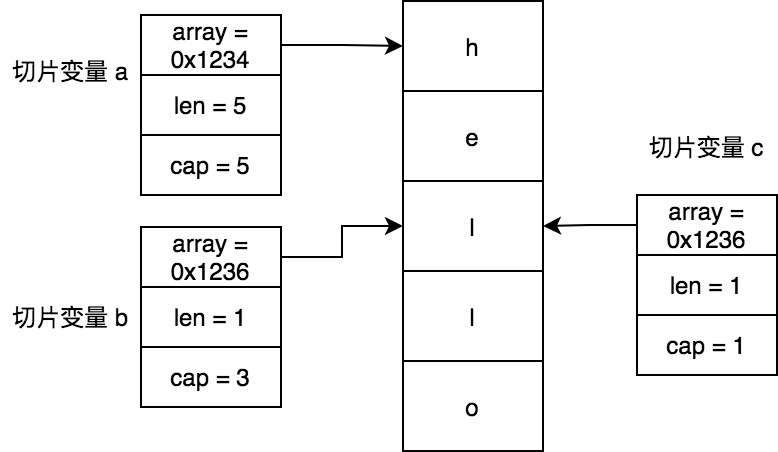
在前面 《基礎篇-字符串 》 章節，我們使用了 GDB 工具驗證了字符串的數據結構，這一次我們使用另外一種方式驗證切片的數據結構。我們通過打印切片的底層結構信息來驗證：
func main() {
type sliceHeader struct {
array unsafe.Pointer // 底層數據數組的指針
len int // 切片長度
cap int // 切片容量
}
a := []byte{'h', 'e', 'l', 'l', 'o'}
b := a[2:3]
c := a[2:3:3]
ptrA := (*sliceHeader)(unsafe.Pointer(&a))
ptrB := (*sliceHeader)(unsafe.Pointer(&b))
ptrC := (*sliceHeader)(unsafe.Pointer(&c))
fmt.Printf("切片%s: 底層數組地址=0x%x, 長度=%d, 容量=%d\n", "a", ptrA.array, ptrA.len, ptrA.cap)
fmt.Printf("切片%s: 底層數組地址=0x%x, 長度=%d, 容量=%d\n", "b", ptrB.array, ptrB.len, ptrB.cap)
fmt.Printf("切片%s: 底層數組地址=0x%x, 長度=%d, 容量=%d\n", "c", ptrC.array, ptrC.len, ptrC.cap)
}
上面代碼輸出以下內容：
切片a: 底層數組地址=0xc00009400b, 長度=5, 容量=5
切片b: 底層數組地址=0xc00009400d, 長度=1, 容量=3
切片c: 底層數組地址=0xc00009400d, 長度=1, 容量=1
從輸出內容可以看到切片變量 b和 c 都指向同一個底層數組地址 0xc00009400d，它們與切片變量 a 指向的底層數組地址 0xc00009400b 恰好相差2個字節，這兩個字節大小的內存空間存在的是 h 和 e 字符。
副作用
由於切片底層結構的特殊性，當我們使用切片的時候需要特別留心，防止產生副作用(side effect)。
示例1：append操作產生副作用
func main() {
slice1 := []byte{'h', 'e', 'l', 'l', 'o'}
slice2 := slice1[2:3]
slice2 = append(slice2, 'g')
fmt.Println(string(slice2)) // lg
fmt.Println(string(slice1)) // 輸出helge，slice1的值也變了。
}
上面代碼本意是將切片slice2追加g字符，卻產生副作用，即也修改了slice1的值：
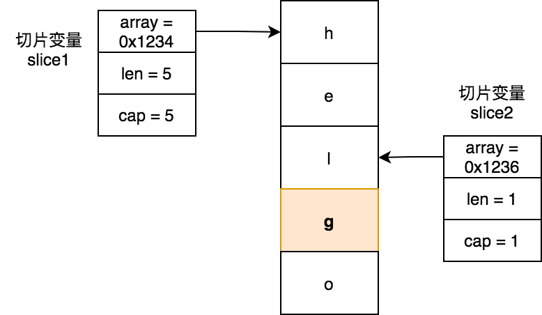
解決append產生的副作用
解決由於append產生的副作用，有兩種解決辦法：
- reslice時候指定max邊界
- 使用copy函數拷貝出一個副本
reslice時候指定max邊界
func main() {
slice1 := []byte{'h', 'e', 'l', 'l', 'o'}
slice2 := slice1[2:3:3]
slice2 = append(slice2, 'g') // 此時slice2容量擴大到8
fmt.Println(string(slice2)) // 輸出lg
fmt.Println(string(slice1)) // 輸出hello
}
通過slice2 := slice1[2:3:3] 方式進行reslice之後，slice2的長度和容量一樣，若對slice2再進行append操作其一定會發送擴容操作，此後slice2和slice1之間就沒有任何關係了。
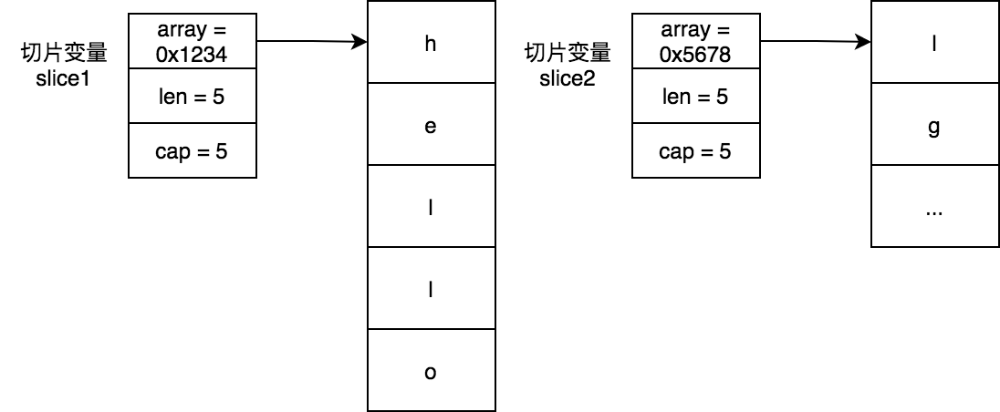
使用copy函數拷貝出一個副本
func main() {
slice1 := []byte{'h', 'e', 'l', 'l', 'o'}
slice2 := make([]byte, 1)
copy(slice2, slice1[2:3])
slice2 = append(slice2, 'g')
fmt.Println(string(slice2)) // 輸出lg
fmt.Println(string(slice1)) // 輸出hello
}
示例2：指針類型變量引用切片產生副作用
type User struct {
Likes int
}
func main() {
users := make([]User, 1)
pFirstUser := &users[0]
pFirstUser.Likes++
fmt.Println("所有用戶：")
for i := range users {
fmt.Printf("User: %d Likes: %d\n\n", i, users[i].Likes)
}
users = append(users, User{}) // 添加一個新用戶到集合中
pFirstUser.Likes++ // 第一個用戶的Likes次數加一
fmt.Println("所有用戶：")
for i := range users {
fmt.Printf("User: %d Likes: %d\n", i, users[i].Likes)
}
}
指向上面代碼輸出以下內容：
所有用戶：
User: 0 Likes: 1
所有用戶：
User: 0 Likes: 1
User: 1 Likes: 0
代碼本意是通過User類型指針變量pUsers進行第一個用戶Likes更新操作，沒想到切片進行append之後，產生了副作用：pUsers指向切片已經與切片變量users不一樣了。
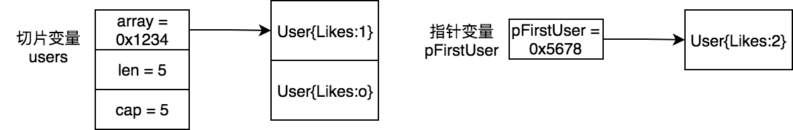
避免切片副作用黃金法則
- 在邊界處拷貝切片，這裏面的邊界指的是函數接受切片參數或返回切片的時候。
- 永遠不要使用一個變量來引用切片數據
擴容策略
當對切片進行append操作時候，若切片容量不夠時候，會進行擴容處理。當切片進行擴容時候會先調用runtime.growslice函數，該函數返回一個新的slice底層結構體，該結構體array字段指向新的底層數組地址，cap字段是新切片的容量，len字段是舊切片的長度，舊切片的內容會拷貝到新切片中，最後再把要追加的數據複製到新切片中，並更新切片len長度。
// et是slice元素類型
// old是舊的slice
// cap是新slice最低要求容量大小。是舊的slice的長度加上append函數中追加的元素的個數
// 比如s := []int{1, 2, 3}；s = append(s, 4, 5); 此時growslice中的cap參數值爲5
func growslice(et *_type, old slice, cap int) slice {
if cap < old.cap {
panic(errorString("growslice: cap out of range"))
}
if et.size == 0 {
return slice{unsafe.Pointer(&zerobase), old.len, cap}
}
newcap := old.cap
doublecap := newcap + newcap
if cap > doublecap { // 最小cap要求大於舊slice的cap兩倍大小
newcap = cap
} else {
if old.len < 1024 { // 當舊slice的len小於1024, 擴容一倍
newcap = doublecap
} else { // 否則每次擴容25%
for 0 < newcap && newcap < cap {
newcap += newcap / 4
}
if newcap <= 0 {
newcap = cap
}
}
}
var overflow bool
var lenmem, newlenmem, capmem uintptr
switch {
case et.size == 1: // 元素大小
lenmem = uintptr(old.len)
newlenmem = uintptr(cap)
capmem = roundupsize(uintptr(newcap))
overflow = uintptr(newcap) > maxAlloc
newcap = int(capmem) // 調整newcap大小
case et.size == sys.PtrSize:
lenmem = uintptr(old.len) * sys.PtrSize
newlenmem = uintptr(cap) * sys.PtrSize
capmem = roundupsize(uintptr(newcap) * sys.PtrSize)
overflow = uintptr(newcap) > maxAlloc/sys.PtrSize
newcap = int(capmem / sys.PtrSize)
case isPowerOfTwo(et.size):
var shift uintptr
if sys.PtrSize == 8 {
// Mask shift for better code generation.
shift = uintptr(sys.Ctz64(uint64(et.size))) & 63
} else {
shift = uintptr(sys.Ctz32(uint32(et.size))) & 31
}
lenmem = uintptr(old.len) << shift
newlenmem = uintptr(cap) << shift
capmem = roundupsize(uintptr(newcap) << shift)
overflow = uintptr(newcap) > (maxAlloc >> shift)
newcap = int(capmem >> shift)
default:
lenmem = uintptr(old.len) * et.size
newlenmem = uintptr(cap) * et.size
capmem, overflow = math.MulUintptr(et.size, uintptr(newcap))
capmem = roundupsize(capmem)
newcap = int(capmem / et.size)
}
if overflow || capmem > maxAlloc {
panic(errorString("growslice: cap out of range"))
}
var p unsafe.Pointer
if et.ptrdata == 0 { // 切片元素中沒有指針類型數據，不用考慮寫屏障問題
p = mallocgc(capmem, nil, false)
memclrNoHeapPointers(add(p, newlenmem), capmem-newlenmem)
} else {
p = mallocgc(capmem, et, true)
if lenmem > 0 && writeBarrier.enabled {
bulkBarrierPreWriteSrcOnly(uintptr(p), uintptr(old.array), lenmem)
}
}
// 涉及到slice擴容都會有內存移動操作
memmove(p, old.array, lenmem)
return slice{p, old.len, newcap}
}
從上面代碼中可以總結出切片擴容的策略是：
- 若切片容量小於1024，會擴容一倍
- 若切片容量大於等於1024，會擴容1/4大小，由於考慮內存對齊，最終實際擴容大小可能會大於1/4
從上面代碼中可以看到，切片進行擴容時一定會進行內存拷貝，這是成本較大操作。所以切片一大優化點就是在使用之前儘量指定好切片所需容量，避免出現擴容情況。
string類型與[]byte類型如何實現zero-copy互相轉換？
什麼是零拷貝(zero-copy)
零拷貝(zero-copy) 指的是CPU不需要先將數據從某處內存複製到另一個特定區域。當應用程序讀取文件，需要從磁盤中加載內核區域，然後將內核區域內容複製到應用內存區域，這就涉及到內存拷貝。若採用mmap技術可以文件映射到特定內存中，只需加載一次，應用程序和內核都可以共享內存中文件數據，這就實現了zero-copy。或者當應用程序需要發送文件給遠程時候，可以採用sendfile技術實現零拷貝，若未實現零拷貝，則需要進行四次拷貝過程:
磁盤---（DMA copy）--> 系統內核 --> 應用程序區域 --> 系統內核(socket) ---（DMA copy）---> 網卡
使用[]byte(string) 和 string([]byte)方式進行字符串和字節切片互轉時候會不會發生內存拷貝？
package main
func byteArrayToString(b []byte) string {
return string(b)
}
func stringToByteArray(s string) []byte {
return []byte(s)
}
func main() {
}
我們來看下上面代碼中的底層實現
go tool compile -N -l -S main.go
執行上面命名，輸出以下內容：
"".byteArrayToString STEXT size=117 args=0x28 locals=0x38
0x0000 00000 (main.go:3) TEXT "".byteArrayToString(SB), ABIInternal, $56-40
0x0000 00000 (main.go:3) MOVQ (TLS), CX
0x0009 00009 (main.go:3) CMPQ SP, 16(CX)
0x000d 00013 (main.go:3) PCDATA $0, $-2
0x000d 00013 (main.go:3) JLS 110
0x000f 00015 (main.go:3) PCDATA $0, $-1
0x000f 00015 (main.go:3) SUBQ $56, SP
0x0013 00019 (main.go:3) MOVQ BP, 48(SP)
0x0018 00024 (main.go:3) LEAQ 48(SP), BP
...
0x003c 00060 (main.go:4) MOVQ AX, 8(SP)
0x0041 00065 (main.go:4) MOVQ CX, 16(SP)
0x0046 00070 (main.go:4) MOVQ DX, 24(SP)
0x004b 00075 (main.go:4) CALL runtime.slicebytetostring(SB)
0x0050 00080 (main.go:4) MOVQ 40(SP), AX
....
"".stringToByteArray STEXT size=144 args=0x28 locals=0x50
0x0000 00000 (main.go:7) TEXT "".stringToByteArray(SB), ABIInternal, $80-40
0x0000 00000 (main.go:7) MOVQ (TLS), CX
0x0009 00009 (main.go:7) CMPQ SP, 16(CX)
...
0x0040 00064 (main.go:8) MOVQ AX, 8(SP)
0x0045 00069 (main.go:8) MOVQ CX, 16(SP)
0x004a 00074 (main.go:8) CALL runtime.stringtoslicebyte(SB)
0x004f 00079 (main.go:8) MOVQ 32(SP), AX
0x0054 00084 (main.go:8) MOVQ 40(SP), CX
....
從上面彙編代碼可以看到 string([]byte) 底層調用的是 runtime.slicebytetostring，[]byte(string) 底層調用的是 runtime.stringtoslicebyte。查看這兩個底層函數實現可以看到兩者都是先創建一段內存空間，然後使用 memmove 函數拷貝內存，將數據拷貝到新內存空間。這也就是說 []byte(string) 和 string([]byte) 進行轉換時候需要內存拷貝。
string類型與[]byte類型 zero-copy轉換實現
那麼能不能實現不需要內存拷貝的字符串和字節切片的轉換呢？答案是可以的。
根據前面 《基礎篇-字符串 》 章節和本章節，我們可以看到字符串和字節切片底層結構很相似，它們相同部分都有指向底層數據指針和記錄底層數據長度len字段，而字節切片額外多了一個字段cap，記錄底層數據的容量。我們只要轉換時候讓它們共享底層數據就能實現zero-copy。讓我們再看看字符串和切片的數組結構：
type StringHeader struct {
Data uintptr
Len int
}
type SliceHeader struct {
Data uintptr
Len int
Cap int
}
我們來看下網上比較常見zero-copy的實現方式，它是有bug的：
func string2bytes(s string) []byte {
return *(*[]byte)(unsafe.Pointer(&s))
}
func bytes2string(b []byte) string{
return *(*string)(unsafe.Pointer(&b))
}
我們來測試一下：
func main() {
a := "hello"
b := string2bytes(a)
fmt.Println(string(b), len(b), cap(b))
}
上面代碼輸出以下內容：
hello 5 824634122328
從上面輸入內容，我們可以看到字符串轉換成字節切片後的容量明顯是有問題的。讓我們來分析下具體原因。
上面兩個函數藉助 非安全指針類型 強制轉換類型實現的。對於字節切片轉換字符串使用這種方式是可以的，字節切片多餘的cap字段會自動溢出掉；而反過來由於字符串沒有記錄容量字段，那麼將其強制轉換成字節切片時候，字節切片的cap字段是未知的，這有可能導致非常嚴重問題。所以將字符串轉換成字節切片時候需要保證字節切片的cap設置正確。
正確的字符串轉字節切片實現如下：
func StringToBytes(s string) (b []byte) {
sh := *(*reflect.StringHeader)(unsafe.Pointer(&s))
bh := (*reflect.SliceHeader)(unsafe.Pointer(&b))
bh.Data, bh.Len, bh.Cap = sh.Data, sh.Len, sh.Len
return b
}
或者
func StringToBytes(s string) []byte {
return *(*[]byte)(unsafe.Pointer(
&struct {
string
Cap int
}{s, len(s)},
))
}
進一步閱讀
- The Go Programming Language Specification: Slice expressions
- Uber Go Style Guide: Copy Slices and Maps at Boundaries
nil
在探究 nil 之前，我們先看看零值的概念。
零值
零值(zero value)1 指的是當聲明變量且未顯示初始化時，Go語言會自動給變量賦予一個默認初始值。對於值類型變量來說不同值類型，有不同的零值，比如整數型零值是 0，字符串類型是 ""，布爾類型是 false。對於引用類型變量其零值都是 nil。
| 類型 | 零值 |
|---|---|
| 數值類型 | 0 |
| 字符串 | "" |
| 布爾類型 | false |
| 指針類型 | nil |
| 通道 | nil |
| 函數 | nil |
| 接口 | nil |
| 映射 | nil |
| 切片 | nil |
| 結構體 | 每個結構體字段對應類型的零值 |
| 自定義類型 | 其底層類型的對應的零值 |
從零值的定義，可以看出Go語言引入 nil 概念，是爲了將其作爲引用類型變量的零值而存在。
nil
nil 是Go語言中的一個變量，是預先聲明的標識符，用來作爲引用類型變量的零值。
// nil is a predeclared identifier representing the zero value for a
// pointer, channel, func, interface, map, or slice type.
var nil Type // Type must be a pointer, channel, func, interface, map, or slice type
nil 不能通過:=方式賦值給一個變量，下面代碼是編譯不通過的：
a := nil
上面代碼編譯不通過是因爲Go語言是無法通過 nil 自動推斷出a的類型，而Go語言是強類型的，每個變量都必須明確其類型。將 nil 賦值一個變量是可以的：
var a chan int
a = nil
b := make([]int, 5)
b = nil
與nil進行比較
nil 與 nil比較
nil 是不能和 nil 比較的：
func main() {
fmt.Println(nil == nil) // 報錯：invalid operation: nil == nil (operator == not defined on nil)
}
nil 與 指針類型變量、通道、切片、函數、映射比較
nil 是可以和指針類型變量，通道、切片、函數、映射比較的。
- 對於指針類型變量，只有其未指向任何對象時候，才能等於
nil：
func main() {
var p *int
println(p == nil) // true
a := 100
p = &a
println(p == nil) // false
}
- 對於通道、切片、映射只有
var t T或者手動賦值爲nil時候(t = nil)，才能等於nil:
func main() {
// 通道
var ch chan int
println(ch == nil) // true
ch = make(chan int, 0)
println(ch == nil) // false
ch1 := make(chan int, 0)
println(ch1 == nil) // false
ch1 = nil
println(ch1 == nil) // true
// 切片
var s []int // 此時s是nil slice
println(s == nil) // true
s = make([]int, 0, 0) // 此時s是empty slice
println(s == nil) // false
// 映射
var m map[int]int // 此時m是nil map
println(m == nil) // true
m = make(map[int]int, 0)
println(m == nil) // false
// 函數
var fn func()
println(fn == nil)
fn = func() {
}
println(fn == nil)
}
從上面可以看到，通過make函數初始化的變量都不等於 nil。
nil 與 接口比較
接口類型變量包含兩個基礎屬性：Type 和 Value，Type 指的是接口類型變量的底層類型，Value 指的是接口類型變量的底層值。接口類型變量是可以比較的。當它們具有相同的底層類型，且相等的底層值時候，或者兩者都爲nil時候，這兩個接口值是相等的。
當 nil 與接口比較時候，需要接口的 Type 和 Value都是 nil 時候，兩者才相等：
func main() {
var p *int
var i interface{} // (T=nil, V=nil)
println(p == nil) // true
println(i == nil) // true
var pi interface{} = interface{}(p) // (T=*int, V= nil)
println(pi == nil) // false
println(pi == i) // fasle
println(p == i) // false。跟上面強制轉換p一樣。當變量和接口比較時候，會隱式將其轉換成接口
var a interface{} = nil // (T=nil, V=nil)
println(a == nil) // true
var a2 interface{} = (*interface{})(nil) // (T=*interface{}, V=nil)
println(a2 == nil) // false
var a3 interface{} = (interface{})(nil) // (T=nil, V=nil)
println(a3 == nil) // true
}
nil 和接口比較最容易出錯的場景是使用error接口時候。Go官方文檔舉了一個例子 Why is my nil error value not equal to nil?:
type MyError int
func (e *MyError) Error() string {
return "errCode " + string(int)
}
func returnError() error {
var p *MyError = nil
if bad() { // 出現錯誤時候，返回MyError
p = &MyError(401)
}
// println(p == nil) // 輸出true
return p
}
func checkError(err error) {
if err == nil {
println("nil")
return
}
println("not nil")
}
err := returnError() // 假定returnsError函數中bad()返回false
println(err == nil) // false
checkError(err) // 輸出not nil
我們可以看到上面代碼中 checkError 函數輸出的並不是 nil，而是 not nil。這是因爲接口類型變量 err 的底層類型是 (T=*MyError, V=nil)，不再是 (T=nil, V=nil)。解決辦法是當需返回 nil 時候，直接返回 nil。
func returnError() error {
if bad() { // 出現錯誤時候，返回MyError
return &MyError(401)
}
return p
}
幾個值爲nil的特別變量
nil通道
通道類型變量的零值是 nil，對於等於 nil 的通道稱爲 nil通道。當從 nil通道 讀取或寫入數據時候，會發生永久性阻塞，若關閉則會發生恐慌。nil通道 存在的意義可以參考 Why are there nil channels in Go?
nil切片
對 nil切片 進行讀寫操作時候會發生恐慌。但對 nil切片 進行 append 操作時候是可以的，這是因爲Go語言對append操作做了特殊處理。
var s []int
s[0] = 1 // panic: runtime error: index out of range [0] with length 0
println(s[0]) // panic: runtime error: index out of range [0] with length 0
s = append(s, 100) // ok
nil映射
我們可以對 nil映射 進行讀取和刪除操作，當進行讀取操作時候會返回映射的零值。當進行寫操作時候會發生恐慌。
func main() {
var m map[int]int
println(m[100]) // print 0
delete(m, 1)
m[100] = 100 // panic: assignment to entry in nil map
}
nil接收者
值爲 nil 的變量可以作爲函數的接收者：
const defaultPath = "/usr/bin/"
type Config struct {
path string
}
func (c *Config) Path() string {
if c == nil {
return defaultPath
}
return c.path
}
func main() {
var c1 *Config
var c2 = &Config{
path: "/usr/local/bin/",
}
fmt.Println(c1.Path(), c2.Path())
}
nil函數
nil函數 可以用來處理默認值情況：
func NewServer(logger function) {
if logger == nil {
logger = log.Printf // default
}
logger.DoSomething...
}
參考資料
空結構體
空結構體指的是沒有任何字段的結構體。
大小與內存地址
空結構體佔用的內存空間大小爲零字節，並且它們的地址可能相等也可能不等。當發生內存逃逸時候，它們的地址是相等的，都指向了 runtime.zerobase。
// empty_struct.go
type Empty struct{}
//go:linkname zerobase runtime.zerobase
var zerobase uintptr // 使用go:linkname編譯指令，將zerobase變量指向runtime.zerobase
func main() {
a := Empty{}
b := struct{}{}
fmt.Println(unsafe.Sizeof(a) == 0) // true
fmt.Println(unsafe.Sizeof(b) == 0) // true
fmt.Printf("%p\n", &a) // 0x590d00
fmt.Printf("%p\n", &b) // 0x590d00
fmt.Printf("%p\n", &zerobase) // 0x590d00
c := new(Empty)
d := new(Empty)
fmt.Sprint(c, d) // 目的是讓變量c和d發生逃逸
println(c) // 0x590d00
println(d) // 0x590d00
fmt.Println(c == d) // true
e := new(Empty)
f := new(Empty)
println(e) // 0xc00008ef47
println(f) // 0xc00008ef47
fmt.Println(e == f) // flase
}
從上面代碼輸出可以看到 a, b, zerobase 這三個變量的地址都是一樣的，最終指向的都是全局變量runtime.zerobase(runtime/malloc.go)。
// base address for all 0-byte allocations
var zerobase uintptr
我們可以通過下面方法再次來驗證一下 runtime.zerobase 變量的地址是不是也是0x590d00：
go build -o empty_struct empty_struct.go
go tool nm ./empty_struct | grep 590d00
# 或者
objdump -t empty_struct | grep 590d00
執行上面命令輸出以下的內容：
590d00 D runtime.zerobase
# 或者
0000000000590d00 g O .noptrbss 0000000000000008 runtime.zerobase
從上面輸出的內容可以看到 runtime.zerobase 的地址也是 0x590d00。
接下來我們看看變量逃逸的情況：
go run -gcflags="-m -l" empty_struct.go
# command-line-arguments
./empty_struct.go:15:2: moved to heap: a
./empty_struct.go:16:2: moved to heap: b
./empty_struct.go:18:13: ... argument does not escape
./empty_struct.go:18:31: unsafe.Sizeof(a) == 0 escapes to heap
./empty_struct.go:19:13: ... argument does not escape
./empty_struct.go:19:31: unsafe.Sizeof(b) == 0 escapes to heap
./empty_struct.go:20:12: ... argument does not escape
./empty_struct.go:21:12: ... argument does not escape
./empty_struct.go:22:12: ... argument does not escape
./empty_struct.go:24:10: new(Empty) escapes to heap
./empty_struct.go:25:10: new(Empty) escapes to heap
./empty_struct.go:26:12: ... argument does not escape
./empty_struct.go:29:13: ... argument does not escape
./empty_struct.go:29:16: c == d escapes to heap
./empty_struct.go:31:10: new(Empty) does not escape
./empty_struct.go:32:10: new(Empty) does not escape
./empty_struct.go:35:13: ... argument does not escape
./empty_struct.go:35:16: e == f escapes to heap
可以看到變量 c 和 d 逃逸到堆上，它們打印出來的都是 0x591d00，且兩者進行相等比較時候返回 true。而變量 e 和 f 打印出來的都是0xc00008ef47，但兩者進行相等比較時候卻返回false。這因爲Go有意爲之的，當空結構體變量未發生逃逸時候，指向該變量的指針是不等的，當空結構體變量發生逃逸之後，指向該變量是相等的。這也就是 Go官方語法指南 所說的：
Pointers to distinct zero-size variables may or may not be equal

危險 注意：
不論逃逸還是未逃逸，我們都不應該對空結構體類型變量指向的內存地址是否一樣，做任何預期。
當一個結構體嵌入空結構體時，佔用空間怎麼計算？
空結構體本身不佔用空間，但是作爲某結構體內嵌字段時候，有可能是佔用空間的。具體計算規則如下：
- 當空結構體是該結構體唯一的字段時，該結構體是不佔用空間的，空結構體自然也不佔用空間
- 當空結構體作爲第一個字段或者中間字段時候，是不佔用空間的
- 當空結構體作爲最後一個字段時候，是佔用空間的，大小跟其前一個字段保持一致
type s1 struct {
a struct{}
}
type s2 struct {
_ struct{}
}
type s3 struct {
a struct{}
b byte
}
type s4 struct {
a struct{}
b int64
}
type s5 struct {
a byte
b struct{}
c int64
}
type s6 struct {
a byte
b struct{}
}
type s7 struct {
a int64
b struct{}
}
type s8 struct {
a struct{}
b struct{}
}
func main() {
fmt.Println(unsafe.Sizeof(s1{})) // 0
fmt.Println(unsafe.Sizeof(s2{})) // 0
fmt.Println(unsafe.Sizeof(s3{})) // 1
fmt.Println(unsafe.Sizeof(s4{})) // 8
fmt.Println(unsafe.Sizeof(s5{})) // 16
fmt.Println(unsafe.Sizeof(s6{})) // 2
fmt.Println(unsafe.Sizeof(s7{})) // 16
fmt.Println(unsafe.Sizeof(s8{})) // 0
}
當空結構體作爲數組、切片的元素時候：
var a [10]int
fmt.Println(unsafe.Sizeof(a)) // 80
var b [10]struct{}
fmt.Println(unsafe.Sizeof(b)) // 0
var c = make([]struct{}, 10)
fmt.Println(unsafe.Sizeof(c)) // 24，即slice header的大小
用途
由於空結構體佔用的空間大小爲零，我們可以利用這個特性，完成一些功能，卻不需要佔用額外空間。
阻止unkeyed方式初始化結構體
type MustKeydStruct struct {
Name string
Age int
_ struct{}
}
func main() {
persion := MustKeydStruct{Name: "hello", Age: 10}
fmt.Println(persion)
persion2 := MustKeydStruct{"hello", 10} //編譯失敗，提示： too few values in MustKeydStruct{...}
fmt.Println(persion2)
}
實現集合數據結構
集合數據結構我們可以使用map來實現：只關心key，不必關心value，我們就可以值設置爲空結構體類型變量（或者底層類型是空結構體的變量）。
package main
import (
"fmt"
)
type Set struct {
items map[interface{}]emptyItem
}
type emptyItem struct{}
var itemExists = emptyItem{}
func NewSet() *Set {
set := &Set{items: make(map[interface{}]emptyItem)}
return set
}
// 添加元素到集合
func (set *Set) Add(item interface{}) {
set.items[item] = itemExists
}
// 從集合中刪除元素
func (set *Set) Remove(item interface{}) {
delete(set.items, item)
}
// 判斷元素是否存在集合中
func (set *Set) Contains(item interface{}) bool {
_, contains := set.items[item]
return contains
}
// 返回集合大小
func (set *Set) Size() int {
return len(set.items)
}
func main() {
set := NewSet()
set.Add("hello")
set.Add("world")
fmt.Println(set.Contains("hello"))
fmt.Println(set.Contains("Hello"))
fmt.Println(set.Size())
}
作爲通道的信號傳輸
使用通道時候，有時候我們只關心是否有數據從通道內傳輸出來，而不關心數據內容，這時候通道數據相當於一個信號，比如我們實現退出時候。下面例子是基於通道實現的信號量。
// empty struct
var empty = struct{}{}
// Semaphore is empty type chan
type Semaphore chan struct{}
// P used to acquire n resources
func (s Semaphore) P(n int) {
for i := 0; i < n; i++ {
s <- empty
}
}
// V used to release n resouces
func (s Semaphore) V(n int) {
for i := 0; i < n; i++ {
<-s
}
}
// Lock used to lock resource
func (s Semaphore) Lock() {
s.P(1)
}
// Unlock used to unlock resource
func (s Semaphore) Unlock() {
s.V(1)
}
// NewSemaphore return semaphore
func NewSemaphore(N int) Semaphore {
return make(Semaphore, N)
}
進一步閱讀
指針
Golang支持指針，但是不能像C語言中那樣進行算術運算。對於任意類型T，其對應的的指針類型是*T，類型T稱爲指針類型*T的基類型。
引用與解引用
一個指針類型*T變量B存儲的是類型T變量A的內存地址，我們稱該指針類型變量B引用(reference)了A。從指針類型變量B獲取（或者稱爲訪問）A變量的值的過程，叫解引用。解引用是通過解引用操作符*操作的。
func main() {
var A int = 100
var B *int = &A
fmt.Println(A == *B)
}
轉換和可比較性
對於指針類型變量能不能夠比較和顯示轉換需要滿足以下規則：
- 指針類型*T1和*T2相應的基類型T1和T2的底層類型必須一致。
type MyInt int
type PInt *int
type PMyInt *MyInt
func main() {
p1 := new(int)
var p2 PInt = p1 // p2底層類型是*int
p3 := new(MyInt)
var p4 PMyInt = p3 // p4底層類型是*MyInt
fmt.Println(p1, p2, p3, p4)
}
uintptr
uintptr是一個足夠大的整數類型，能夠存放任何指針。不同C語言，Go語言中普通類型指針不能進行算術運算，我們可以將普通類型指針轉換成uintptr然後進行運算，但普通類型指針不能直接轉換成uintptr，必須先轉換成unsafe.Pointer類型之後，再轉換成uintptr。
// uintptr is an integer type that is large enough to hold the bit pattern of
// any pointer.
type uintptr uintptr
unsafe.Pointer
unsafe標準庫包提供了unsafe.Pointer類型，unsafe.Pointer類型稱爲非安全指針類型。
type ArbitraryType int
type Pointer *ArbitraryType
unsafe標準庫包中也提供了三個函數：
func Alignof(variable ArbitraryType) uintptr // 用來獲取變量variable的對齊保證
func Offsetof(selector ArbitraryType) uintptr // 用來獲取結構體值中的某個字段的地址相對於此結構體值地址的偏移
func Sizeof(variable ArbitraryType) uintptr // 用來獲取變量variable變量的大小尺寸
任何指針類型都可以轉換成unsafe.Pointer類型，即unsafe.Pointer可以指向任何類型（arbitrary type），但是該類型值是不能夠解引用(dereferenced)的。unsafe.Pointer類型的零值是nil。反過來，unsafe.Pointer也可以轉換成任何指針類型。
unsafe.Pointer類型變量可以顯示轉換成內置的uintptr類型變量，uintptr變量是整數，可以進行算術運算，也可以反向轉換成unsafe.Pointer。
安全類型指針(普通類型指針) <----> unsafe.Pointer <-----> uintptr
如何正確地使用非類型安全指針？
unsafe包中列出6種正確使用unsafe.Pointer的模式。
Code not using these patterns is likely to be invalid today or to become invalid in the future 在代碼中不使用這些模式可能現在無效，或者將來也會變成無效的。
通過非安全類型指針，將T1轉換成T2
func Float64bits(f float64) uint64 {
return *(*uint64)(unsafe.Pointer(&f))
}
此時unsafe.Pointer充當橋樑，注意T2類型的尺寸不應該大於T1，否則會出現溢出異常
將非安全類型指針轉換成uintptr類型
type MyInt int
func main() {
a := 100
fmt.Printf("%p\n", &a)
fmt.Printf("%x\n", uintptr(unsafe.Pointer(&a)))
}
將非安全類型指針轉換成uintptr類型，並進行算術運算
這種模式常用來訪問結構體字段或者數組的地址。
type MyType struct {
f1 uint8
f2 int
f3 uint64
}
func main() {
s := MyType{f1: 10, f2: 20, f3: 30}
f2UintPtr := uintptr(unsafe.Pointer(uintptr(unsafe.Pointer(&s)) + unsafe.Offsetof(s.f2)))
fmt.Printf("%p\n", &s)
fmt.Printf("%x\n", f2UintPtr) // f2UintPtr = s地址 + 8
arr := [3]int{}
fmt.Printf("%p\n", &arr)
for i := 0; i < 3; i++ {
addr := uintptr(unsafe.Pointer(uintptr(unsafe.Pointer(&arr[0])) + uintptr(i)*unsafe.Sizeof(arr[0])))
fmt.Printf("%x\n", addr)
}
}
通過指針移動到變量內存地址的末尾是無效的：
// INVALID: end points outside allocated space.
var s thing
end = unsafe.Pointer(uintptr(unsafe.Pointer(&s)) + unsafe.Sizeof(s))
// INVALID: end points outside allocated space.
b := make([]byte, n)
end = unsafe.Pointer(uintptr(unsafe.Pointer(&b[0])) + uintptr(n))
.. warning:: 當將uintptr轉換回unsafe.Pointer時，其不能賦值給一個變量進行中轉。
我們來看看下面這個例子：
type MyType struct {
f1 uint8
f2 int
f3 uint64
}
func main() {
// 方式1
s := MyType{f1: 10, f2: 20, f3: 30}
ptr := uintptr(unsafe.Pointer(&s)) + unsafe.Offsetof(s.f2)
f2Ptr := (*int)(unsafe.Pointer(ptr))
fmt.Println(*f2Ptr)
// 方式2
f2Ptr2 := (*int)(unsafe.Pointer(uintptr(unsafe.Pointer(&s)) + unsafe.Offsetof(s.f2)))
fmt.Println(*f2Ptr2)
}
上面代碼中方式1是不安全的，儘管大多數情況結果是符合我們期望的，但是由於將uintptr賦值給ptr時，變量s已不再被引用，這時候若恰好進行GC，變量s會被回收處理。這會造成此後的操作都是非法訪問內存地址。所以對於uintptr轉換成unsafe.Pointer的場景，我們應該採用方式2將其寫在一行裏面。
將非類型安全指針值轉換爲uintptr值，然後傳遞給syscall.Syscall函數
如果unsafe.Pointer參數必須轉換爲uintptr才能作爲參數使用，這個轉換必須出現在調用表達式中：
syscall.Syscall(SYS_READ, uintptr(fd), uintptr(unsafe.Pointer(p)), uintptr(n))
將unsafe.Pointer轉換成uintptr後傳參時，無法保證執行函數時其執行的內存未回收。只有將這個轉換放在函數調用表達時候，才能保證函數能夠安全的訪問該內存，這個是編譯器進行安全保障實現的。
將reflect.Value.Pointer或reflect.Value.UnsafeAddr方法的uintptr返回值轉換爲非類型安全指針
reflect標準庫包中的Value類型的Pointer和UnsafeAddr方法都返回uintptr類型值，而不是unsafe.Pointer類型值，是爲了避免用戶在不引用unsafe包情況下就可以將這兩個方法的返回值轉換爲任何類型安全指針類型。
調用reflect.Value.Pointer或reflect.Value.UnsafeAddr方法獲取uintptr，並轉換unsafe.Pointer必須放在一行表達式中：
p := (*int)(unsafe.Pointer(reflect.ValueOf(new(int)).Pointer()))
下面這種形式是非法：
// INVALID: uintptr cannot be stored in variable
// before conversion back to Pointer.
u := reflect.ValueOf(new(int)).Pointer()
p := (*int)(unsafe.Pointer(u))
將reflect.SliceHeader或reflect.StringHeader的Data字段轉換成非安全類型，或反之操作
正確的轉換操作如下：
var s string
hdr := (*reflect.StringHeader)(unsafe.Pointer(&s)) // 模式1
hdr.Data = uintptr(unsafe.Pointer(p)) // 模式6
hdr.Len = n
下面操作是存在bug的：
var hdr reflect.StringHeader
hdr.Data = uintptr(unsafe.Pointer(p))
// 當執行下面代碼時候，hdr.Data指向的內存可以已經被回收了
hdr.Len = n
s := *(*string)(unsafe.Pointer(&hdr))
映射
映射也被稱爲哈希表(hash table)、字典。它是一種由key-value組成的抽象數據結構。大多數情況下，它都能在O(1)的時間複雜度下實現增刪改查功能。若在極端情況下出現所有key都發生哈希碰撞時則退回成鏈表形式，此時複雜度爲O(N)。
映射底層一般都是由數組組成，該數組每個元素稱爲桶，它使用hash函數將key分配到不同桶中，若出現碰撞衝突時候，則採用鏈地址法（也稱爲拉鍊法）或者開放尋址法解決衝突。下圖就是一個由姓名-號碼構成的哈希表的結構圖：
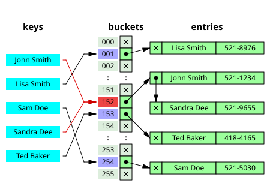
Go語言中映射中key若出現衝突碰撞時候，則採用鏈地址法解決，Go語言中映射具有以下特點：
- 引用類型變量
- 讀寫併發不安全
- 遍歷結果是隨機的
數據結構
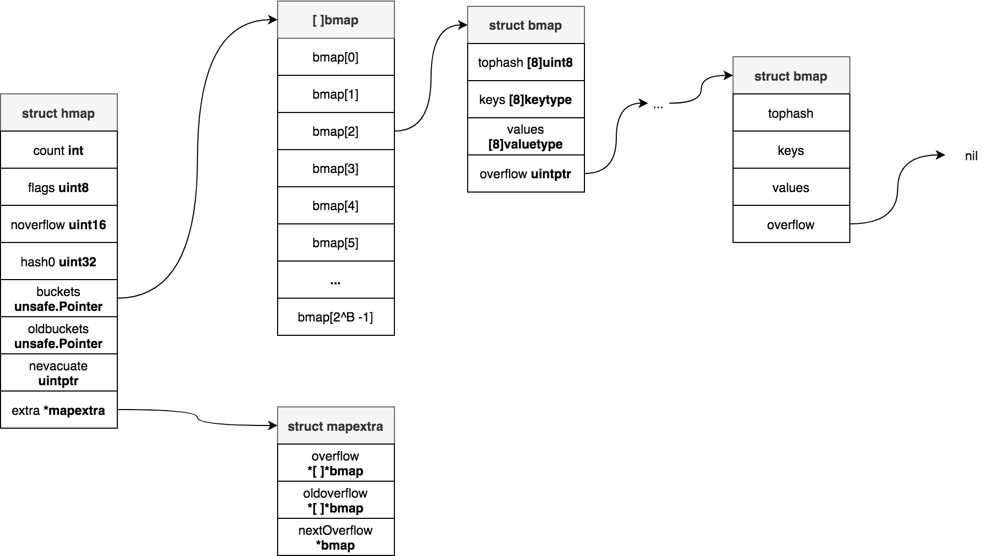
Go語言中映射的數據結構是 runtime.hmap(runtime/map.go):
// A header for a Go map.
type hmap struct {
count int // 元素個數，用於len函數返回map元素數量
flags uint8 // 標誌位，標誌當前map正在寫等狀態
B uint8 // buckets個數的對數，即桶數量 = 2 ^ B
noverflow uint16 // overflow桶數量的近似值，overflow桶即溢出桶，即鏈表法中存在鏈表上的桶的個數
hash0 uint32 // 隨機數種子，用於計算key的哈希值
buckets unsafe.Pointer // 指向buckets數組，如果元素個數爲0時，該值爲nil
oldbuckets unsafe.Pointer // 擴容時指向舊的buckets
nevacuate uintptr // 用於指示遷移進度，小於此值的桶已經遷移完成
extra *mapextra // 額外記錄overflow桶信息
}
映射中每一個桶的結構是 runtime.bmap(runtime/map.go)：
// A bucket for a Go map.
type bmap struct {
tophash [bucketCnt]uint8
}
上面bmap結構是靜態結構，在編譯過程中 runtime.bmap 會拓展成以下結構體：
type bmap struct{
tophash [8]uint8
keys [8]keytype // keytype 由編譯器編譯時候確定
values [8]elemtype // elemtype 由編譯器編譯時候確定
overflow uintptr // overflow指向下一個bmap，overflow是uintptr而不是*bmap類型，是爲了減少gc
}
bmap結構示意圖：
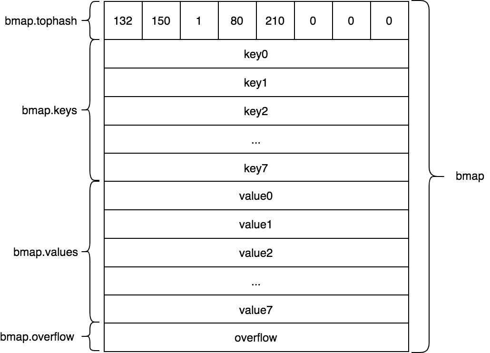
每個桶bmap中可以裝載8個key-value鍵值對。當一個key確定存儲在哪個桶之後，還需要確定具體存儲在桶的哪個位置（這個位置也稱爲桶單元，一個bmap裝載8個key-value鍵值對，那麼一個bmap共8個桶單元），bmap中tophash就是用於實現快速定位key的位置。在實現過程中會使用key的hash值的高八位作爲tophash值，存放在bmap的tophash字段中。tophash計算公式如下：
func tophash(hash uintptr) uint8 {
top := uint8(hash >> (sys.PtrSize*8 - 8))
if top < minTopHash {
top += minTopHash
}
return top
}
上面函數中hash是64位的，sys.PtrSize值是8，所以top := uint8(hash >> (sys.PtrSize*8 - 8))等效top = uint8(hash >> 56)，最後top取出來的值就是hash的最高8位值。bmap的tophash字段不光存儲key哈希值的高八位，還會存儲一些狀態值，用來表明當前桶單元狀態，這些狀態值都是小於minTopHash的。
爲了避免key哈希值的高八位值出現這些狀態值相等產生混淆情況，所以當key哈希值高八位若小於minTopHash時候，自動將其值加上minTopHash作爲該key的tophash。桶單元的狀態值如下：
emptyRest = 0 // 表明此桶單元爲空，且更高索引的單元也是空
emptyOne = 1 // 表明此桶單元爲空
evacuatedX = 2 // 用於表示擴容遷移到新桶前半段區間
evacuatedY = 3 // 用於表示擴容遷移到新桶後半段區間
evacuatedEmpty = 4 // 用於表示此單元已遷移
minTopHash = 5 // key的tophash值與桶狀態值分割線值，小於此值的一定代表着桶單元的狀態，大於此值的一定是key對應的tophash值
emptyRest和emptyOne狀態都表示此桶單元爲空，都可以用來插入數據。但是emptyRest還代表着更高單元也爲空，那麼遍歷尋找key的時候，當遇到當前單元值爲emptyRest時候，那麼更高單元無需繼續遍歷。
下圖中桶單元1的tophash值是emptyOne，桶單元3的tophash值是emptyRest，那麼我們一定可以推斷出桶單元3以上都是emptyRest狀態。
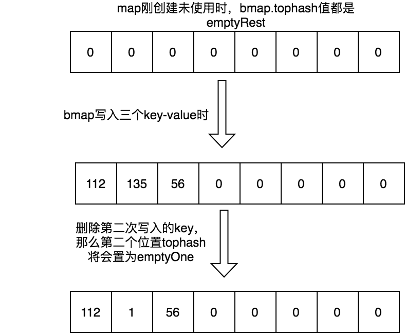
bmap中可以裝載8個key-value，這8個key-value並不是按照key1/value1/key2/value2/key3/value3...這樣形式存儲，而採用key1/key2../key8/value1/../value8形式存儲，因爲第二種形式可以減少padding，源碼中以map[int64]int8舉例說明。
hmap中extra字段是 runtime.mapextra 類型，用來記錄額外信息：
// mapextra holds fields that are not present on all maps.
type mapextra struct {
overflow *[]*bmap // 指向overflow桶指針組成的切片，防止這些溢出桶被gc了
oldoverflow *[]*bmap // 擴容時候，指向舊的溢出桶組成的切片，防止這些溢出桶被gc了
//指向下一個可用的overflow 桶
nextOverflow *bmap
}
當映射的key和value都不是指針類型時候，bmap將完全不包含指針，那麼gc時候就不用掃描bmap。bmap指向溢出桶的字段overflow是uintptr類型，爲了防止這些overflow桶被gc掉，所以需要mapextra.overflow將它保存起來。如果bmap的overflow是*bmap類型，那麼gc掃描的是一個個拉鍊表，效率明顯不如直接掃描一段內存(hmap.mapextra.overflow)
映射的創建
當使用make函數創建映射時候，若不指定map元素數量時候，底層將使用是make_small函數創建hmap結構，此時只產生哈希種子，不初始化桶：
func makemap_small() *hmap {
h := new(hmap)
h.hash0 = fastrand()
return h
}
若指定map元素數量時候，底層會使用 makemap 函數創建hmap結構：
func makemap(t *maptype, hint int, h *hmap) *hmap {
mem, overflow := math.MulUintptr(uintptr(hint), t.bucket.size)
if overflow || mem > maxAlloc { // 檢查所有桶佔用的內存是否大於內存限制
hint = 0
}
// h不nil，說明map結構已經創建在棧上了，這個操作由編譯器處理的
if h == nil { // h爲nil，則需要創建一個hmap類型
h = new(hmap)
}
h.hash0 = fastrand() // 設置map的隨機數種子
B := uint8(0)
for overLoadFactor(hint, B) { // 設置合適B的值
B++
}
h.B = B
// 如果B == 0，那麼map的buckets，將會惰性分配（allocated lazily），使用時候再分配
// 如果B != 0時，初始化桶
if h.B != 0 {
var nextOverflow *bmap
h.buckets, nextOverflow = makeBucketArray(t, h.B, nil)
if nextOverflow != nil {
h.extra = new(mapextra)
h.extra.nextOverflow = nextOverflow // extra.nextOverflow指向下一個可用溢出桶位置
}
}
return h
}
makemap函數的第一個參數是maptype類指針，它描述了創建的map中key和value元素的類型信息以及其他map信息，第二個參數hint，對應是make([Type]Type, len)中len參數，第三個參數h，如果不爲nil，說明當前map的結構已經有編譯器在棧上創建了，makemap只需要完成設置隨機數種子等操作。
overLoadFactor函數用來判斷當前映射的加載因子是否超過加載因子閾值。makemap使用overLoadFactor函數來調整B值。
加載因子，也稱爲擴容因子，或者負載因子，用來描述哈希表中元素填滿程度，加載因子越大，表明哈希表中元素越多，空間利用率高，但是這也意味着衝突的機會就會加大。加載因子是通過寫入元素個數除以桶個數得到，當哈希表中所有桶已寫滿情況下，此時加載因子是1，此時再寫入新key一定會產生衝突碰撞。爲了提高哈希表寫入效率就必須在加載因子超過一定值時（這個值稱爲加載因子閾值），進行rehash操作，將桶容量進行擴容，來儘量避免出現衝突情況。
Java中hashmap的默認加載因子閾值是0.75，Go語言中映射的加載因子閾值是6.5。爲什麼Go映射的加載因子閾值不是0.75，而且超過了1？這是因爲Java中哈希表的桶存放的是一個key-value，其滿載因子是1，Go映射中每個桶可以存8個key-value，滿載因子是8，當加載因子閾值爲6.5時候空間利用率和寫入性能達到最佳平衡。
func overLoadFactor(count int, B uint8) bool {
// count > bucketCnt，bucketCnt值是8，每一個桶可以存放8個key-value，如果map中元素個數count小於8那麼一定不會超過加載因子
// loadFactorNum和loadFactorDen的值分別是13和2，bucketShift(B)等效於1<<B
// 所以 uintptr(count) > loadFactorNum*(bucketShift(B)/loadFactorDen) 等於 uintptr(count) > 6.5 * 2^ B
return count > bucketCnt && uintptr(count) > loadFactorNum*(bucketShift(B)/loadFactorDen)
}
// bucketShift returns 1<<b, optimized for code generation.
func bucketShift(b uint8) uintptr {
return uintptr(1) << (b & (sys.PtrSize*8 - 1))
}
makeBucketArray函數是用來創建bmap array，來用作爲map的buckets。對於創建時指定元素大小超過(2^4) * 8時候，除了創建map的buckets，也會提前分配好一些桶作爲溢出桶。buckets和溢出桶，在內存上是連續的。爲啥提前分配好溢出桶，而不是在溢出時候，再分配，這是因爲現在分配是直接申請一大片內存，效率更高。
hamp.extra.nextOverflow指向該溢出桶，溢出桶的除了最後一個桶的overflow指向map的buckets，其他桶的overflow指向nil，這是用來判斷溢出桶最後邊界，後面代碼有涉及此處邏輯。
func makeBucketArray(t *maptype, b uint8, dirtyalloc unsafe.Pointer) (buckets unsafe.Pointer, nextOverflow *bmap) {
base := bucketShift(b) // 等效於 base := 1 << b
nbuckets := base
if b >= 4 { // 對於小b，不太可能出現溢出桶，所以B超過4時候，才考慮提前分配寫溢出桶
nbuckets += bucketShift(b - 4)
sz := t.bucket.size * nbuckets
up := roundupsize(sz)
if up != sz {
nbuckets = up / t.bucket.size
}
}
if dirtyalloc == nil {
buckets = newarray(t.bucket, int(nbuckets))
} else {
// 若dirtyalloc不爲nil時，
// dirtyalloc指向的之前已經使用完的map的buckets，之前已使用完的map和當前map具有相同類型的t和b，這樣它buckets可以拿來複用
// 此時只需對dirtyalloc進行清除操作就可以作爲當前map的buckets
buckets = dirtyalloc
size := t.bucket.size * nbuckets
// 下面是清空dirtyalloc操作
if t.bucket.ptrdata != 0 { // map中key或value是指針類型
memclrHasPointers(buckets, size)
} else {
memclrNoHeapPointers(buckets, size)
}
}
if base != nbuckets { // 多創建一些溢出桶
nextOverflow = (*bmap)(add(buckets, base*uintptr(t.bucketsize)))
// 溢出桶的最後一個的overflow字段指向buckets
last := (*bmap)(add(buckets, (nbuckets-1)*uintptr(t.bucketsize)))
last.setoverflow(t, (*bmap)(buckets))
}
return buckets, nextOverflow
}
我們畫出桶初始化時候的分配示意圖：
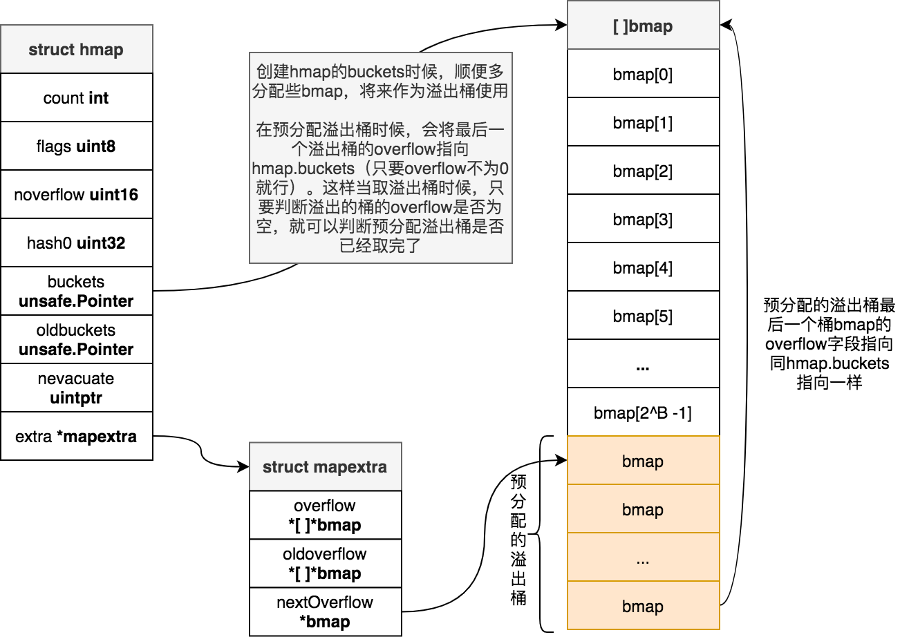
通過上面分析整個映射創建過程，可以看到使用make創建map時候，返回都是hmap類型指針，這也就說明Go語言中映射是引用類型。
訪問映射操作
訪問映射涉及到key定位的問題，首先需要確定從哪個桶找，確定桶之後，還需要確定key-value具體存放在哪個單元裏面（每個桶裏面有8個坑位）。key定位詳細流程如下：
- 首先需根據hash函數計算出key的hash值
- 該key的hash值的低
hmap.B位的值是該key所在的桶 - 該key的hash值的高8位，用來快速定位其在桶具體位置。一個桶中存放8個key，遍歷所有key，找到等於該key的位置，此位置對應的就是值所在位置
- 根據步驟3取到的值，計算該值的hash，再次比較，若相等則定位成功。否則重複步驟3去
bmap.overflow中繼續查找。 - 若
bmap.overflow鏈表都找個遍都沒有找到，則返回nil。
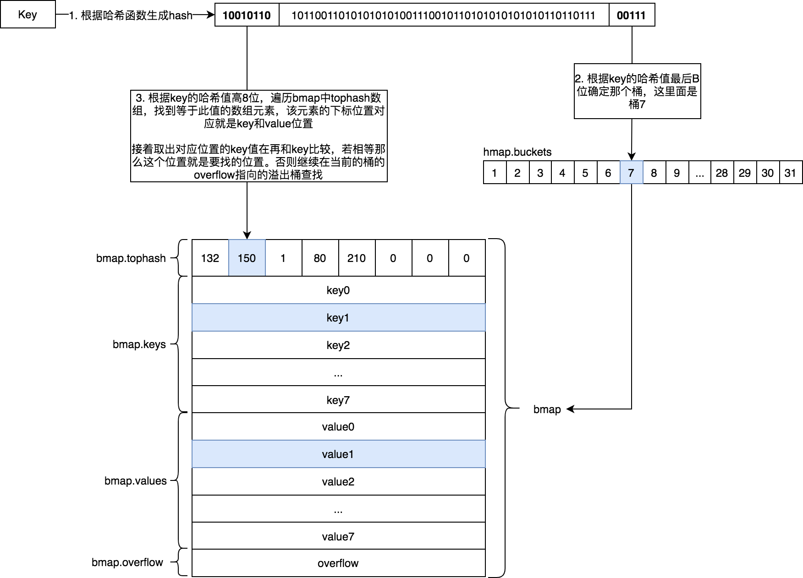
當m爲2的x冪時候，n對m取餘數存在以下等式：
n % m = n & (m -1)
舉個例子比如：n爲15，m爲8，n%m等7, n&(m-1)也等於7，取餘應儘量使用第二種方式，因爲效率更高。
那麼對於映射中key定位計算就是：
key對應value所在桶位置 = hash(key)%(hmap.B << 1) = hash(key) & (hmap.B <<1 - 1)
那麼爲什麼上面key定位流程步驟2中說的卻是根據該key的hash值的低hmap.B位的值是該key所在的桶。兩者是沒有區別的，只是一種意思不同說法。
直接訪問與逗號ok模式訪問
訪問映射操作方式有兩種：
第一種直接訪問，若key不存在，則返回value類型的零值，其底層實現mapaccess1函數：
v := a["x"]
第二種是逗號ok模式，如果key不存在，除了返回value類型的零值，ok變量也會設置爲false，其底層實現mapaccess2：
v, ok := a["x"]
爲了優化性能，Go編譯器會根據key類型採用不同底層函數，比如對於key類型是int的，底層實現是mapaccess1_fast64。具體文件可以查看runtime/map_fastxxx.go。優化版本函數有：
| key 類型 | 方法 |
|---|---|
| uint64 | func mapaccess1_fast64(t *maptype, h *hmap, key uint64) unsafe.Pointer |
| uint64 | func mapaccess2_fast64(t *maptype, h *hmap, key uint64) (unsafe.Pointer, bool) |
| uint32 | func mapaccess1_fast32(t *maptype, h *hmap, key uint32) unsafe.Pointer |
| uint32 | func mapaccess2_fast32(t *maptype, h *hmap, key uint32) (unsafe.Pointer, bool) |
| string | func mapaccess1_faststr(t *maptype, h *hmap, ky string) unsafe.Pointer |
| string | func mapaccess2_faststr(t *maptype, h *hmap, ky string) (unsafe.Pointer, bool) |
這裏面我們這分析通用的mapaccess1函數。
func mapaccess1(t *maptype, h *hmap, key unsafe.Pointer) unsafe.Pointer {
if h == nil || h.count == 0 { // map爲nil或者map中元素個數爲0，則直接返回零值
if t.hashMightPanic() {
t.hasher(key, 0) // see issue 23734
}
return unsafe.Pointer(&zeroVal[0])
}
if h.flags&hashWriting != 0 { // 有其他Goroutine正在寫map，則直接panic
throw("concurrent map read and map write")
}
hash := t.hasher(key, uintptr(h.hash0)) // 計算出key的hash值
m := bucketMask(h.B) // m = 2^h.B - 1
b := (*bmap)(add(h.buckets, (hash&m)*uintptr(t.bucketsize))) // 根據上面介紹的取餘操作轉換成位與操作來獲取key所在的桶
if c := h.oldbuckets; c != nil { // 如果oldbuckets不爲0，說明該map正在處於擴容過程中
if !h.sameSizeGrow() { // 如果不是等容量擴容，此時buckets大小是oldbuckets的兩倍，那麼m需減半，然後用來定位key在舊桶中位置
m >>= 1
}
oldb := (*bmap)(add(c, (hash&m)*uintptr(t.bucketsize))) // 獲取key在舊桶的桶
if !evacuated(oldb) { // 如果舊桶數據沒有遷移新桶裏面，那就在舊桶裏面找
b = oldb
}
}
top := tophash(hash) // 計算出key的tophash
bucketloop:
for ; b != nil; b = b.overflow(t) { // for循環實現功能是先從當前桶找，若未找到則當前桶的溢出桶b.overfolw(t)查找，直到溢出桶爲nil
for i := uintptr(0); i < bucketCnt; i++ { // 每個桶有8個單元，循環這8個單元，一個個找
if b.tophash[i] != top { // 如果當前單元的tophash與key的tophash不一致，
if b.tophash[i] == emptyRest { // 若單元tophash值是emptyRest，則直接跳出整個大循環，emptyRest表明當前單元和更高單元存儲都爲空，所以無需在繼續查找下去了
break bucketloop
}
continue // 繼續查找桶其他的單元
}
// 此時已找到tophash等於key的tophash的桶單元，此時i記錄這桶單元編號
k := add(unsafe.Pointer(b), dataOffset+i*uintptr(t.keysize)) // dataOffset是bmap.keys相對於bmap的偏移，k記錄key存在bmap的位置
if t.indirectkey() { // 若key是指針類型
k = *((*unsafe.Pointer)(k))
}
if t.key.equal(key, k) {// 如果key和存放bmap裏面的key相等則獲取對應value值返回
// value在bmap中的位置 = bmap.keys相對於bmap的偏移 + 8個key佔用的空間(8 * keysize) + 該value在bmap.values中偏移(i * t.elemsize)
e := add(unsafe.Pointer(b), dataOffset+bucketCnt*uintptr(t.keysize)+i*uintptr(t.elemsize))
if t.indirectelem() {
e = *((*unsafe.Pointer)(e))
}
return e
}
}
}
return unsafe.Pointer(&zeroVal[0])
}
賦值映射操作
在map中增加和更新key-value時候，都會調用runtime.mapassign方法，同訪問操作一樣，Go編譯器針對不同類型的key，會採用優化版本函數：
| key 類型 | 方法 |
|---|---|
| uint64 | func mapassign_fast64(t *maptype, h *hmap, key uint64) unsafe.Pointer |
| unsafe.Pointer | func mapassign_fast64ptr(t *maptype, h *hmap, key unsafe.Pointer) unsafe.Pointer |
| uint32 | func mapassign_fast32(t *maptype, h *hmap, key uint32) unsafe.Pointer |
| unsafe.Pointer | func mapassign_fast32ptr(t *maptype, h *hmap, key unsafe.Pointer) unsafe.Pointer |
| string | func mapassign_faststr(t *maptype, h *hmap, s string) unsafe.Pointer |
這裏面我們只分析通用的方法mapassign：
func mapassign(t *maptype, h *hmap, key unsafe.Pointer) unsafe.Pointer {
if h == nil { // 對於nil map賦值操作直接panic。需要注意的是訪問nil map返回的是value類型的零值
panic(plainError("assignment to entry in nil map"))
}
if h.flags&hashWriting != 0 { // 有其他Goroutine正在寫操作，則直接panic
throw("concurrent map writes")
}
hash := t.hasher(key, uintptr(h.hash0)) // 計算出key的hash值
h.flags ^= hashWriting // 將寫標誌位置爲1
if h.buckets == nil { // 惰性創建buckets，make創建map時候，並未初始buckets，等到mapassign時候在創建初始化
h.buckets = newobject(t.bucket) // newarray(t.bucket, 1)
}
again:
bucket := hash & bucketMask(h.B) // bucket := hash & (2^h.B - 1)
if h.growing() { // 如果當前map處於擴容過程中，則先進行擴容，將key所對應的舊桶先遷移過來
growWork(t, h, bucket)
}
b := (*bmap)(unsafe.Pointer(uintptr(h.buckets) + bucket*uintptr(t.bucketsize))) // 獲取key所在的桶
top := tophash(hash) // 計算出key的tophash
var inserti *uint8 // 指向key的tophash應該存放的位置，即bmap.tophash這個數組中某個位置
var insertk unsafe.Pointer // 指向key應該存放的位置，即bmap.keys這個數組中某個位置
var elem unsafe.Pointer // 指向value應該存放的位置，即bmap.values這個數組中某個位置
bucketloop:
for {
for i := uintptr(0); i < bucketCnt; i++ {
if b.tophash[i] != top {
if isEmpty(b.tophash[i]) && inserti == nil { // 當i單元的tophash值爲空，那麼說明該單元可以用來存放key-value。
// 再加上inserti == nil條件就是inserti只找到第一個空閒的單元即可
inserti = &b.tophash[i]
insertk = add(unsafe.Pointer(b), dataOffset+i*uintptr(t.keysize))
elem = add(unsafe.Pointer(b), dataOffset+bucketCnt*uintptr(t.keysize)+i*uintptr(t.elemsize))
}
if b.tophash[i] == emptyRest { // 如果i單元的tophash值爲emptyRest，那麼剩下單元也不用繼續找了，剩下單元一定都是空的
break bucketloop
}
continue
}
// 上面代碼是先找到第一個爲空的桶單元，然後把該桶單元相關的tophash、key、value等位置信息記錄在inserti，insertk，elem臨時變量上。
// 這樣當key沒有在map中情況下，可以拿inserti，insertk，elem這變量，將該key的信息寫入到桶單元中，這種情況下key是一個新key，這種賦值操作屬於新增操作。
// 下面代碼部分就是處理中map已存在key的情況，這時候，我們只需要找到key所在桶單元中value的位置，然後把value新值寫入即可。
// 這種情況下key是一箇舊key，這種賦值操作屬於更新操作。
k := add(unsafe.Pointer(b), dataOffset+i*uintptr(t.keysize))
if t.indirectkey() {
k = *((*unsafe.Pointer)(k))
}
if !t.key.equal(key, k) {
continue
}
if t.needkeyupdate() {
typedmemmove(t.key, k, key)
}
elem = add(unsafe.Pointer(b), dataOffset+bucketCnt*uintptr(t.keysize)+i*uintptr(t.elemsize))
goto done
}
ovf := b.overflow(t) // 當前桶沒有找到，繼續在其溢出桶裏面找，
if ovf == nil { // 直到都沒有找到，那麼跳出循環，不在找了。
break
}
b = ovf
}
// 當map未擴容中，那麼就判斷當前map是否需要擴容，擴容條件是以下兩個條件符合任意之一即可：
// 1. 是否達到負載因子的閾值6.5
// 2. 溢出桶是否過多
if !h.growing() && (overLoadFactor(h.count+1, h.B) || tooManyOverflowBuckets(h.noverflow, h.B)) {
hashGrow(t, h)
goto again // 跳到again標籤處，再來一遍
}
// 如果上面兩層for循環都沒有找到空的桶單元，那說明所有桶單元都寫滿了，那麼就得創建一個溢出桶了。
// 然後將數據存放到該溢出桶的第一個單元上
if inserti == nil {
newb := h.newoverflow(t, b) // 創建一個溢出桶
inserti = &newb.tophash[0]
insertk = add(unsafe.Pointer(newb), dataOffset)
elem = add(insertk, bucketCnt*uintptr(t.keysize))
}
// store new key/elem at insert position
if t.indirectkey() {
kmem := newobject(t.key)
*(*unsafe.Pointer)(insertk) = kmem
insertk = kmem
}
if t.indirectelem() {
vmem := newobject(t.elem)
*(*unsafe.Pointer)(elem) = vmem
}
typedmemmove(t.key, insertk, key)
*inserti = top // 寫入key的tophash值
h.count++ // 更新map的元素計數
done:
if h.flags&hashWriting == 0 {
throw("concurrent map writes")
}
h.flags &^= hashWriting // 將map的寫標誌置爲0，那麼其他Gorountine可以進行寫入操作了
if t.indirectelem() {
elem = *((*unsafe.Pointer)(elem))
}
return elem
}
我們梳理總結下mapassign函數執行流程：
-
首先進行寫標誌檢查和桶初始化檢查。如果當前map寫標誌位已經置爲1，那麼肯定有它Gorountine正在進行寫操作，那麼直接panic。桶初始化檢查是當map的桶未創建情況下，則在桶初始化檢查階段創建一個桶。
-
接下來判斷桶是否處在擴容過程中，如果處在擴容過程中，那麼先將當前key所在舊桶全部遷移到新桶中，然後再接着遷移一箇舊桶，也就是說每次mapasssign最多隻遷移兩個舊桶。爲什麼一定要先遷移key所在的舊桶數據呢？如果key是新key，那麼舊桶中一定沒有這個key信息，這種情況遷不遷移舊桶無關緊要，但若key之前在舊桶已存在，那麼一定要先遷移，如果不這樣的話，當key的新value寫入新桶中之後再遷移，那麼舊桶中的舊數據就會覆蓋掉新桶中key的value值，爲了應對這種情況，所以一定要先遷移key所在舊桶數據。
-
接下就是兩層for循環。第一層for循環就是遍歷當前key所在桶，以及桶的溢出桶，直到桶的所有溢出桶都遍歷一遍後，終止該層循環。第二層for循環遍歷的是第一層for循環每次得到的桶中的8個桶單元。兩層for循環是爲了在map中找到key，如果找到key，那隻需更新key對應value值就可。在循環過程中，會記錄下第一個爲空的桶單元，這樣在未找到key的情況時候，就把key-value信息寫入這個桶單元中。如果map中未找到key，且也未找到空的桶單元，那麼沒有辦法了，只能創建一個溢出桶來存放該key-value。
-
接下里判斷當前map是否需要擴容，如果需要擴容，則調用hashGrow函數，將舊的buckets掛到hmap.oldbuckets字段上，再接着通過goto語法跳轉標籤形式跳到流程2繼續執行下去
-
最後就是將key的tophash，key值寫入到找到的桶單元中，並返回桶單元的value地址。value的寫入是拿到mapassign返回的地址，再寫入的。
接下來我們看下溢出桶創建操作：
- 首先會從預分配的溢出桶列表中取，如果未取到，則會現場創建一個溢出桶
- 若map的key和value都不是指針類型，那麼會將溢出桶記錄到hmap.extra.overflow中
func (h *hmap) newoverflow(t *maptype, b *bmap) *bmap {
var ovf *bmap
if h.extra != nil && h.extra.nextOverflow != nil {
ovf = h.extra.nextOverflow // 從上面分析映射的創建過程代碼中，我們知道創建map的buckets時候，有時候會順便創建一些溢出桶，
// h.extra.nextOverflow就是指向這些溢出桶
if ovf.overflow(t) == nil { // ovf不是最後一個溢出桶
h.extra.nextOverflow = (*bmap)(add(unsafe.Pointer(ovf), uintptr(t.bucketsize))) // extra.nextOverflow指向下一個溢出桶
} else { // ovf是最後一個溢出桶
ovf.setoverflow(t, nil) // 將ovf.overflow設置nil
h.extra.nextOverflow = nil
}
} else {
// 沒有可用的預分配的溢出桶，則創建一個溢出桶
ovf = (*bmap)(newobject(t.bucket))
}
h.incrnoverflow() // 更新溢出桶計數，這個溢出桶計數可用來是否進行rehash的依據
if t.bucket.ptrdata == 0 { // 如果map中的key和value都不是指針類型，那麼將溢出桶指針添加到extra.overflow這個切片中
h.createOverflow()
*h.extra.overflow = append(*h.extra.overflow, ovf)
}
b.setoverflow(t, ovf)
return ovf
}
func (h *hmap) createOverflow() {
if h.extra == nil {
h.extra = new(mapextra)
}
if h.extra.overflow == nil {
h.extra.overflow = new([]*bmap)
}
}
func (b *bmap) overflow(t *maptype) *bmap {
return *(**bmap)(add(unsafe.Pointer(b), uintptr(t.bucketsize)-sys.PtrSize))
}
func (b *bmap) setoverflow(t *maptype, ovf *bmap) {
*(**bmap)(add(unsafe.Pointer(b), uintptr(t.bucketsize)-sys.PtrSize)) = ovf
}
func (h *hmap) incrnoverflow() {
if h.B < 16 {
h.noverflow++
return
}
// 當h.B大於等於16時候，有1/(1<<(h.B-15))的概率會更新h.noverflow
// 比如h.B == 18時，mask==7，那麼fastrand & 7 == 0的概率就是1/8
mask := uint32(1)<<(h.B-15) - 1
if fastrand()&mask == 0 {
h.noverflow++
}
}
映射的刪除操作
在map中刪除key-value時候，都會調用runtime.mapdelete方法，同訪問操作一樣，Go編譯器針對不同類型的key，會採用優化版本函數：
| key 類型 | 方法 |
|---|---|
| uint64 | func mapdelete_fast64(t *maptype, h *hmap, key uint64) |
| uint32 | func mapdelete_fast32(t *maptype, h *hmap, key uint32) |
| string | func mapdelete_faststr(t *maptype, h *hmap, ky string) |
這裏面我們只大概分析通用刪除操作mapdelete函數：
刪除map中元素時候並不會釋放內存。刪除時候，會清空映射中相應位置的key和value數據，並將對應的tophash置爲emptyOne。此外會檢查當前單元旁邊單元的狀態是否也是空狀態，如果也是空狀態，那麼會將當前單元和旁邊空單元狀態都改成emptyRest。
func mapdelete(t *maptype, h *hmap, key unsafe.Pointer) {
if h == nil || h.count == 0 { // 對nil map或者數量爲0的map進行刪除
if t.hashMightPanic() {
t.hasher(key, 0) // see issue 23734
}
return
}
if h.flags&hashWriting != 0 { // 有其他Goroutine正在寫操作，則直接panic
throw("concurrent map writes")
}
hash := t.hasher(key, uintptr(h.hash0))
h.flags ^= hashWriting // 將寫標誌置爲1，刪除操作也是一種寫操作
bucket := hash & bucketMask(h.B)
if h.growing() {
growWork(t, h, bucket)
}
b := (*bmap)(add(h.buckets, bucket*uintptr(t.bucketsize)))
bOrig := b
top := tophash(hash)
search:
for ; b != nil; b = b.overflow(t) {
for i := uintptr(0); i < bucketCnt; i++ {
if b.tophash[i] != top {
if b.tophash[i] == emptyRest {
break search
}
continue
}
k := add(unsafe.Pointer(b), dataOffset+i*uintptr(t.keysize))
k2 := k
if t.indirectkey() {
k2 = *((*unsafe.Pointer)(k2))
}
if !t.key.equal(key, k2) {
continue
}
// 清空key
if t.indirectkey() {
*(*unsafe.Pointer)(k) = nil
} else if t.key.ptrdata != 0 {
memclrHasPointers(k, t.key.size)
}
// 清空value
e := add(unsafe.Pointer(b), dataOffset+bucketCnt*uintptr(t.keysize)+i*uintptr(t.elemsize))
if t.indirectelem() {
*(*unsafe.Pointer)(e) = nil
} else if t.elem.ptrdata != 0 {
memclrHasPointers(e, t.elem.size)
} else {
memclrNoHeapPointers(e, t.elem.size)
}
b.tophash[i] = emptyOne // 將tophash置爲emptyOne
// 下面代碼是將當前單元附近的emptyOne狀態的單元都改成emptyRest狀態
if i == bucketCnt-1 {
if b.overflow(t) != nil && b.overflow(t).tophash[0] != emptyRest {
goto notLast
}
} else {
if b.tophash[i+1] != emptyRest {
goto notLast
}
}
for {
b.tophash[i] = emptyRest
if i == 0 {
if b == bOrig {
break
}
c := b
for b = bOrig; b.overflow(t) != c; b = b.overflow(t) {
}
i = bucketCnt - 1
} else {
i--
}
if b.tophash[i] != emptyOne {
break
}
}
notLast:
h.count--
break search
}
}
if h.flags&hashWriting == 0 {
throw("concurrent map writes")
}
h.flags &^= hashWriting
}
擴容方式
Go語言中映射擴容採用漸進式擴容，避免一次性遷移數據過多造成性能問題。當對映射進行新增、更新時候會觸發擴容操作然後進行擴容操作（刪除操作只會進行擴容操作，不會進行觸發擴容操作），每次最多遷移2個bucket。擴容方式有兩種類型：
- 等容量擴容
- 雙倍容量擴容
等容量擴容
當對一個map不停進行新增和刪除操作時候，會創建了很多溢出桶，而加載因子沒有超過閾值不會發生雙倍容量擴容，這些桶利用率很低，就會導致查詢效率變慢。這時候就需要採用等容量擴容，使用桶中數據更緊湊，減少溢出桶數量，從而提高查詢效率。等容量擴容的條件是在未達到加載因子閾值情況下，如果B小於15時，溢出桶的數量大於2^B，B大於等於15時候，溢出桶數量大於2^15時候會進行等容量擴容操作：
func tooManyOverflowBuckets(noverflow uint16, B uint8) bool {
if B > 15 {
B = 15
}
return noverflow >= uint16(1)<<(B&15)
}
雙倍容量擴容
雙倍容量擴容指的是桶的數量變成舊桶數量的2倍。當映射的負載因子超過閾值時候，會觸發雙倍容量擴容。
func overLoadFactor(count int, B uint8) bool {
return count > bucketCnt && uintptr(count) > loadFactorNum*(bucketShift(B)/loadFactorDen)
}
不論是等容量擴容，還是雙倍容量擴容，都會新創建一個buckets，然後將hmap.buckets指向這個新的buckets，hmap.oldbuckets指向舊的buckets。
進一步閱讀
函數
博觀而約取，厚積而薄發。
一等公民
Go語言中函數是一等公民（first class)，因爲它既可以作爲變量，也可作爲函數參數，函數返回值。Go語言還支持匿名函數，閉包，函數返回多個值。
一等公民特徵
函數賦值給一個變量
func add(a, b int) int {
return a + b
}
func main() {
fn := add
fmt.Println(fn(1, 2)) // 3
}
函數作爲返回值
func pow(a int) func(int) int {
return func(b int) int {
result := 1
for i := 0; i < b; i++ {
result *= a
}
return result
}
}
func main() {
powOfTwo := pow(2) // 2的x次冪
fmt.Println(powOfTwo(3)) // 8
fmt.Println(powOfTwo(4)) // 16
powOfThree := pow(3) // 3的x次冪
fmt.Println(powOfThree(3)) // 27
fmt.Println(powOfThree(4)) // 81
}
函數作爲函數參數傳遞
下面示例中使用匿名函數作爲函數參數傳遞另外一個函數。
func filter(a []int, fn func(int) bool) (result []int) {
for _, v := range a {
if fn(v) {
result = append(result, v)
}
}
return result
}
func main() {
data := []int{1, 2, 3, 4, 5}
// 傳遞奇數過濾器函子，過濾出奇數
fmt.Println(filter(data, func(a int) bool {
return a&1 == 1
})) // 1, 3, 5
// 過濾出偶數
fmt.Println(filter(data, func(a int) bool {
return a&1 == 0
})) // 2, 4
}
使用閉包函數構建一個生成器
生成器指的是每次調用時候總是返回下一序列值。下面演示一個整數的生成器：
func generateInteger() func() int {
ch := make(chan int)
count := 0
go func() {
for {
ch <- count
count++
}
}()
return func() int {
return <-ch
}
}
func main() {
generate := generateInteger()
fmt.Println(generate()) // 0
fmt.Println(generate()) // 1
fmt.Println(generate()) // 2
}
函數式編程
函數式編程（functional programming）是一種編程範式，其核心思想是將複雜的操作採用函數嵌套、組合調用方式來處理。函數式編程一大特徵是函數是一等公民，Go語言中函數是一等公民，但是由於其不支持泛型，Go語言中採用函數式編程有時候是無法通用性的。比如上面的過濾器示例，當想要支持過濾int64類型的，就需要重寫一遍或者傳遞interface{}參數。
高階函數
高階函數（Higher-order function）指的是至少滿足下列一個條件的函數：
- 接受一個或多個函數作爲輸入
- 輸出一個函數
高階函數是函數式編程中常用範式，常見使用案例有：
- 過濾器
- apply函數
- 排序函數
- 回調函數
- 函數柯里化
- 合成函數
進一步閱讀
調用棧
這一章節延續前面《準備篇-Go彙編 》那一章節。這一章節將從一個實例出發詳細分析Go 語言中函數調用棧。這一章節會涉及caller，callee，寄存器相關概念，如果還不太瞭解可以去《準備篇-Go彙編 》查看了解。
在詳細分析函數棧之前，我們先複習以下幾個概念。
caller 與 callee
如果一個函數調用另外一個函數，那麼該函數被稱爲調用者函數，也叫做caller，而被調用的函數稱爲被調用者函數，也叫做callee。比如函數main中調用sum函數，那麼main就是caller，而sum函數就是callee。
棧幀
棧幀（stack frame）指的是未完成函數所持有的，獨立連續的棧區域，用來保存其局部變量，返回地址等信息。
函數調用約定
函數調用約定(Calling Conventions)是 ABI(Application Binary Interface) 的組成部分，它描述了：
- 如何將執行控制權交給callee，以及返還給caller
- 如何保存和恢復caller的狀態
- 如何將參數傳遞個callee
- 如何從callee獲取返回值
簡而言之，一句話就是函數調用約定指的是約定了函數調用時候，函數參數如何傳遞，函數棧由誰完成平衡，以及函數返回值如何返回的。
在Go語言中，函數的參數和返回值的存儲空間是由其caller的棧幀提供。這也爲Go語言爲啥支持多返回值以及總是值傳遞的原因。從Go彙編層面看，在callee中訪問其參數和返回值，是通過FP寄存器來操作的（在實現層面是通過SP寄存器訪問的）。Go語言中函數參數入棧順序是從右到左入棧的。
函數調用時候，會爲其分配棧空間用來存放臨時變量，返回值等信息，當完成調用後，這些棧空間應該進行回收，以恢復調用以前的狀態。這個過程就是棧平衡。棧平衡工作可以由被調用者本身(callee)完成，也可以由其調用者(caller)完成。在Go語言中是由callee來完成棧平衡的。
函數棧
當前函數作爲caller，其本身擁有的棧幀以及其所有callee的棧幀，可以稱爲該函數的函數棧，也稱函數調用棧。C語言中函數棧大小是固定的，如果超出棧空間，就會棧溢出異常。比如遞歸求斐波拉契，這時候可以使用尾調用來優化。由於Go 語言棧可以自動進行分裂擴容，棧空間不夠時候，可以自動進行擴容。當用火焰圖分析性能時候，火焰越高，說明棧越深。
Go 語言中函數棧全景圖如下：
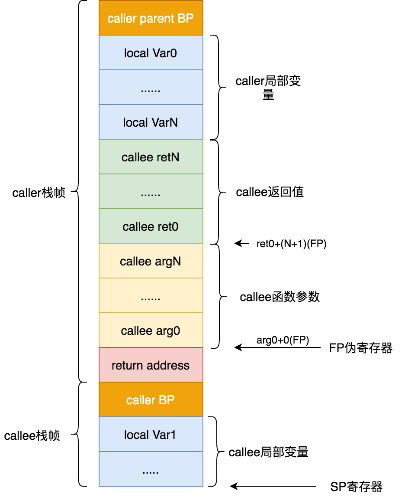
接下來的函數調用棧分析，都是基於函數棧的全景圖出發。知道該全景圖每一部分含義也就瞭解函數調用棧。
實例分析
我們將分析如下代碼。
package main
func sum(a, b int) int {
sum := 0
sum = a + b
return sum
}
func main() {
a := 3
b := 5
print(sum(a, b))
}
參照前面的函數棧全景圖，我們畫出main函數調用sum函數時的函數調用棧圖：
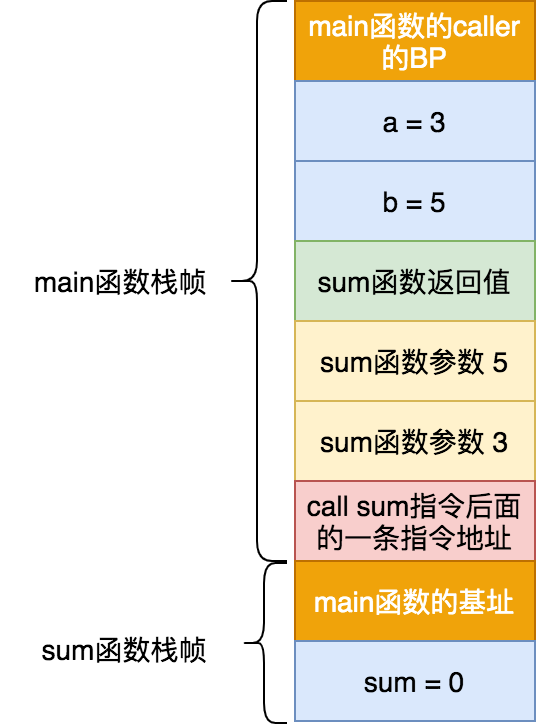
從棧底往棧頂，我們依次可以看到：
- main函數的caller的基址（Base Pointer)。這部分是黃色區域。
- main函數局部變量a,b。我們看到a,b變量按照他們出現的順序依次入棧，在實際指令中可能出現指令重排，a,b變量入棧順序可能相反，但這個不影響最終結果。這部分是藍色區域。
- 接下來是綠色區域，這部分是用來存放sum函數返回值的。這部分空間是提前分配好了。由於sum函數返回值只有一個，且是int類型，那麼綠色區域大小是8字節（64位系統下int佔用8字節）。在sum函數內部是通過FP寄存器訪問這個棧空間的。
- 在下來就是淺黃色區域，這個是存放sum函數實參的。從上面介紹中我們知道Go語言中函數參數是從右到左入棧的，sum函數的簽名是
func sum(a, b int) int，那麼b=5會先入棧，a=3接着入棧。 - 接下來是粉紅色區域，這部分存放的是return address。main函數調用sum函數時候，會將sum函數後面的一條指令入棧。從main函數caller的基址空間到此處都屬於main的函數棧幀。
- 接下來就是sum函數棧幀空間部分。首先同main函數棧幀空間一樣，其存放的sum函數caller的基址，由於sum函數的caller就是main函數，所以這個地方存放就是main棧幀的棧底地址。 ....
從彙編的角度觀察
接下來我們從Go 彙編角度查看main函數調用sum函數時的函數調用棧。
Go語言中函數的棧幀空間是提前分配好的，分配的空間用來存放函數局部變量，被調用函數參數，被調用函數返回值，返回地址等信息。我們來看下main函數和sum函數的彙編定義：
TEXT "".main(SB), ABIInternal, $56-0 // main函數定義
TEXT "".sum(SB), NOSPLIT|ABIInternal, $16-24 // sum函數定義
從上面函數定義可以看出來給main函數分配的棧幀空間大小是56字節大小（這裏面的56字節大小，是不包括返回地址空間的，實際上main函數的棧幀大小是56+8(返回地址佔用8字節空間大小) = 64字節大小），由於main函數沒有參數和返回值，所以參數和返回值這部分大小是0。給sum函數分配的棧幀空間大小是16字節大小，sum函數參數有2個，且都是int類型，返回值是int類型，所以參數和返回值大小是24字節。
關於函數聲明時每個字段的含義可以去《準備篇-Go彙編-函數聲明 》 查看：
需要注意的有兩點：
- 函數分配的棧空間足以放下所有被調用者信息，如果一個函數會調用很多其他函數，那麼它的棧空間是按照其調用函數中最大空間要求來分配的。
- 函數棧空間是可以split。當棧空間不足時候，會進行split，重新找一塊2倍當前棧空間的內存空間，將當前棧幀信息拷貝過去，這個叫棧分裂。Go語言在棧分裂基礎上實現了搶佔式調度，這個我們會在後續篇章詳細探討。我們可以使用
//go:nosplit這個編譯指示，強制函數不進行棧分裂。從sum函數定義可以看出來，其沒有進行棧分裂處理。
接下來我們分析main函數的彙編代碼：
0x0000 00000 (main.go:9) TEXT "".main(SB), ABIInternal, $56-0 # main函數定義
0x0000 00000 (main.go:9) MOVQ (TLS), CX # 將本地線程存儲信息保存到CX寄存器中
0x0009 00009 (main.go:9) CMPQ SP, 16(CX) # 比較當前棧頂地址(SP寄存器存放的)與本地線程存儲的棧頂地址
0x000d 00013 (main.go:9) PCDATA $0, $-2 # PCDATA，FUNCDATA用於Go彙編額外信息，不必關注
0x000d 00013 (main.go:9) JLS 114 # 如果當前棧頂地址(SP寄存器存放的)小於本地線程存儲的棧頂地址，則跳到114處代碼處進行棧分裂擴容操作
0x000f 00015 (main.go:9) PCDATA $0, $-1
0x000f 00015 (main.go:9) SUBQ $56, SP # 提前分配好56字節空間，作爲main函數的棧幀，注意此時的SP寄存器指向，會往下移動了56個字節
0x0013 00019 (main.go:9) MOVQ BP, 48(SP) # BP寄存器存放的是main函數caller的基址，movq這條指令是將main函數caller的基址入棧。對應就是上圖中我們看到的main函數棧幀的黃色區域。
0x0018 00024 (main.go:9) LEAQ 48(SP), BP # 將main函數的基址存放到到BP寄存器
0x001d 00029 (main.go:9) PCDATA $0, $-2
0x001d 00029 (main.go:9) PCDATA $1, $-2
0x001d 00029 (main.go:9) FUNCDATA $0, gclocals·33cdeccccebe80329f1fdbee7f5874cb(SB)
0x001d 00029 (main.go:9) FUNCDATA $1, gclocals·33cdeccccebe80329f1fdbee7f5874cb(SB)
0x001d 00029 (main.go:9) FUNCDATA $2, gclocals·33cdeccccebe80329f1fdbee7f5874cb(SB)
0x001d 00029 (main.go:10) PCDATA $0, $0
0x001d 00029 (main.go:10) PCDATA $1, $0
0x001d 00029 (main.go:10) MOVQ $3, "".a+32(SP) # main函數局部變量a入棧
0x0026 00038 (main.go:11) MOVQ $5, "".b+24(SP) # main函數局部變量b入棧
0x002f 00047 (main.go:12) MOVQ "".a+32(SP), AX # 將局部變量a保存到AX寄存中
0x0034 00052 (main.go:12) MOVQ AX, (SP) # sum函數第二個參數
0x0038 00056 (main.go:12) MOVQ $5, 8(SP) # sum函數第一個參數
0x0041 00065 (main.go:12) CALL "".sum(SB) # 通過call指令調用sum函數。此時會隱式進行兩個操作：1. 將當前指令的下一條指令的地址入棧。當前指令下一條指令就是MOVQ 16(SP), AX，其相對地址是0x0046。2. IP指令寄存器指向了sum函數指令入庫地址。
0x0046 00070 (main.go:12) MOVQ 16(SP), AX #將sum函數值保存AX寄存中。16(SP) 存放的是sum函數的返回值
0x004b 00075 (main.go:12) MOVQ AX, ""..autotmp_2+40(SP)
0x0050 00080 (main.go:12) CALL runtime.printlock(SB)
0x0055 00085 (main.go:12) MOVQ ""..autotmp_2+40(SP), AX
0x005a 00090 (main.go:12) MOVQ AX, (SP)
0x005e 00094 (main.go:12) CALL runtime.printint(SB)
0x0063 00099 (main.go:12) CALL runtime.printunlock(SB)
0x0068 00104 (main.go:13) MOVQ 48(SP), BP
0x006d 00109 (main.go:13) ADDQ $56, SP
0x0071 00113 (main.go:13) RET
0x0072 00114 (main.go:13) NOP
0x0072 00114 (main.go:9) PCDATA $1, $-1
0x0072 00114 (main.go:9) PCDATA $0, $-2
0x0072 00114 (main.go:9) CALL runtime.morestack_noctxt(SB) # 調用棧分裂處理函數
0x0077 00119 (main.go:9) PCDATA $0, $-1
0x0077 00119 (main.go:9) JMP 0
結合彙編，我們最終畫出 main 函數調用棧圖：
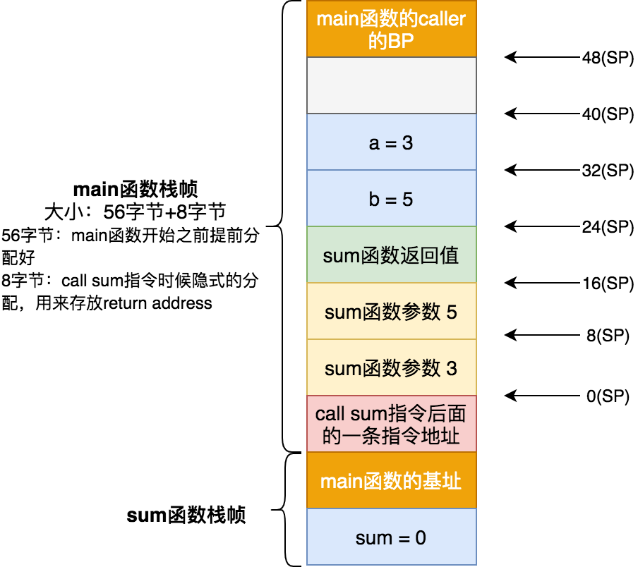
值傳遞
函數傳參有三種方式，分別是值傳遞（pass by value)、引用傳遞（pass by reference)，以及指針傳遞（pass by pointer)。指針傳遞也稱爲地址傳遞，本質上也屬於值傳遞，它只不過傳遞的值是地址而已。所以按照廣義的函數傳遞來分，分爲值傳遞和引用傳遞。Go語言中函數傳參值傳遞，不支持引用傳遞。但是由於切片，通道，映射等具有引用傳遞的某些特性，往往令人疑惑其應該是引用傳遞。這個章節我們就來探究下Go語言中函數傳遞的問題。
在探究Go語言中函數傳遞的問題，我們先研究C++語言下的引用傳遞和指針傳遞是怎麼回事。
C++中指針傳遞
#include <stdio.h>
void swap(int* a,int *b){
printf("交換中：變量a值：%d， 地址：%p； 變量b值：%d，地址：%p\n", *a, &a, *b, &b);
int temp = *a;
*a = *b;
*b = temp;
}
int main() {
int a = 1;
int b = 2;
printf("交換前：變量a值：%d， 地址：%p； 變量b值：%d，地址：%p\n", a, &a, b, &b);
swap(&a,&b);
printf("交換後：變量a值：%d， 地址：%p； 變量b值：%d，地址：%p\n", a, &a, b, &b);
return 0;
}
C++中引用傳遞
#include <stdio.h>
void swap(int &a, int &b){
printf("交換中：變量a值：%d， 地址：%p； 變量b值：%d，地址：%p\n", a, &a, b, &b);
int temp = a;
a = b;
b = temp;
}
int main() {
int a = 1;
int b = 2;
printf("交換前：變量a值：%d， 地址：%p； 變量b值：%d，地址：%p\n", a, &a, b, &b);
swap(a,b);
printf("交換後：變量a值：%d， 地址：%p； 變量b值：%d，地址：%p\n", a, &a, b, &b);
return 0;
}
進一步閱讀
閉包
C語言中函數名稱就是函數的首地址。Go語言中函數名稱跟C語言一樣，函數名指向函數的首地址，即函數的入口地址。從前面《基礎篇-函數-一等公民》那一章節我們知道Go 語言中函數是一等公民，它可以綁定變量，作函數參數，做函數返回值，那麼它底層是怎麼實現的呢？
我們先來瞭解下 Function Value 這個概念。
Function Value
Go 語言中函數是一等公民，函數可以綁定到變量，也可以做參數傳遞以及做函數返回值。Golang把這樣的參數、返回值、變量稱爲Function value。
Go 語言中Function value本質上是一個指針，但是其並不直接指向函數的入口地址，而是指向的runtime.funcval(runtime/runtime2.go)這個結構體。該結構體中的fn字段存儲的是函數的入口地址：
type funcval struct {
fn uintptr
// variable-size, fn-specific data here
}
我們以下面這段代碼爲例來看下Function value是如何使用的:
func A(i int) {
i++
fmt.Println(i)
}
func B() {
f1 := A
f1(1)
}
func C() {
f2 := A
f2(2)
}
上面代碼中，函數A被賦值給變量f1和f2，這種情況下編譯器會做出優化，讓f1和f2共用一個funcval結構體，該結構體是在編譯階段分配到數據段的只讀區域(.rodata)。如下圖所示那樣，f1和f2都指向了該結構體的地址addr2，該結構體的fn字段存儲了函數A的入口地址addr1：

爲什麼f1和f2需要通過了一個二級指針來獲取到真正的函數入口地址，而不是直接將f1，f2指向函數入口地址addr1。關於這個原因就涉及到Golang中閉包設計與實現了。
閉包
閉包(Closure) 通俗點講就是能夠訪問外部函數內部變量的函數。像這樣能被訪問的變量通常被稱爲捕獲變量。
閉包函數指令在編譯階段生成，但因爲每個閉包對象都要保存自己捕獲的變量，所以要等到執行階段才創建對應的閉包對象。我們來看下下面閉包的例子：
package main
func A() func() int {
i := 3
return func() int {
return i
}
}
func main() {
f1 := A()
f2 := A()
print(f1())
pirnt(f2())
}
上面代碼中當執行main函數時，會在其棧幀區間內爲局部變量f1和f2分配棧空間，當執行第一個A函數時候，會在其棧幀空間分配棧空間來存放局部變量i，然後在堆上分配一個funcval結構體（其地址假定addr2)，該結構體的fn字段存儲的是A函數內那個閉包函數的入口地址（其地址假定爲addr1）。A函數除了分配一個funcval結構體外，還會挨着該結構體分配閉包函數的變量捕獲列表，該捕獲列表裏面只有一個變量i。由於捕獲列表的存在，所以說閉包函數是一個有狀態函數。
當A函數執行完畢後，其返回值賦值給f1，此時f1指向的就是地址addr2。同理下來f2指向地址addr3。f1和f2都能通過funcval取到了閉包函數入口地址，但擁有不同的捕獲列表。
當執行f1()時候，Go 語言會將其對應funcval地址存儲到特定寄存器（比如amd64平臺中使用rax寄存器），這樣在閉包函數中就可以通過該寄存器取出funcval地址，然後通過偏移找到每一個捕獲的變量。由此可以看出來Golang中閉包就是有捕獲列表的Function value。
根據上面描述，我們畫出內存佈局圖：

若閉包捕獲的變量會發生改變，編譯器會智能的將該變量逃逸到堆上，這樣外部函數和閉包引用的是同一個變量，此時不再是變量值的拷貝。這也是爲什麼下面代碼總是打印循環的最後面一個值。
package main
func main() {
fns := make([]func(), 0, 5)
for i := 0; i < 5; i++ {
fns = append(fns, func() {
println(i)
})
}
for _, fn := range fns { // 最後輸出5個5，而不是0，1，2，3，4
fn()
}
}
感興趣的可以仿造上圖，畫出上面代碼的內存佈局圖。重點關注閉包函數捕獲的不是值拷貝，而是引用一個堆變量。
方法
Go 語言中具有接收者的函數，即爲方法。若函數的接收者類型是T，那麼我們可以說該函數是類型T的方法。那麼方法底層實現是怎麼樣的，和函數有什麼區別呢？這一章節我們將探討這個。
方法的本質就是普通函數
我們來看下如下的代碼：
type A struct {
name string
}
func (a A) Name() string {
a.name = "Hi " + a.name
return a.name
}
func main() {
a := A{name: "new world"}
println(a.Name())
println(A.Name(a))
}
func NameofA(a A) string {
a.name = "Hi " + a.name
return a.name
}
上面代碼中，a.Name()表示的是調用對象a的Name方法。它實際上是一個語法糖，等效於A.Name(a)，其中a就是方法接收者。我們可以通過以下代碼證明兩者是相等的：
t1 := reflect.TypeOf(A.Name)
t2 := relect.TypeOf(NameOfA)
fmt.Println(t1 == t2) // true
我們在看下a.Name()底層實現是怎麼樣的，點擊在線查看：
LEAQ go.string."new world"(SB), AX
MOVQ AX, "".a+32(SP)
MOVQ $9, "".a+40(SP)
PCDATA $0, $0
MOVQ AX, (SP)
MOVQ $9, 8(SP)
CALL "".A.Name(SB)
a.Name()底層其實調用的就是A.Name函數，只不過傳遞的第一參數就是對象a。
綜上所述，方法本質就是普通的函數，方法的接收者就是隱含的第一個參數。對於其他面向對象的語言來說，類對象就是相應的函數的第一個參數。
值接收者和指針接收者混合的方法
比如以下代碼中，展示的值接收者和指針接收者混合的方法
type A struct {
name string
}
func (a A) GetName() string {
return a.name
}
func (pa *A) SetName() string {
pa.name = "Hi " + p.name
return pa.name
}
func main() {
a := A{name: "new world"}
pa := &a
println(pa.GetName()) // 通過指針調用定義的值接收者方法
println(a.SetName()) // 通過值調用定義的指針接收者方法
}
上面代碼中通過指針調用值接收者方法和通過值調用指針接收者方法，都能夠正常運行。這是因爲兩者都是語法糖，Go 語言會在編譯階段會將兩者轉換如下形式：
println((*pa).GetName())
println((&a).SetName())
方法表達式與方法變量
type A struct {
name string
}
func (a A) GetName() string {
return a.name
}
func main() {
a := A{name: "new world"}
f1 := A.GetName // 方法表達式
f1(a)
f2 := a.GetName // 方法變量
f2()
}
方法表達式(Method Expression) 與方法變量(Method Value)本質上都是 Function Value ，區別在於方法變量會捕獲方法接收者形成閉包，此方法變量的生命週期與方法接收者一樣，編譯器會將其進行優化轉換成對類型T的方法調用，並傳入接收者作爲參數。 根據上面描述我們可以將上面代碼中f2理解成如下代碼：
func GetFunc() (func()) string {
a := A{name: "new world"}
return func() string {
return A.GetName(a)
}
}
f2 = GetFunc()
語言特性
仰之彌高，鑽之彌堅。
逗號ok模式
通過逗號ok模式(comma ok idiom)，我們可以進行類型斷言，判斷映射中是否存在某個key以及通道是否關閉。
類型斷言
// 方式1
var (
v T
ok bool
)
v, ok = x.(T)
// 方式2
v, ok := x.(T) // x是接口類型的變量，T是要斷言的類型
// 方式3
var v, ok = x.(T)
// 方式4
v := x.(T) // 當心此種方式斷言，若斷言失敗會發生恐慌
判斷key是否存在映射中
// 方式1
v, ok := a[x]
// 方式2
var v, ok = a[x]
判斷通道是否關閉
// 方式1
var (
x T
ok bool
)
x, ok = <-ch
// 方式2
x, ok := <-ch
// 方式3
var x, ok = <-ch
遍歷 - for-range語法
for-range語法可以用來遍歷數組、指向數組的指針，切片、字符串、映射和通道。
遍歷數組
當遍歷一個數組a時候，循環範圍會從0到len(a) -1：
func main() {
var a [3]int
for i, v := range a {
fmt.Println(i, v)
}
for i, v := range &a {
fmt.Println(i, v)
}
}
遍歷切片
當遍歷一個切片s時候，循環範圍會從0到len(s) -1，若切片是nil，則迭代次數是0次：
func main() {
a := make([]int, 3)
for i, v := range a {
fmt.Println(i, v)
}
a = nil
for i, v := range a {
fmt.Println(i, v)
}
}
for-range切片時候可以邊遍歷邊append嗎？
當遍歷切片時候，可以邊遍歷邊append操作，這並不會造成死循環。因爲遍歷之前已經確定了循環範圍，遍歷操作相當如下僞代碼：
len_temp := len(range) // 循環上界
range_temp := range
for index_temp = 0; index_temp < len_temp; index_temp++ {
value_temp = range_temp[index_temp]
index = index_temp
value = value_temp
original body
}
for-range切片時候，返回的是值拷貝
無論遍歷數組還是切片，返回都是數組或切片中的值拷貝：
func main() {
users := []User{
{
Name: "a1",
Age: 100,
},
{
Name: "a2",
Age: 101,
},
{
Name: "a2",
Age: 102,
},
}
fmt.Println("before: ", users)
for _, v := range users {
v.Age = v.Age + 10 // 想給users中所有用戶年齡增加10歲
}
fmt.Println("after: ", users)
}
執行上面代碼，輸入以下內容：
before: [{a1 100} {a2 101} {a2 102}]
after: [{a1 100} {a2 101} {a2 102}]
解決辦法可以通過索引訪問原切片或數組：
func main() {
users := []User{
{
Name: "a1",
Age: 100,
},
{
Name: "a2",
Age: 101,
},
{
Name: "a2",
Age: 102,
},
}
fmt.Println("before: ", users)
for i := range users {
users[i].Age = users[i].Age + 10
}
fmt.Println("after: ", users)
}
遍歷字符串
當遍歷字符串時候，返回的是rune類型，rune類型是int32類型的別名，一個rune就是一個碼點(code point)：
// rune is an alias for int32 and is equivalent to int32 in all ways. It is
// used, by convention, to distinguish character values from integer values.
type rune = int32
由於遍歷字符串時候，返回的是碼點，所以索引並不總是依次增加1的：
func main() {
var str = "hello，你好"
var buf [100]byte
for i, v := range str {
vl := utf8.RuneLen(v)
si := i + vl
copy(buf[:], str[i:si])
fmt.Printf("索引%2d: %q，\t 碼點: %#6x，\t 碼點轉換成字節: %#v\n", i, v, v, buf[:vl])
}
}
執行上面代碼將輸出以下內容：
索引 0: 'h'， 碼點: 0x68， 碼點轉換成字節: []byte{0x68}
索引 1: 'e'， 碼點: 0x65， 碼點轉換成字節: []byte{0x65}
索引 2: 'l'， 碼點: 0x6c， 碼點轉換成字節: []byte{0x6c}
索引 3: 'l'， 碼點: 0x6c， 碼點轉換成字節: []byte{0x6c}
索引 4: 'o'， 碼點: 0x6f， 碼點轉換成字節: []byte{0x6f}
索引 5: '，'， 碼點: 0xff0c， 碼點轉換成字節: []byte{0xef, 0xbc, 0x8c}
索引 8: '你'， 碼點: 0x4f60， 碼點轉換成字節: []byte{0xe4, 0xbd, 0xa0}
索引11: '好'， 碼點: 0x597d， 碼點轉換成字節: []byte{0xe5, 0xa5, 0xbd}
遍歷映射
當遍歷映射時候，Go語言是不會保證遍歷順序的，爲了明確強調這一點，Go語言在實現的時候，故意隨機地選擇一個桶開始遍歷。當映射通道爲nil時候，遍歷次數爲0次。
func main() {
m := map[int]int{
1: 10,
2: 20,
3: 30,
}
for i, v := range m {
fmt.Println(i, v)
}
m = nil
for i, v := range m {
fmt.Println(i, v)
}
}
for-range映射時候可以邊遍歷，邊新增或刪除嗎？
若在一個Goroutine裏面邊遍歷邊新增、刪除，理論上是可以的，不會觸發寫檢測的，新增的key-value可能會被訪問到，也可能不會。
若多個Goroutine中進行遍歷、新增、刪除操作的話，是不可以的，是可能觸發寫檢測的，然後直接panic。
遍歷通道
當遍歷通道時，直到通道關閉纔會終止，若通道是nil，則會永遠阻塞。遍歷通道源碼分析請見《運行時篇-通道-從channel中讀取數據 》。
進一步閱讀
延遲執行 - defer語法
defer 語法支持是Go 語言中一大特性，通過 defer 關鍵字，我們可以聲明一個延遲執行函數，當調用者返回之前開始執行該函數，一般用來完成資源、鎖、連接等釋放工作，或者 recover 可能發生的panic。
三大特性
defer延遲執行語法有三大特性：
defer函數的傳入參數在定義時就已經明確
func main() {
i := 1
defer fmt.Println(i)
i++
return
}
上面代碼輸出1，而不是2。
defer函數是按照後進先出的順序執行
func main() {
for i := 1; i <= 5; i++ {
defer fmt.Print(i)
}
}
上面代碼輸出54321，而不是12345。
defer函數可以讀取和修改函數的命名返回值
func main() {
fmt.Println(test())
}
func test() (i int) {
defer func() {
i++
}()
return 100
}
上面代碼輸出輸出101，而不是100或者1。
白話defer原理
defer函數底層數據結構是_defer結構體，多個defer函數會構建成一個_defer鏈表，後面加入的defer函數會插入鏈表的頭部，該鏈表鏈表頭部會鏈接到G上。當函數執行完成返回的時候，會從_defer鏈表頭部開始依次執行defer函數。這也就是defer函數執行時會LIFO的原因。_defer鏈接結構示意圖如下：
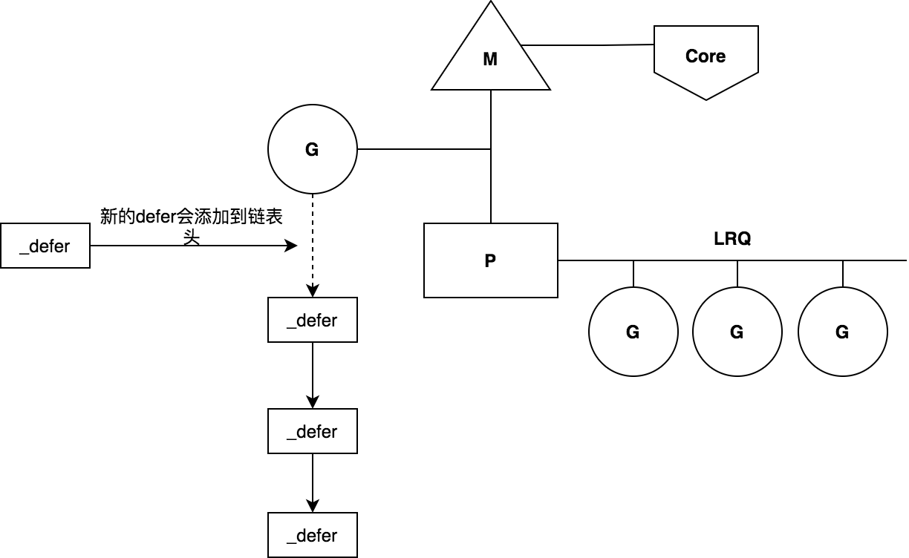
創建_defer結構體是需要進行內存分配的，爲了減少分配_defer結構體時資源消耗，Go底層使用了defer緩衝池（defer pool），用來緩存上次使用完的_defer結構體，這樣下次可以直接使用，不必再重新分配內存了。defer緩衝池一共有兩級：per-P級defer緩衝池和全局defer緩衝池。當創建_defer結構體時候，優先從當前M關聯的P的緩衝池中取得_defer結構體，即從per-P緩衝池中獲取，這個過程是無鎖操作。如果per-P緩衝池中沒有，則在嘗試從全局defer緩衝池獲取，若也沒有獲取到，則重新分配一個新的_defer結構體。
當defer函數執行完成之後，Go底層會將分配的_defer結構體進行回收，先存放在per-P級defer緩衝池中，若已存滿，則存放在全局defer緩衝池中。
源碼分析
我們以下代碼作爲示例，分析defer實現機制：
package main
func main() {
defer greet("friend")
println("welcome")
}
func greet(text string) {
print("hello " + text)
}
在分析之前，我們先來看下defer結構體：
type _defer struct {
siz int32 // 參數和返回值共佔用空間大小，這段空間會在_defer結構體後面，用於defer註冊時候保存參數，並在執行時候拷貝到調用者參數與返回值空間。
started bool // 標記defer是否已經執行
heap bool // 標記該_defer結構體是否分配在堆上
openDefer bool // 標誌是否使用open coded defer方式處理defer
sp uintptr // 調用者棧指針，執行時會根據sp判斷該defer是否是當前執行調用者註冊的
pc uintptr // deferprocStack或deferproc的返回地址
fn *funcval // defer函數，是funcval類型
_panic *_panic // panic鏈表，用於panic處理
link *_defer // 鏈接到下一個_defer結構體，即該在_defer之前註冊的_defer結構體
fd unsafe.Pointer // funcdata for the function associated with the frame
varp uintptr // value of varp for the stack frame
framepc uintptr
}
_defer結構體中siz字段記錄着defer函數參數和返回值大小，如果defer函數擁有參數，則Go會把其參數拷貝到該defer函數對應的_defer結構體後面的內存塊中。
_defer結構體中fn字段是指向一個funcval類型的指針，funcval結構體的fn字段字段指向defer函數的入口地址。對應上面示例代碼中就是greet函數的入口地址
上面示例代碼中編譯後的Go彙編代碼如下，點擊在線查看彙編代碼：
main_pc0:
TEXT "".main(SB), ABIInternal, $40-0
MOVQ (TLS), CX
CMPQ SP, 16(CX)
JLS main_pc151
SUBQ $40, SP
MOVQ BP, 32(SP)
LEAQ 32(SP), BP
FUNCDATA $0, gclocals·33cdeccccebe80329f1fdbee7f5874cb(SB)
FUNCDATA $1, gclocals·33cdeccccebe80329f1fdbee7f5874cb(SB)
FUNCDATA $3, gclocals·9fb7f0986f647f17cb53dda1484e0f7a(SB)
PCDATA $2, $0
PCDATA $0, $0
MOVL $16, (SP)
PCDATA $2, $1
LEAQ "".greet·f(SB), AX
PCDATA $2, $0
MOVQ AX, 8(SP)
PCDATA $2, $1
LEAQ go.string."friend"(SB), AX
PCDATA $2, $0
MOVQ AX, 16(SP)
MOVQ $6, 24(SP)
CALL runtime.deferproc(SB)
TESTL AX, AX
JNE main_pc135
JMP main_pc84
main_pc84:
CALL runtime.printlock(SB)
PCDATA $2, $1
LEAQ go.string."welcome\n"(SB), AX
PCDATA $2, $0
MOVQ AX, (SP)
MOVQ $8, 8(SP)
CALL runtime.printstring(SB)
CALL runtime.printunlock(SB)
XCHGL AX, AX
CALL runtime.deferreturn(SB)
MOVQ 32(SP), BP
ADDQ $40, SP
RET
main_pc135:
XCHGL AX, AX
CALL runtime.deferreturn(SB)
MOVQ 32(SP), BP
ADDQ $40, SP
RET
需要注意的是上面彙編代碼是go1.12版本的彙編代碼。
從上面彙編代碼我們可以發現defer實現有兩個階段，第一個階段使用runtime.deferproc函數進行defer註冊階段。這一階段主要工作是創建defer結構，然後將其註冊到defer鏈表中。在註冊完成之後，會根據runtime.deferproc函數返回結果進行下一步處理，若是1則說明，defer函數有panic處理，則直接跳過defer後面的代碼，直接去執行runtime.deferreturn（對應就是上面彙編代碼JNE main_pc135邏輯），若是0則是正常流程，則繼續後面的代碼（對應上面彙編代碼就是 JMP main_pc84）。
第二個階段是調用runtime.deferreturn函數執行defer執行階段。這個階段遍歷defer鏈表，獲取defer結構，然後執行defer結構中存放的defer函數信息。
defer註冊階段
defer註冊階段是調用deferproc函數將創建defer結構體，並將其註冊到defer鏈表中。
func deferproc(siz int32, fn *funcval) {
if getg().m.curg != getg() { // 判斷當前G是否處在用戶棧空間上，若不是則拋出異常
throw("defer on system stack")
}
sp := getcallersp()
argp := uintptr(unsafe.Pointer(&fn)) + unsafe.Sizeof(fn) // 獲取defer函數參數起始地址
callerpc := getcallerpc()
d := newdefer(siz)
if d._panic != nil {
throw("deferproc: d.panic != nil after newdefer")
}
d.fn = fn
d.pc = callerpc
d.sp = sp
switch siz {
case 0:
// Do nothing.
case sys.PtrSize: // defer函數等於8字節大小（64位系統下），則直接將_defer結構體後面8字節空間
*(*uintptr)(deferArgs(d)) = *(*uintptr)(unsafe.Pointer(argp))
default:
memmove(deferArgs(d), unsafe.Pointer(argp), uintptr(siz))
}
return0()
}
上面代碼中getcallersp()返回調用者SP地址。deferproc的調用者是main函數，getcallersp()返回的SP地址指向的deferproc的return address。
getcallerpc()返回調用者PC，此時PC指向的CALL runtime.deferproc(SB)指令的下一條指令，即TESTL AX, AX。
結合彙編和deferproc代碼，我們畫出defer註冊時狀態圖：
接下來，我們來看下newdefer函數是如何分配defer結構體的。
func newdefer(siz int32) *_defer {
var d *_defer
sc := deferclass(uintptr(siz)) // 根據defer函數參數大小，計算出應該使用上面規格的defer緩衝池
gp := getg()
if sc < uintptr(len(p{}.deferpool)) { // defer緩衝池只支持5種緩衝池，從0到4，若sc規格不小於5(說明defer參數大小大於64字節)，
// 則無法使用緩衝池，則需從內存中分配
pp := gp.m.p.ptr() // pp指向當前M關聯的P
if len(pp.deferpool[sc]) == 0 && sched.deferpool[sc] != nil { // 若當前P的defer緩衝池爲空，且全局緩衝池有可用的defer，那麼先從全局緩衝拿一點過來存放在P的緩衝池中
systemstack(func() {
lock(&sched.deferlock)
for len(pp.deferpool[sc]) < cap(pp.deferpool[sc])/2 && sched.deferpool[sc] != nil {
d := sched.deferpool[sc]
sched.deferpool[sc] = d.link
d.link = nil
pp.deferpool[sc] = append(pp.deferpool[sc], d)
}
unlock(&sched.deferlock)
})
}
if n := len(pp.deferpool[sc]); n > 0 {
d = pp.deferpool[sc][n-1]
pp.deferpool[sc][n-1] = nil
pp.deferpool[sc] = pp.deferpool[sc][:n-1]
}
}
if d == nil { // 若果需要的defer緩衝池不滿足所需的規格，或者緩衝池中沒有可用的時候，切換到系統棧上，進行defer結構內存分配。
systemstack(func() {
total := roundupsize(totaldefersize(uintptr(siz)))
d = (*_defer)(mallocgc(total, deferType, true))
})
}
d.siz = siz
d.heap = true // 標記分配到堆上
d.link = gp._defer // 插入到鏈表頭部
gp._defer = d
return d
}
總結下newdefer函數邏輯：
- 首先根據defer函數的參數大小，使用
deferclass計算出相應所需要的defer規格，如果defer緩衝池支持該規格，則嘗試從defer緩衝池取出對應的defer結構體。 - 從defer緩衝池中取可用defer結構體時候，會首先從per-P defer緩衝池中取，若per-P defer緩衝池爲空，則嘗試從全局緩衝池中取一些可用defer結構體，然後放在per-P緩衝池，然後再從per-P緩衝池中取。
- 若defer緩衝池不支持該規格，或者緩衝池無可用緩衝，則切換到系統棧上進行defer結構分配。
defer緩衝池規格
defer緩衝池，是按照defer函數參數大小範圍分爲五種規格，若不在五種規格之類，則不提供緩衝池功能，那麼每次defer註冊時候時候都必須進行內存分配創建defer結構體：
| 緩衝池規格 | defer函數參數大小範圍 | 對應per-P緩衝池位置 | 對應全局緩衝池位置 |
|---|---|---|---|
| class0 | 0 | p.deferpool[0] | sched.deferpool[0] |
| class1 | [1, 16] | p.deferpool[1] | sched.deferpool[1] |
| class2 | [17, 32] | p.deferpool[2] | sched.deferpool[2] |
| class3 | [33, 48] | p.deferpool[3] | sched.deferpool[3] |
| class4 | [49, 64] | p.deferpool[4] | sched.deferpool[4] |
defer函數參數大小與緩衝池規格轉換是通過deferclass函數轉換的：
func deferclass(siz uintptr) uintptr {
if siz <= minDeferArgs { // minDeferArgs是個常量，值是0
return 0
}
return (siz - minDeferArgs + 15) / 16
}
per-P級defer緩衝池與全局級defer緩衝池結構
per-P級defer緩衝池結構使用兩個字段deferpool和deferpoolbuf構成緩衝池：
type p struct {
...
deferpool [5][]*_defer // pool of available defer structs of different sizes (see panic.go)
deferpoolbuf [5][32]*_defer
...
}
p結構體中deferpool數組的元素是_defer指針類型的切片，該切片的底層數組是deferpoolbuf數組的元素：
func (pp *p) init(id int32) {
...
for i := range pp.deferpool {
pp.deferpool[i] = pp.deferpoolbuf[i][:0]
}
...
}
全局級defer緩衝池保存在全局sched的deferpool字段中，sched是schedt類型變量，deferpool是由5個_defer類型指針構成鏈表組成的數組：
type schedt struct {
...
deferlock mutex // 由於存在多個P併發的從全局緩衝池中獲取defer結構體，所以需要一個鎖
deferpool [5]*_defer
...
}
defer執行階段
當函數返回之前，Go會調用deferreturn函數，開始執行defer函數。總之defer流程可以簡單概括爲：Go語言通過先註冊（通過調用deferproc函數），然後函數返回之前執行defer函數（通過調用deferreturn函數），實現了defer延遲執行功能。
func deferreturn(arg0 uintptr) {
gp := getg()
d := gp._defer
if d == nil { // defer鏈表爲空，直接返回。deferreturn是一個遞歸調用，每次調用都會從defer鏈表彈出一個defer進行執行，當defer鏈表爲空時候，說明所有defer都已經執行完成
return
}
sp := getcallersp()
if d.sp != sp { // defer保存的sp與當前調用deferreturn的調用者棧頂sp不一致，則直接返回
return
}
switch d.siz {
case 0:
case sys.PtrSize: // 若defer參數大小是8字節，則直接將defer參數複製給arg0
*(*uintptr)(unsafe.Pointer(&arg0)) = *(*uintptr)(deferArgs(d))
default: // 否則進行內存移動，將defer的參數複製到arg0中，此後arg0存放的是延遲函數的參數
memmove(unsafe.Pointer(&arg0), deferArgs(d), uintptr(d.siz))
}
fn := d.fn
d.fn = nil
gp._defer = d.link
freedefer(d)
jmpdefer(fn, uintptr(unsafe.Pointer(&arg0)))
}
deferreturn函數通過jmpdefer實現遞歸調用，jmpdefer是通過彙編實現的，jmpdefer函數完成兩個功能：調用defer函數和deferreturn再次調用。deferreturn遞歸調用時候，遞歸終止條件有兩個：1. defer鏈表爲空。2. defer保存的sp與當前調用deferreturn調用者棧頂sp不一致。第一個條件很好了解，第二個循環終止條件存在原因，我們稍後探究。
我們需要理解arg0這個變量用途。arg0看似是deferreturn的參數，實際上是用來存儲延遲函數的參數。
在調用jmpdefer之前，會先調用freedefer將當前defer結構釋放回收：
func freedefer(d *_defer) {
if d._panic != nil { // freedefer調用時_panic一定是nil
freedeferpanic() // freedeferpanic作用是拋出異常：freedefer with d._panic != nil
}
if d.fn != nil { // freedefer調用時fn一定已經置爲nil
freedeferfn() // freedeferfn作用是拋出異常：freedefer with d.fn != nil
}
if !d.heap { // defer結構不是在堆上分配，則無需進行回收
return
}
sc := deferclass(uintptr(d.siz)) // 根據defer參數和返回值大小，判斷規格，以便決定放在哪種規格defer緩衝池中
if sc >= uintptr(len(p{}.deferpool)) {
return
}
pp := getg().m.p.ptr()
if len(pp.deferpool[sc]) == cap(pp.deferpool[sc]) { // 當前P的defer緩衝池已滿，則將P的defer緩衝池defer取出一般放在全局defer緩衝池中
systemstack(func() {
var first, last *_defer
for len(pp.deferpool[sc]) > cap(pp.deferpool[sc])/2 {
n := len(pp.deferpool[sc])
d := pp.deferpool[sc][n-1]
pp.deferpool[sc][n-1] = nil
pp.deferpool[sc] = pp.deferpool[sc][:n-1]
if first == nil {
first = d
} else {
last.link = d
}
last = d
}
lock(&sched.deferlock)
last.link = sched.deferpool[sc]
sched.deferpool[sc] = first
unlock(&sched.deferlock)
})
}
// 重置defer參數
d.siz = 0
d.started = false
d.sp = 0
d.pc = 0
d.link = nil
pp.deferpool[sc] = append(pp.deferpool[sc], d) // 將當前defer放入P的defer緩衝池中
}
我們來看下jmpdefer實現：
TEXT runtime·jmpdefer(SB), NOSPLIT, $0-16
MOVQ fv+0(FP), DX # DX寄存器存儲jmpdefer第一個參數fn，fn是funcval類型指針
MOVQ argp+8(FP), BX # BX寄存器存儲jmpdefer第二個參數，該參數是個指針類型，指向arg0
LEAQ -8(BX), SP # 將BX存放的arg0的地址減少8，獲取得到調用deferreturn時棧頂地址（此時棧頂存放的是deferreturn的return address），最後將該地址存放在SP寄存器中
MOVQ -8(SP), BP # 重置BP寄存器
SUBQ $5, (SP) # 此時SP寄存器指向的是deferreturn的return address。該指令是將調用deferreturn的return address減少5，
# 而減少5之後，return adderss恰好指向了`CALL runtime.deferreturn(SB)`，這就實現了deferreturn遞歸調用
MOVQ 0(DX), BX # DX存儲的是fn，其是funcval類型指針，所以獲取真正函數入口地址需要0(DX)，該指令等效於BX = Mem[R[DX] + 0]。
# 寄存器邏輯操作不瞭解的話，可以參看前面Go彙編章節
JMP BX # 通過JMP指令調用延遲函數
從上面代碼可以看出來，jmpdefer通過彙編更改了延遲函數調用的return address，使return address指向deferreturn入口地址，這樣當延遲函數執行完成之後，會繼續調用deferreturn函數，從而實現了deferreturn遞歸調用。deferreturn和jmpdefer最後實現的邏輯的僞代碼如下：
function deferreturn() {
var arg int
for _, d := range deferLinkList {
arg = d.arg
d.fn(arg)
deferreturn()
}
}
畫出deferreturn調用內存和棧的狀態圖，幫助理解：
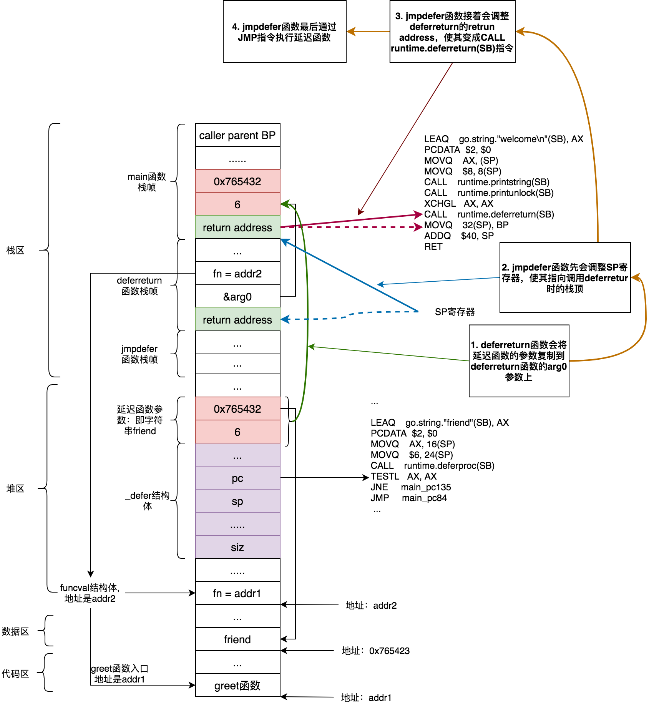
最後我們來探究一下deferreturn第二個終止條件，考慮下面的場景：
func A() {
defer B()
defer C()
}
func C() {
defer D()
}
將上面代碼轉換成成底層實現的僞代碼如下：
func A() {
deferproc(B) // 註冊延遲函數B
deferproc(C) // 註冊延遲函數C
deferreturn() // 開始執行延遲函數
}
func C() {
deferproc(D) // 註冊延遲函數C
deferreturn() // 開始執行延遲函數
}
當調用A函數的deferreturn函數時，會從defer鏈表中取出延遲函數C進行執行，當執行C函數時，其內部也有一個defer函數，C函數最後也會調用deferreturn函數，當C函數中調用deferreturn函數時，defer鏈表結構如下：
sp指向C的棧頂 sp指向A的棧頂
| |
| |
v v
g._defer ---------> D --------> B
當C中的deferreturn執行完defer鏈表中延遲函數D之後，開始執行B的時候，由於B的sp指向的是A的棧頂，不等於C的棧頂，此時滿足終止條件2，C中的deferreturn會退出執行，此時A的deferreturn開始繼續執行（A的deferreturn調用其C的deferreturn函數，相當於一個大循環裏面套一個小循環，現在是小循環退出了，大循環還是會繼續的），此時由於B的sp指向就是A的棧頂，B函數會執行。
deferreturn循環終止第二個條件就是爲了解決諸於此類的場景。
優化歷程
上面我們分析的代碼中defer結構是分配到堆上，其實爲了優化defer語法性能，Go在實現過程可能會將defer結構分配在棧上。我們來看看Go各個版本對defer都做了哪些優化？
package main
func main() {
defer greet()
}
func greet() {
print("hello")
}
我們以上面代碼爲例，看看其在go1.12、go1.13、go1.14這幾個版本下的核心彙編代碼：
leaq "".greet·f(SB), AX
pcdata $2, $0
movq AX, 8(SP)
call runtime.deferproc(SB)
testl AX, AX
jne main_pc73
.loc 1 5 0
xchgl AX, AX
call runtime.deferreturn(SB)
go1.12版本中通過調用 runtime.deferproc 函數，將defer函數包裝成 _defer 結構並註冊到defer鏈表中，該 _defer 結構體是分配在堆內存中，需要進行垃圾回收的。
leaq "".greet·f(SB), AX
pcdata $0, $0
movq AX, ""..autotmp_0+32(SP)
pcdata $0, $1
leaq ""..autotmp_0+8(SP), AX
pcdata $0, $0
movq AX, (SP)
call runtime.deferprocStack(SB)
testl AX, AX
jne main_pc83
.loc 1 5 0
xchgl AX, AX
call runtime.deferreturn(SB)
go1.13版本中通過調用 runtime.deferprocStack 函數，將defer函數包裝成 _defer 結構並註冊到defer鏈表中，該 _defer 結構體是分配在棧上，不需要進行垃圾回收處理，這個地方就是go1.13相比go1.12所做的優化點。
leaq "".greet·f(SB), AX
pcdata $0, $0
pcdata $1, $1
movq AX, ""..autotmp_1+8(SP)
.loc 1 5 0
movb $0, ""..autotmp_0+7(SP)
call "".greet(SB)
movq 16(SP), BP
addq $24, SP
ret
call runtime.deferreturn(SB)
go1.14版本不再調用deferproc/deferprocStack 函數來處理，而是在 return 返回之前直接調用該 defer函數（即inline方式），性能相比go1.13又得到進一步提升，go官方把這種處理方式稱爲open-coded defer。實際上go1.14中禁止優化和內聯之後，defer函數其底層實現方式就和go1.13一樣了。
需要注意的是 open-coded defer 使用是有限制的，它不能用於for循環中的defer函數，還有就是defer的數量也是有限制的，最多支持8個defer函數，對於for循環或者數量過的defer，將使用deferproc/deferprocStack方式實現。關於 open-coded defer 設計細節可以參見官方設計文檔：Proposal: Low-cost defers through inline code, and extra funcdata to manage the panic case
此外 open-coded defer 雖大大提高了 defer 函數執行的性能，但 panic 的 recover 的執行性能會大大變慢，這是因爲 panic 處理過程中會掃描 open-coded defer 的棧幀。具體參見open-coded defer的代碼提交記錄。open-coded defer帶來的好處的是明顯，畢竟panic是比較少發生的。
go1.14也增加了 -d defer 編譯選項，可以查看defer實現時候使用哪一種方式:
go build -gcflags="-d defer" main.go
總結一下defer優化歷程：
| 版本 | 優化內容 |
|---|---|
| Go1.12及以前 | defer分配到堆上，是heap-allocated defer |
| Go1.13 | 支持在棧上分配defer結構，減少堆上分配和GC的開銷，是stack-allocated defer |
| G01.14 | 支持開放式編碼defer，不再使用defer結構，直接在函數尾部調用延遲函數，是open-coded defer |
進一步閱讀
通道選擇器-select
Go 語言中select關鍵字結構跟switch結構類似，但是select結構的case語句都是跟通道操作相關的。Go 語言會從select結構中已經可讀取或可以寫入通道對應的case語句中隨機選擇一個執行，如果所有case語句中的通道都不能可讀取或可寫入且存在default語句的話，那麼會執行default語句。
根據Go 官方語法指南指出select語句執行分爲以下幾個步驟：
-
For all the cases in the statement, the channel operands of receive operations and the channel and right-hand-side expressions of send statements are evaluated exactly once, in source order, upon entering the "select" statement. The result is a set of channels to receive from or send to, and the corresponding values to send. Any side effects in that evaluation will occur irrespective of which (if any) communication operation is selected to proceed. Expressions on the left-hand side of a RecvStmt with a short variable declaration or assignment are not yet evaluated.
對於case分支語句中寫入通道的右側表達式都會先執行，執行順序是按照代碼中case分支順序，由上到下執行。case分支語句中讀取通道的左右表達式不會先執行的。
-
If one or more of the communications can proceed, a single one that can proceed is chosen via a uniform pseudo-random selection. Otherwise, if there is a default case, that case is chosen. If there is no default case, the "select" statement blocks until at least one of the communications can proceed.
如果有一個或者多個case分支的通道可以通信（讀取或寫入），那麼會隨機選擇一個case分支執行。否則如果存在default分支，那麼執行default分支，若沒有default分支，那麼select語句會阻塞，直到某一個case分支的通道可以通信。
-
Unless the selected case is the default case, the respective communication operation is executed.
除非選擇的case分支是default分支，否則將執行相應case分支的通道讀寫操作。
-
If the selected case is a RecvStmt with a short variable declaration or an assignment, the left-hand side expressions are evaluated and the received value (or values) are assigned.
-
The statement list of the selected case is executed.
執行所選case中的語句。
上面介紹的執行順序第一步驟，我們可以從下面代碼輸出結果可以看出來：
func main() {
ch := make(chan int, 1)
select {
case ch <- getVal(1):
println("recv: ", <-ch)
case ch <- getVal(2):
println("recv: ", <-ch)
}
}
func getVal(n int) int {
println("getVal: ", n)
return n
}
上面代碼輸出結果可能如下：
getVal: 1
getVal: 2
recv: 2
可以看到通道寫入的右側表達式getVal(1)和getVal(2)都會立馬執行，執行順序跟case語句順序一樣。
接下來我們來看看第二步驟：
func main() {
ch := make(chan int, 1)
ch <- 100
select {
case i := <-ch:
println("case1 recv: ", i)
case i := <-ch:
println("case2 recv: ", i)
}
}
上面代碼中case1 和case2分支的通道都是可以通信狀態，那麼Go會隨機選擇一個分支執行，我們執行代碼後打印出來的結果可以證明這一點。
我們接下來再看看下面的代碼：
func main() {
ch := make(chan int, 1)
go func() {
time.Sleep(time.Second)
ch <- 100
}()
select {
case i := <-ch:
println("case1 recv: ", i)
case i := <-ch:
println("case2 recv: ", i)
default:
println("default case")
}
}
上面代碼中case1 和case2語句中的ch是未可以通信狀態，由於存在default分支，那麼Go會執行default分支，進而打印出default case。
如果我們註釋掉default分支，我們可以發現select會阻塞，直到1秒之後ch通道是可以通信狀態，此時case1或case2中某個分支會執行。
恐慌與恢復 - panic/recover
我們知道Go語言中許多錯誤會在編譯時暴露出來，直接編譯不通過，但對於空指針訪問元素，切片/數組越界訪問之類的運行時錯誤，只會在運行時引發 panic 異常暴露出來。這種由Go語言自動的觸發的 panic 異常屬於運行時panic(Run-time panics)1。當發生 panic 時候，Go會運行所有已經註冊的延遲函數，若延遲函數中未進行panic異常捕獲處理，那麼最終Go進程會終止，並打印堆棧信息。此外Go中還內置了 panic 函數，可以用於用戶手動觸發panic。
Go語言中內置的 recover 函數可以用來捕獲 panic異常，但 recover 函數只能放在延遲函數調用中，才能起作用。我們從之前的章節《基礎篇-語言特性-defer函數 》瞭解到，多個延遲函數，會組成一個鏈表。Go在發生panic過程中，會依次遍歷該鏈表，並檢查鏈表中的延遲函數是否調用了 recover 函數調用，若調用了則 panic 異常會被捕獲而不會繼續向上拋出，否則會繼續向上拋出異常和執行延遲函數，直到該 panic 沒有被捕獲，進程異常終止，這個過程叫做panicking。我們需要知道的是即使panic被延遲函數鏈表中某個延遲函數捕獲處理了，但其他的延遲函數還是會繼續執行的，只是panic異常不在繼續拋出。
接下來我們來將深入瞭解下panic和recover底層的實現機制。在開始之前，我們來看下下面的測試題。
測試題：下面哪些panic異常將會捕獲？
case 1:
func main() {
recover()
panic("it is panic") // not recover
}
case 2:
func main() {
defer func() {
recover()
}()
panic("it is panic") // recover
}
case 3:
func main() {
defer recover()
panic("it is panic") // not recover
}
case 4:
func main() {
defer func() {
defer recover()
}()
panic("it is panic") // recover
}
case 5:
func main() {
defer func() {
defer func() {
recover()
}()
}()
panic("it is panic") // not recover
}
case 6:
func main() {
defer doRecover()
panic("it is panic") // recover
}
func doRecover() {
recover()
fmt.Println("hello")
}
case 7:
func main() {
defer doRecover()
panic("it is panic") // recover
}
func doRecover() {
defer recover()
}
簡單說明下上面幾個案例運行結果：
case 1中recover函數調用不是在defer延遲函數裏面，肯定不會捕獲panic異常。case 2中是panic異常捕獲的標準操作，是可以捕獲panic異常的，case 6跟case 2是一樣的，只不過一個是匿名延遲函數，一個是具名延遲函數，同樣可以捕獲panic異常。case 3中recover函數作爲延遲函數，沒有在其他延遲函數中調用，它也是不起作用的。case 4中recover函數被一個延遲函數調用，且recover函數本身作爲一個延遲函數，這個情況下也是可以正常捕獲panic異常的，case 7跟case 4是一樣的，只不過一個是匿名延遲函數，一個是具名延遲函數，同樣可以捕獲panic異常。case 5中儘管recover函數被延遲函數調用，但它卻無法捕獲panic異常。
從上面案例中可以看出來，使用recover函數進行panic異常捕獲，也要使用正確才能起作用。下面會分析源碼，探討panic-recover實現機制，也能更好幫助你理解爲什麼case 2,case 4可以起作用，而case 3和case 5爲啥沒有起作用。
源碼分析
我們先分析case 2案例，我們可以通過go tool compile -N -l -S case2.go獲取彙編代碼，來查看panic和recover在底層真正的實現：
main_pc0:
TEXT "".main(SB), ABIInternal, $104-0
MOVQ (TLS), CX
CMPQ SP, 16(CX)
JLS main_pc113
SUBQ $104, SP
MOVQ BP, 96(SP)
LEAQ 96(SP), BP
MOVL $0, ""..autotmp_1+16(SP)
LEAQ "".main.func1·f(SB), AX
MOVQ AX, ""..autotmp_1+40(SP)
LEAQ ""..autotmp_1+16(SP), AX
MOVQ AX, (SP)
CALL runtime.deferprocStack(SB)
TESTL AX, AX
JNE main_pc97
JMP main_pc69
main_pc69:
LEAQ type.string(SB), AX
MOVQ AX, (SP)
LEAQ ""..stmp_0(SB), AX
MOVQ AX, 8(SP)
CALL runtime.gopanic(SB)
main_pc97:
XCHGL AX, AX
CALL runtime.deferreturn(SB)
MOVQ 96(SP), BP
ADDQ $104, SP
RET
main_pc113:
NOP
CALL runtime.morestack_noctxt(SB)
JMP main_pc0
main_func1_pc0:
TEXT "".main.func1(SB), ABIInternal, $32-0
MOVQ (TLS), CX
CMPQ SP, 16(CX)
JLS main_func1_pc53
SUBQ $32, SP
MOVQ BP, 24(SP)
LEAQ 24(SP), BP
LEAQ ""..fp+40(SP), AX
MOVQ AX, (SP)
CALL runtime.gorecover(SB)
MOVQ 24(SP), BP
ADDQ $32, SP
RET
main_func1_pc53:
NOP
CALL runtime.morestack_noctxt(SB)
JMP main_func1_pc0
從上面彙編代碼中，可以看出 panic 函數底層實現 runtime.gopanic，recover 函數底層實現是 runtime.gorecover。
panic函數底層實現的 runtime.gopanic 源碼如下：
func gopanic(e interface{}) {
gp := getg()
... // 一些判斷當前g是否允許在用戶棧，是否正在內存分配的代碼，略
var p _panic // panic底層數據結構是_panic
p.arg = e // e是panic函數的參數，對應case2中的: it is panic
p.link = gp._panic
gp._panic = (*_panic)(noescape(unsafe.Pointer(&p))) // 將當前panic掛到g上面
atomic.Xadd(&runningPanicDefers, 1) // 記錄正在執行panic的goroutine數量，防止main groutine返回時候，
// 其他goroutine的panic棧信息未打印出來。@see https://github.com/golang/go/blob/go1.14.13/src/runtime/proc.go#L208-L220
// 對於open-coded defer實現的延遲函數，需要掃描FUNCDATA_OpenCodedDeferInfo信息，
// 獲取延遲函數的sp/pc信息，並創建_defer結構，將其插入gp._defer鏈表中
// 這是也是在defer函數章節中，提到的爲啥open-coded defer提升了延遲函數的性能，而panic性能卻降低的原因
addOneOpenDeferFrame(gp, getcallerpc(), unsafe.Pointer(getcallersp()))
for { // 開始遍歷defer鏈表
d := gp._defer
if d == nil {
break
}
// 當延遲函數裏面再次拋出panic或者調用runtime.Goexit時候，
// 會再次進入同一個延遲函數，此時d.started已經設置爲true狀態
if d.started {
if d._panic != nil { // 標記上一個_panic狀態爲aborted
d._panic.aborted = true
}
d._panic = nil
if !d.openDefer {
// 對於非open-coded defer函數，我們需要將_defer從gp._defer鏈表中溢出去，防止繼續重複執行
d.fn = nil
gp._defer = d.link
freedefer(d)
continue
}
}
// 標記當前defer開始執行，這樣當g棧增長時候或者垃圾回收時候，可以更新defer的參數棧幀
d.started = true
// 記錄當前的_panic信息到_defer結構中，這樣當該defer函數再次發生panic時候，可以標記d._panic爲aborted狀態
d._panic = (*_panic)(noescape(unsafe.Pointer(&p)))
done := true
if d.openDefer { // 如果該延遲函數是open-coded defer函數
done = runOpenDeferFrame(gp, d) // 運行open-coded defer函數，如果當前棧下面沒有其他延遲函數，則返回true
if done && !d._panic.recovered { // 如果當前棧下面沒有其他open-coded defer函數了，且panic也未recover，
// 那麼繼續當前的open-coded defer函數的sp作爲基址，繼續掃描funcdata，獲取open-coded defer函數。
// 之所以這麼做是因爲open-coded defer裏面也存在defer函數的情況，例如case4
addOneOpenDeferFrame(gp, 0, nil)
}
} else {// 非open-coded defer實現的defer函數
// getargp返回其caller的保存callee參數的地址。
// 之前介紹過了Go語言中函數調用約定，callee的參數存儲，是由caller的棧空間提供。
p.argp = unsafe.Pointer(getargp(0)) // 這裏面p.argp保存的gopanic函數作爲caller時候，保存callee參數的地址。
// 之所以要_panic.argp保存gopanic的callee參數地址，
// 這是因爲調用gorecover會通過此檢查其caller的caller是不是gopanic。
// 這也是case5等不能捕獲panic異常的原因。
// 調用defer函數
reflectcall(nil, unsafe.Pointer(d.fn), deferArgs(d), uint32(d.siz), uint32(d.siz))
}
p.argp = nil
// reflectcall did not panic. Remove d.
if gp._defer != d {
throw("bad defer entry in panic")
}
d._panic = nil
pc := d.pc
sp := unsafe.Pointer(d.sp)
if done { // 從gp._defer鏈表清除掉當前defer函數
d.fn = nil
gp._defer = d.link
freedefer(d)
}
if p.recovered {
gp._panic = p.link
if gp._panic != nil && gp._panic.goexit && gp._panic.aborted {
// A normal recover would bypass/abort the Goexit. Instead,
// we return to the processing loop of the Goexit.
gp.sigcode0 = uintptr(gp._panic.sp)
gp.sigcode1 = uintptr(gp._panic.pc)
mcall(recovery)
throw("bypassed recovery failed") // mcall should not return
}
atomic.Xadd(&runningPanicDefers, -1)
if done { // panic已經被recover處理掉了，那麼移除掉上面通過addOneOpenDeferFrame添加到gp._defer中的open-coded defer函數。
// 因爲這些open-coded defer是通過inline方式執行的，從gp._defer鏈表中移除掉，不影響它們繼續的執行
d := gp._defer
var prev *_defer
for d != nil {
if d.openDefer {
if d.started {
break
}
if prev == nil {
gp._defer = d.link
} else {
prev.link = d.link
}
newd := d.link
freedefer(d)
d = newd
} else {
prev = d
d = d.link
}
}
}
gp._panic = p.link // 無用代碼，上面已經操作過了
// Aborted panics are marked but remain on the g.panic list.
// Remove them from the list.
for gp._panic != nil && gp._panic.aborted {
gp._panic = gp._panic.link
}
if gp._panic == nil { // must be done with signal
gp.sig = 0
}
// Pass information about recovering frame to recovery.
gp.sigcode0 = uintptr(sp)
gp.sigcode1 = pc
mcall(recovery)
throw("recovery failed") // mcall should not return
}
}
preprintpanics(gp._panic)
fatalpanic(gp._panic) // should not return
*(*int)(nil) = 0 // not reached
}
對於基於open-coded defer方式實現的延遲函數中處理panic recover邏輯，比如addOneOpenDeferFrame，runOpenDeferFrame等函數，這裏不再深究。這裏主要分析通過鏈表實現的延遲函數中處理panic recover邏輯。
接下來我們看下recover函數底層實現runtime.gorecover源碼
func gorecover(argp uintptr) interface{} {
gp := getg()
p := gp._panic
if p != nil && !p.goexit && !p.recovered && argp == uintptr(p.argp) {
p.recovered = true
return p.arg
}
return nil
}
併發編程
學然後知不足，教然後知困。
- 內存模型
- 上下文 - context
- 通道 - channel
- 原子操作 - atomic
- 併發Map - sync.Map
- 等待組 - sync.WaitGroup
- 一次性操作 - sync.Once
- 緩衝池 - sync.Pool
- 條件變量 - sync.Cond
- 互斥鎖 - sync.Mutex
- 讀寫鎖 - sync.RWMutex
內存模型
Go語言中的內存模型規定了多個goroutine讀取變量時候，變量的可見性情況。注意本章節的內存模型並不是內存對象分配、管理、回收的模型，準確的說這裏面的內存模型是內存一致性模型。
Happens Before原則
Happens Before原則的定義是如果一個操作e1先於操作e2發生，那麼我們就說e1 happens before e2，也可以描述成e2 happens after e2，此時e1操作的變量結果對e2都是可見的。如果e1操作既不先於e2發生又不晚於e2發生，我們說e1操作與e2操作併發發生。
Happens Before具有傳導性：如果操作e1 happens before 操作e2，e3 happends before e1，那麼e3一定也 happends before e2。
由於存在指令重排和多核CPU併發訪問情況，我們代碼中變量順序和實際方法順序並不總是一致的。考慮下面一種情況：
a := 1
b := 2
c := a + 1
上面代碼中是先給變量a賦值，然後給變量b賦值，最後給編程c賦值。但是在底層實現指令時候，可能發生指令重排：變量b賦值在前，變量a賦值在後，最後變量c賦值。對於依賴於a變量的c變量的賦值，不管怎樣指令重排，Go語言都會保證變量a賦值操作 happends before c變量賦值操作。
上面代碼運行是運行在同一goroutine中，Go語言時能夠保證happends before原則的，實現正確的變量可見性。但對於多個goroutine共享數據時候，Go語言是無法保證Happens Before原則的，這時候就需要我們採用鎖、通道等同步手段來保證數據一致性。考慮下面場景：
var a, b int
// goroutine A
go func() {
a = 1
b = 2
}()
// goroutine B
go func() {
if b == 2 {
print(a)
}
}()
當執行goroutine B打印變量a時並不一定打印出來1，有可能打印出來的是0。這是因爲goroutine A中可能存在指令重排，先將b變量賦值2，若這時候接着執行goroutine B那麼就會打印出來0
Go語言中保證的 happens-before 場景
Go語言提供了某些場景下面的happens-before原則保證。詳細內容可以閱讀文章末尾進一步閱讀中提供的Go官方資料。
初始化
當進行包初始化或程序初始化時候，會保證下面的happens-before:
- 如果包p導入了包q，則q的init函數的
happens before在任何p的開始之前。 - 所有init函數happens before 入口函數main.main
goroutine
與goroutine有關的happens-before保證場景有：
- goroutine的創建
happens before其執行 - goroutine的完成不保證
happens-before任何代碼
對於第一條場景，考慮下面代碼：
var a string
func f() {
print(a) // 3
}
func hello() {
a = "hello, world" // 1
go f() // 2
}
根據goroutine的創建happens before其執行，我們知道操作2 happens before 操作3。又因爲在同一goroutine中，先書寫的代碼一定會happens before後面代碼（注意：即使發生了執行重排，其並不會影響happends before），操作1 happends before 操作3，那麼操作1 happends before 操作3，所以最終一定會打印出hello, world，不可能出現打印空字符串情況。
注意goroutine f()的執行完成，並不能保證hello()返回之前，其有可能是在hello返回之後執行完成。
對於第二條場景，考慮下面代碼：
var a string
func hello() {
go func() { a = "hello" }() // 1
print(a) // 2
}
由於goroutine的完成不保證happens-before任何代碼，那麼操作1和操作2無法確定誰先執行，誰後執行，那麼最終可能打印出hello，也有可能打印出空字符串。
通道通信
- 對於緩衝通道，向通道發送數據
happens-before從通道接收到數據
var c = make(chan int, 10)
var a string
func f() {
a = "hello, world" // 4
c <- 0 // 5
}
func main() {
go f() // 1
<-c // 2
print(a) // 3
}
c是一個緩存通道，操作5 happens before 操作2，所以最終會打印hello, world
- 對於無緩衝通道，從通道接收數據
happens-before向通道發送數據
var c = make(chan int)
var a string
func f() {
a = "hello, world" // 4
<-c // 5
}
func main() {
go f() // 1
c <- 0 // 2
print(a) // 3
}
c是無緩存通道，操作5 happens before 操作2，所以最終會打印hello, world。
對於上面通道的兩種happens before場景下打印數據結果，我們都可以通過通道特性得出相關結果。
鎖
- 對於任意的
sync.Mutex或者sync.RWMutex，n次Unlock()調用happens beforem次Lock()調用，其中n<m
var l sync.Mutex
var a string
func f() {
a = "hello, world"
l.Unlock() // 2
}
func main() {
l.Lock() // 1
go f()
l.Lock() // 3
print(a)
}
操作2 happends before 操作3，所以最終一定會打印出來hello,world。
對於這種情況，我們可以從鎖的機制方面理解，操作3一定會阻塞到操作爲2完成釋放鎖，那麼最終一定會打印hello, world。
進一步閱讀
上下文 - context
Context是由Golang官方開發的併發控制包，一方面可以用於當請求超時或者取消時候，相關的goroutine馬上退出釋放資源，另一方面Context本身含義就是上下文，其可以在多個goroutine或者多個處理函數之間傳遞共享的信息。
創建一個新的context，必須基於一個父context，新的context又可以作爲其他context的父context。所有context在一起構造成一個context樹。
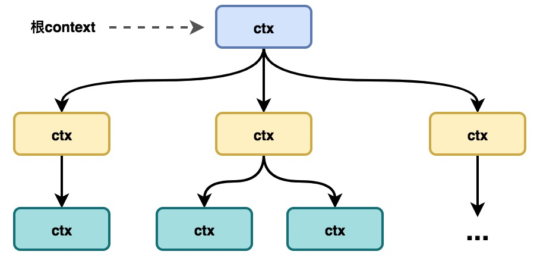
Context使用示例
Context一大用處就是超時控制。我們先看一個簡單用法。
func main() {
ctx, cancel := context.WithTimeout(context.Background(), 3 * time.Second)
defer cancel()
go SlowOperation(ctx)
go func() {
for {
time.Sleep(300 * time.Millisecond)
fmt.Println("goroutine:", runtime.NumGoroutine())
}
}()
time.Sleep(4 * time.Second)
}
func SlowOperation(ctx context.Context) {
done := make(chan int, 1)
go func() { // 模擬慢操作
dur := time.Duration(rand.Intn(5)+1) * time.Second
time.Sleep(dur)
done <- 1
}()
select {
case <-ctx.Done():
fmt.Println("SlowOperation timeout:", ctx.Err())
case <-done:
fmt.Println("Complete work")
}
}
上面代碼會不停打印當前groutine數量，可以觀察到SlowOperation函數執行超時之後，goroutine數量由4個變成2個，相關goroutetine退出了。源碼可以去go playground查看。
再看一個關於超時處理的例子， 源碼可以去go playground查看：
//
// 根據github倉庫統計信息接口查詢某個倉庫信息
func QueryFrameworkStats(ctx context.Context, framework string) <-chan string {
stats := make(chan string)
go func() {
repos := "https://api.github.com/repos/" + framework
req, err := http.NewRequest("GET", repos, nil)
if err != nil {
return
}
req = req.WithContext(ctx)
client := &http.Client{}
resp, err := client.Do(req)
if err != nil {
return
}
data, err := ioutil.ReadAll(resp.Body)
if err != nil {
return
}
defer resp.Body.Close()
stats <- string(data)
}()
return stats
}
func main() {
ctx, cancel := context.WithTimeout(context.Background(), 3*time.Second)
defer cancel()
framework := "gin-gonic/gin"
select {
case <-ctx.Done():
fmt.Println(ctx.Err())
case statsInfo := <-QueryFrameworkStats(ctx, framework):
fmt.Println(framework, " fork and start info : ", statsInfo)
}
}
Context另外一個用途就是傳遞上下文信息。從WithValue方法我們可以創建一個可以儲存鍵值的context
Context源碼分析
Context接口
首先我們來看下Context接口
type Context interface {
Deadline() (deadline time.Time, ok bool)
Done() <-chan struct{}
Err() error
Value(key interface{}) interface{}
}
Context接口一共包含四個方法：
- Deadline：返回綁定該context任務的執行超時時間，若未設置，則ok等於false
- Done：返回一個只讀通道，當綁定該context的任務執行完成並調用cancel方法或者任務執行超時時候，該通道會被關閉
- Err：返回一個錯誤，如果Done返回的通道未關閉則返回nil,如果context如果被取消，返回
Canceled錯誤，如果超時則會返回DeadlineExceeded錯誤 - Value：根據key返回，存儲在context中k-v數據
實現Context接口的類型
Context一共有4個類型實現了Context接口, 分別是emptyCtx, cancelCtx,timerCtx,valueCtx。每個類型都關聯一個創建方法。
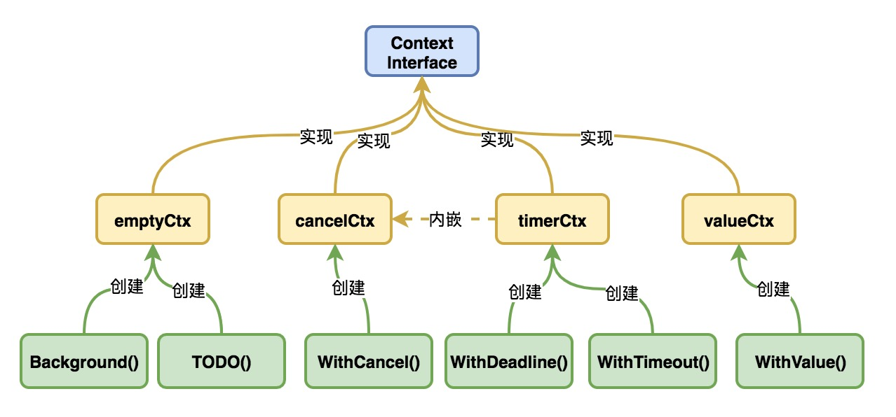
emptyCtx
emptyCtx是int類型，emptyCtx實現了Context接口，是一個空context，只能作爲根context。
type emptyCtx int //
func (*emptyCtx) Deadline() (deadline time.Time, ok bool) {
return
}
func (*emptyCtx) Done() <-chan struct{} {
return nil
}
func (*emptyCtx) Err() error {
return nil
}
func (*emptyCtx) Value(key interface{}) interface{} {
return nil
}
func (e *emptyCtx) String() string {
switch e {
case background:
return "context.Background"
case todo:
return "context.TODO"
}
return "unknown empty Context"
}
Background/TODO
context包還提供兩個函數返回emptyCtx類型。
var (
background = new(emptyCtx)
todo = new(emptyCtx)
)
func Background() Context {
return background
}
func TODO() Context {
return todo
}
Background用於創建根context，一般用於主函數、初始化和測試中，我們創建的context一般都是基於Bacground創建的。TODO用於當我們不確定使用什麼樣的context的時候使用。
cancelCtx
cancelCtx支持取消操作，取消同時也會對實現了canceler接口的子代進行取消操作。我們來看下cancelCtx結構體和cancelceler接口：
type cancelCtx struct {
Context
mu sync.Mutex
done chan struct{}
children map[canceler]struct{}
err error
}
type canceler interface {
cancel(removeFromParent bool, err error)
Done() <-chan struct{}
}
cancelCtx:
Context變量存儲其父contextdone變量定義了一個通道，並且只在第一次取消調用才關閉此通道。該通道是惰性創建的children是一個映射類型，用來存儲其子代context中實現的canceler，當該context取消時候，會遍歷該映射來讓子代context進行取消操作err記錄錯誤信息，默認是nil，僅當第一次cancel調用時候，纔會設置。
我們分別來看下cancelCtx實現的Done,Err,cancel方法。
func (c *cancelCtx) Done() <-chan struct{} {
c.mu.Lock() // 加鎖
if c.done == nil {
// done通道惰性創建，只有調用Done方法時候纔會創建
c.done = make(chan struct{})
}
d := c.done
c.mu.Unlock()
return d
}
func (c *cancelCtx) Err() error {
c.mu.Lock()
err := c.err
c.mu.Unlock()
return err
}
func (c *cancelCtx) cancel(removeFromParent bool, err error) {
if err == nil {
// 取消操作時候一定要傳遞err信息
panic("context: internal error: missing cancel error")
}
c.mu.Lock()
if c.err != nil {
// 只允許第一次cancel調用操作，下一次進來直接返回
c.mu.Unlock()
return
}
c.err = err
if c.done == nil {
// 未先進行Done調用，而先行調用Cancel, 此時done是nil，
// 這時候複用全局已關閉的通道
c.done = closedchan
} else {
// 關閉Done返回的通道，發送關閉信號
close(c.done)
}
// 子級context依次進行取消操作
for child := range c.children {
child.cancel(false, err)
}
c.children = nil
c.mu.Unlock()
if removeFromParent {
// 將當前context從其父級context中children map中移除掉，父級Context與該Context脫鉤。
// 這樣當父級Context進行Cancel操作時候，不會再改Context進行取消操作了。因爲再取消也沒有意義了，因爲該Context已經取消過了
removeChild(c.Context, c)
}
}
func removeChild(parent Context, child canceler) {
p, ok := parentCancelCtx(parent)
if !ok {
return
}
p.mu.Lock()
if p.children != nil {
delete(p.children, child)
}
p.mu.Unlock()
}
func parentCancelCtx(parent Context) (*cancelCtx, bool) {
for {
switch c := parent.(type) {
case *cancelCtx:
return c, true
case *timerCtx:
return &c.cancelCtx, true
case *valueCtx: // 當父級context是不支持cancel操作的ValueCtx類型時候，向上一直查找
parent = c.Context
default:
return nil, false
}
}
}
注意parentCancelCtx找到的節點不一定是就是父context，有可能是其父輩的context。可以參考下面這種圖:
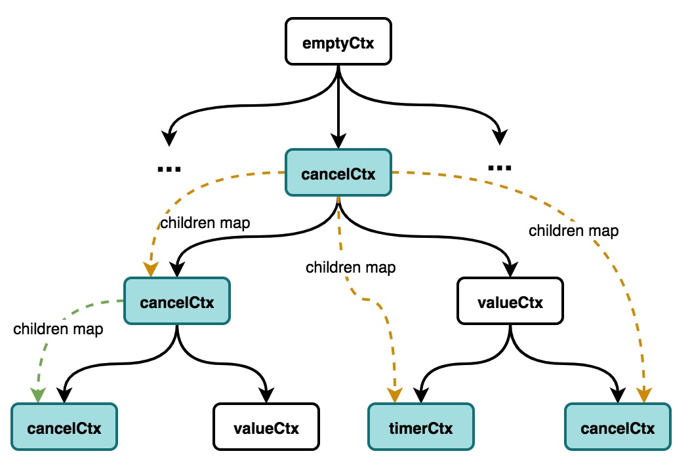
WithCancel
接下來看cancelCtx類型Context的創建。WithCancel會創一個cancelCtx，以及它關聯的取消函數。
type CancelFunc func()
func WithCancel(parent Context) (ctx Context, cancel CancelFunc) {
// 根據父context創建新的cancelCtx類型的context
c := newCancelCtx(parent)
// 向上遞歸找到父輩，並將新context的canceler添加到父輩的映射中
propagateCancel(parent, &c)
return &c, func() { c.cancel(true, Canceled) }
}
func newCancelCtx(parent Context) cancelCtx {
return cancelCtx{Context: parent}
}
func propagateCancel(parent Context, child canceler) {
if parent.Done() == nil {
// parent.Done()返回nil表明父Context不支持取消操作
// 大部分情況下，該父context已是根context，
// 該父context是通過context.Background()，或者context.ToDo()創建的
return
}
if p, ok := parentCancelCtx(parent); ok {
p.mu.Lock()
if p.err != nil {
// 父conext已經取消操作過，
// 子context立即進行取消操作，並傳遞父級的錯誤信息
child.cancel(false, p.err)
} else {
if p.children == nil {
p.children = make(map[canceler]struct{})
}
p.children[child] = struct{}{}
// 將當前context的取消添加到父context中
}
p.mu.Unlock()
} else {
// 如果parent是不可取消的，則監控parent和child的Done()通道
go func() {
select {
case <-parent.Done():
child.cancel(false, parent.Err())
case <-child.Done():
}
}()
}
}
timerCtx
timerCtx是基於cancelCtx的context類型，它支持過期取消。
type timerCtx struct {
cancelCtx
timer *time.Timer
deadline time.Time
}
func (c *timerCtx) Deadline() (deadline time.Time, ok bool) {
return c.deadline, true
}
func (c *timerCtx) String() string {
return contextName(c.cancelCtx.Context) + ".WithDeadline(" +
c.deadline.String() + " [" +
time.Until(c.deadline).String() + "])"
}
func (c *timerCtx) cancel(removeFromParent bool, err error) {
c.cancelCtx.cancel(false, err)
if removeFromParent {
// 刪除與父輩context的關聯
removeChild(c.cancelCtx.Context, c)
}
c.mu.Lock()
if c.timer != nil {
// 停止timer並回收
c.timer.Stop()
c.timer = nil
}
c.mu.Unlock()
}
WithDeadline
WithDeadline會創建一個timerCtx，以及它關聯的取消函數
func WithDeadline(parent Context, d time.Time) (Context, CancelFunc) {
if cur, ok := parent.Deadline(); ok && cur.Before(d) {
// 如果父context過期時間早於當前context過期時間，則創建cancelCtx
return WithCancel(parent)
}
c := &timerCtx{
cancelCtx: newCancelCtx(parent),
deadline: d,
}
propagateCancel(parent, c)
dur := time.Until(d)
if dur <= 0 {
// 如果新創建的timerCtx正好過期了，則取消操作並傳遞DeadlineExceeded
c.cancel(true, DeadlineExceeded)
return c, func() { c.cancel(false, Canceled) }
}
c.mu.Lock()
defer c.mu.Unlock()
if c.err == nil {
// 創建定時器，時間一到執行context取消操作
c.timer = time.AfterFunc(dur, func() {
c.cancel(true, DeadlineExceeded)
})
}
return c, func() { c.cancel(true, Canceled) }
}
WithTimeout
WithTimeout用來創建超時就會取消的context，內部實現就是WithDealine，傳遞給WithDealine的過期時間就是當前時間加上timeout時間
func WithTimeout(parent Context, timeout time.Duration) (Context, CancelFunc) {
return WithDeadline(parent, time.Now().Add(timeout))
}
valueCtx
valueCtx是可以傳遞共享信息的context。
type valueCtx struct {
Context
key, val interface{}
}
func (c *valueCtx) Value(key interface{}) interface{} {
if c.key == key {
// 當前context存在當前的key
return c.val
}
// 當前context不存在，則會沿着context樹，向上遞歸查找，直到根context，如果一直未找到，則會返回nil
return c.Context.Value(key)
}
如果當前context不存在該key，則會沿着context樹，向上遞歸查找，直到查找到根context，最後返回nil
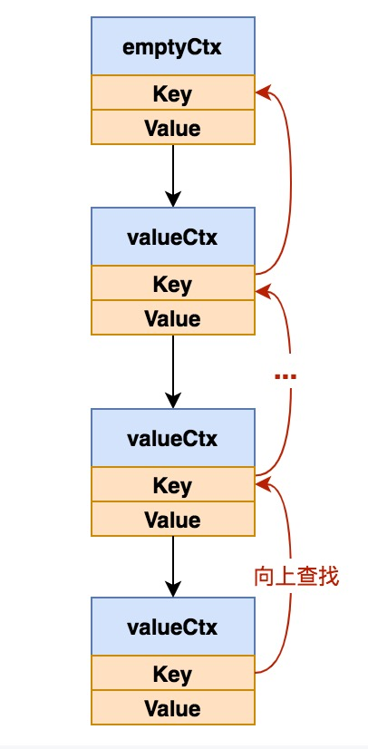
WithValue
WithValue用來創建valueCtx。如果key是不可以比較的時候，則會發生恐慌。可以比較類型，可以參考Comparison_operators。key應該是不導出變量，防止衝突。
func WithValue(parent Context, key, val interface{}) Context {
if key == nil {
panic("nil key")
}
if !reflectlite.TypeOf(key).Comparable() {
panic("key is not comparable")
}
return &valueCtx{parent, key, val}
}
總結
實現Context接口的類型
Context一共有4個類型實現了Context接口, 分別是emptyCtx, cancelCtx,timerCtx,valueCtx。
它們的功能與創建方法如下：
| 類型 | 創建方法 | 功能 |
|---|---|---|
| emptyCtx | Background()/TODO() | 用做context樹的根節點 |
| cancelCtx | WithCancel() | 可取消的context |
| timerCtx | WithDeadline()/WithTimeout() | 可取消的context，過期或超時會自動取消 |
| valueCtx | WithValue() | 可存儲共享信息的context |
Context實現兩種遞歸
Context實現兩種方向的遞歸操作。
| 遞歸方向 | 目的 |
|---|---|
| 向下遞歸 | 當對父Context進去手動取消操作，或超時取消時候，向下遞歸處理對實現了canceler接口的後代進行取消操作 |
| 向上隊規 | 當對Context查詢Key信息時候，若當前Context沒有當前K-V信息時候，則向父輩遞歸查詢，一直到查詢到跟節點的emptyCtx，返回nil爲止 |
Context使用規範
使用Context的是應該準守以下原則來保證在不同包中使用時候的接口一致性，以及能讓靜態分析工具可以檢查context的傳播：
- 不要將Context作爲結構體的一個字段存儲，相反而應該顯示傳遞Context給每一個需要它的函數，Context應該作爲函數的第一個參數，並命名爲ctx
- 不要傳遞一個nil Context給一個函數，即使該函數能夠接受它。如果你不確定使用哪一個Context，那你就傳遞context.TODO
- context是併發安全的，相同的Context能夠傳遞給運行在不同goroutine的函數
參考資料
- 深入理解Golang之context
- Go Concurrency Patterns: Context
- Using Goroutines, Channels, Contexts, Timers, WaitGroups and Errgroups
通道 - channel
Golang中Channel是goroutine間重要通信的方式，是併發安全的，通道內的數據First In First Out，我們可以把通道想象成隊列。
channel數據結構
Channel底層數據結構是一個結構體。
type hchan struct {
qcount uint // 隊列中元素個數
dataqsiz uint // 循環隊列的大小
buf unsafe.Pointer // 指向循環隊列
elemsize uint16 // 通道里面的元素大小
closed uint32 // 通道關閉的標誌
elemtype *_type // 通道元素的類型
sendx uint // 待發送的索引，即循環隊列中的隊尾指針rear
recvx uint // 待讀取的索引，即循環隊列中的隊頭指針front
recvq waitq // 接收等待隊列
sendq waitq // 發送等待隊列
lock mutex // 互斥鎖
}
hchan結構體中的buf指向一個數組，用來實現循環隊列，sendx是循環隊列的隊尾指針，recvx是循環隊列的隊頭指針。dataqsize是緩存型通道的大小，qcount記錄着通道內數據個數。
循環隊列一般使用空餘單元法來解決隊空和隊滿時候都存在font=rear帶來的二義性問題，但這樣會浪費一個單元。golang的channel中是通過增加qcount字段記錄隊列長度來解決二義性，一方面不會浪費一個存儲單元，另一方面當使用len函數查看通道長度時候，可以直接返回qcount字段，一舉兩得。
hchan結構體中另一重要部分是recvq,sendq，分別存儲了等待從通道中接收數據的goroutine，和等待發送數據到通道的goroutine。兩者都是waitq類型。
waitq是一個結構體類型，waitq和sudog構成雙向鏈表，其中sudog是鏈表元素的類型，waitq中first和last字段分別指向鏈表頭部的sudog，鏈表尾部的sudog。
type waitq struct {
first *sudog
last *sudog
}
type sudog struct {
...
g *g // 當前阻塞的G
...
next *sudog
prev *sudog
elem unsafe.Pointer
...
}
hchan結構圖如下：
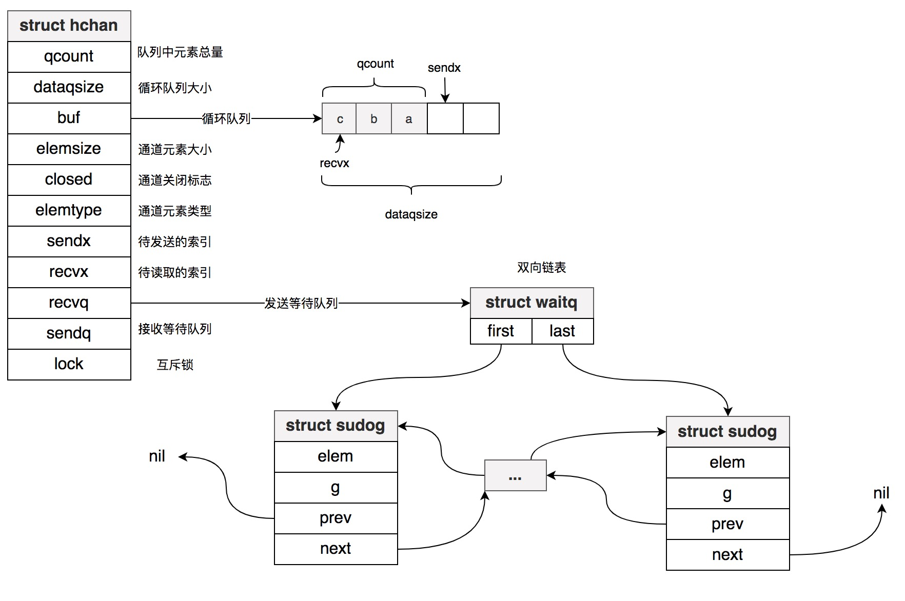
channel的創建
在分析channel的創建代碼之前，我們看下源碼文件中最開始定義的兩個常量；
const (
maxAlign = 8
hchanSize = unsafe.Sizeof(hchan{}) + uintptr(-int(unsafe.Sizeof(hchan{}))&(maxAlign-1))
...
)
- maxAlgin用來設置內存最大對齊值，對應就是64位系統下cache line的大小。當結構體是8字節對齊時候，能夠避免false share，提高讀寫速度
- hchanSize用來設置chan大小，unsafe.Sizeof(hchan{}) + uintptr(-int(unsafe.Sizeof(hchan{}))&(maxAlign-1))，這個複雜公式用來計算離unsafe.Sizeof(hchan{})最近的8的倍數。假設hchan{}大小是13，hchanSize是16。
假設n代表unsafe.Sizeof(hchan{})，a代表maxAlign，c代表hchanSize，則上面hchanSize的計算公式可以抽象爲：
c = n + ((-n) & (a - 1))
計算離8最近的倍數，只需將n補足與到8倍數的差值就可，c也可以用下面公式計算
c = n + (a - n%a)
感興趣的可以證明在a爲2的n的次冪時候，上面兩個公式是相等的。
func makechan(t *chantype, size int) *hchan {
elem := t.elem
// 通道元素的大小不能超過64K
if elem.size >= 1<<16 {
throw("makechan: invalid channel element type")
}
// hchanSize大小不是maxAlign倍數，或者通道數據元素的對齊保證大於maxAlign
if hchanSize%maxAlign != 0 || elem.align > maxAlign {
throw("makechan: bad alignment")
}
// 判斷通道數據是否超過內存限制
mem, overflow := math.MulUintptr(elem.size, uintptr(size))
if overflow || mem > maxAlloc-hchanSize || size < 0 {
panic(plainError("makechan: size out of range"))
}
var c *hchan
switch {
case mem == 0: // 無緩衝通道
c = (*hchan)(mallocgc(hchanSize, nil, true))
c.buf = c.raceaddr()
case elem.ptrdata == 0:
// 當通道數據元素不含指針，hchan和buf內存空間調用mallocgc一次性分配完成
c = (*hchan)(mallocgc(hchanSize+mem, nil, true))
// hchan和buf內存上佈局是緊挨着的
c.buf = add(unsafe.Pointer(c), hchanSize)
default:
// 當通道數據元素含指針時候，先創建hchan，然後給buf分配內存空間
c = new(hchan)
c.buf = mallocgc(mem, elem, true)
}
c.elemsize = uint16(elem.size)
c.elemtype = elem
c.dataqsiz = uint(size)
...
return c
}
發送數據到channel
func chansend(c *hchan, ep unsafe.Pointer, block bool, callerpc uintptr) bool {
// 當通道爲nil時候
if c == nil {
// 非阻塞模式下，直接返回false
if !block {
return false
}
// 調用gopark將當前Goroutine休眠，調用gopark時候，將傳入unlockf設置爲nil，當前Goroutine會一直休眠
gopark(nil, nil, waitReasonChanSendNilChan, traceEvGoStop, 2)
throw("unreachable")
}
// 調試，不必關注
if debugChan {
print("chansend: chan=", c, "\n")
}
// 競態檢測，不必關注
if raceenabled {
racereadpc(c.raceaddr(), callerpc, funcPC(chansend))
}
// 非阻塞模式下，不使用鎖快速檢查send操作
if !block && c.closed == 0 && ((c.dataqsiz == 0 && c.recvq.first == nil) ||
(c.dataqsiz > 0 && c.qcount == c.dataqsiz)) {
return false
}
var t0 int64
if blockprofilerate > 0 {
t0 = cputicks()
}
// 加鎖
lock(&c.lock)
// 如果通道已關閉，再發送數據，發生恐慌
if c.closed != 0 {
unlock(&c.lock)
panic(plainError("send on closed channel"))
}
// 從接收者隊列recvq中取出一個接收者，接收者不爲空情況下，直接將數據傳遞給該接收者
if sg := c.recvq.dequeue(); sg != nil {
send(c, sg, ep, func() { unlock(&c.lock) }, 3)
return true
}
// 緩衝隊列中的元素個數小於隊列的大小
// 說明緩衝隊列還有空間
if c.qcount < c.dataqsiz {
qp := chanbuf(c, c.sendx) // qp指向循環數組中未使用的位置
if raceenabled {
raceacquire(qp)
racerelease(qp)
}
// 將發送的數據寫入到qp指向的循環數組中的位置
typedmemmove(c.elemtype, qp, ep)
c.sendx++ // 將send加一，相當於循環隊列的front指針向前進1
if c.sendx == c.dataqsiz { //當循環隊列最後一個元素已使用，此時循環隊列將再次從0開始
c.sendx = 0
}
c.qcount++ // 隊列中元素計數加1
unlock(&c.lock) // 釋放鎖
return true
}
if !block {
unlock(&c.lock)
return false
}
gp := getg() // 獲取當前的G
mysg := acquireSudog() // 返回一個sudog
mysg.releasetime = 0
if t0 != 0 {
mysg.releasetime = -1
}
mysg.elem = ep // 發送的數據
mysg.waitlink = nil
mysg.g = gp // 當前G，即發送者
mysg.isSelect = false
mysg.c = c
gp.waiting = mysg
gp.param = nil
c.sendq.enqueue(mysg) // 將當前發送者入隊sendq中
goparkunlock(&c.lock, waitReasonChanSend, traceEvGoBlockSend, 3) // 將當前goroutine放入waiting狀態，並釋放c.lock鎖
// Ensure the value being sent is kept alive until the
// receiver copies it out. The sudog has a pointer to the
// stack object, but sudogs aren't considered as roots of the
// stack tracer
KeepAlive(ep)
// someone woke us up.
if mysg != gp.waiting {
throw("G waiting list is corrupted")
}
gp.waiting = nil
if gp.param == nil {
if c.closed == 0 {
throw("chansend: spurious wakeup")
}
panic(plainError("send on closed channel"))
}
gp.param = nil
if mysg.releasetime > 0 {
blockevent(mysg.releasetime-t0, 2)
}
mysg.c = nil
releaseSudog(mysg)
return true
}
func send(c *hchan, sg *sudog, ep unsafe.Pointer, unlockf func(), skip int) {
if raceenabled {
if c.dataqsiz == 0 {
// 無緩衝通道
racesync(c, sg)
} else {
qp := chanbuf(c, c.recvx)
raceacquire(qp)
racerelease(qp)
raceacquireg(sg.g, qp)
racereleaseg(sg.g, qp)
c.recvx++ // 相當於循環隊列的rear指針向前進1
if c.recvx == c.dataqsiz { // 隊列數組中最後一個元素已讀取，則再次從頭開始讀取
c.recvx = 0
}
c.sendx = c.recvx
}
}
if sg.elem != nil { // 複製數據到sg中
sendDirect(c.elemtype, sg, ep)
sg.elem = nil
}
gp := sg.g
unlockf()
gp.param = unsafe.Pointer(sg)
if sg.releasetime != 0 {
sg.releasetime = cputicks()
}
goready(gp, skip+1) // 使goroutine變成runnable狀態，喚醒goroutine
}
func sendDirect(t *_type, sg *sudog, src unsafe.Pointer) {
dst := sg.elem
typeBitsBulkBarrier(t, uintptr(dst), uintptr(src), t.size)
memmove(dst, src, t.size)
}
// 返回緩存槽i位置的對應的指針
func chanbuf(c *hchan, i uint) unsafe.Pointer {
return add(c.buf, uintptr(i)*uintptr(c.elemsize))
}
// 將src值複製到dst
// 源碼https://github.com/golang/go/blob/2bc8d90fa21e9547aeb0f0ae775107dc8e05dc0a/src/runtime/mbarrier.go#L156
func typedmemmove(typ *_type, dst, src unsafe.Pointer) {
if dst == src {
return
}
...
memmove(dst, src, typ.size)
...
}
從channel中讀取數據
func chanrecv(c *hchan, ep unsafe.Pointer, block bool) (selected, received bool) {
// 當通道爲nil時候
if c == nil {
if !block { // 當非阻塞模式直接返回
return
}
// 一直阻塞
gopark(nil, nil, waitReasonChanReceiveNilChan, traceEvGoStop, 2)
throw("unreachable")
}
...
// 加鎖鎖
lock(&c.lock)
// 當通道已關閉，且通道緩衝沒有元素時候，直接返回
if c.closed != 0 && c.qcount == 0 {
if raceenabled {
raceacquire(c.raceaddr())
}
unlock(&c.lock) // 釋放鎖
if ep != nil {
typedmemclr(c.elemtype, ep) // 清空ep指向的內存
}
return true, false
}
// 從發送者隊列中取出一個發送者，發送者不爲空時候，將發送者數據傳遞給接收者
if sg := c.sendq.dequeue(); sg != nil {
recv(c, sg, ep, func() { unlock(&c.lock) }, 3)
return true, true
}
// 緩衝隊列中有數據情況下，從緩存隊列取出數據，傳遞給接收者
if c.qcount > 0 {
// qp指向循環隊列數組中元素
qp := chanbuf(c, c.recvx)
if raceenabled {
raceacquire(qp)
racerelease(qp)
}
if ep != nil {
// 直接qp指向的數據複製到ep指向的地址
typedmemmove(c.elemtype, ep, qp)
}
// 清空qp指向內存的數據
typedmemclr(c.elemtype, qp)
c.recvx++ // 相當於循環隊列中的rear加1
if c.recvx == c.dataqsiz { // 隊列最後一個元素已讀取出來，recvx指向0
c.recvx = 0
}
c.qcount-- // 隊列中元素個數減1
unlock(&c.lock) // 釋放鎖
return true, true
}
if !block {
unlock(&c.lock)
return false, false
}
gp := getg()
mysg := acquireSudog()
mysg.releasetime = 0
if t0 != 0 {
mysg.releasetime = -1
}
mysg.elem = ep
mysg.waitlink = nil
gp.waiting = mysg
mysg.g = gp
mysg.isSelect = false
mysg.c = c
gp.param = nil
c.recvq.enqueue(mysg)
goparkunlock(&c.lock, waitReasonChanReceive, traceEvGoBlockRecv, 3)
if mysg != gp.waiting {
throw("G waiting list is corrupted")
}
gp.waiting = nil
if mysg.releasetime > 0 {
blockevent(mysg.releasetime-t0, 2)
}
closed := gp.param == nil
gp.param = nil
mysg.c = nil
releaseSudog(mysg)
return true, !closed
}
func recv(c *hchan, sg *sudog, ep unsafe.Pointer, unlockf func(), skip int) {
if c.dataqsiz == 0 {
if raceenabled {
racesync(c, sg)
}
if ep != nil {
recvDirect(c.elemtype, sg, ep)
}
} else {
qp := chanbuf(c, c.recvx)
if raceenabled {
raceacquire(qp)
racerelease(qp)
raceacquireg(sg.g, qp)
racereleaseg(sg.g, qp)
}
// 複製隊列中數據到接收者
if ep != nil {
typedmemmove(c.elemtype, ep, qp)
}
typedmemmove(c.elemtype, qp, sg.elem)
c.recvx++
if c.recvx == c.dataqsiz {
c.recvx = 0
}
c.sendx = c.recvx
}
sg.elem = nil
gp := sg.g
unlockf()
gp.param = unsafe.Pointer(sg)
if sg.releasetime != 0 {
sg.releasetime = cputicks()
}
goready(gp, skip+1) // 喚醒G
}
關閉channel
func closechan(c *hchan) {
// 當關閉的通道是nil時候，直接恐慌
if c == nil {
panic(plainError("close of nil channel"))
}
// 加鎖
lock(&c.lock)
// 通道已關閉，再次關閉直接恐慌
if c.closed != 0 {
unlock(&c.lock)
panic(plainError("close of closed channel"))
}
...
c.closed = 1 // 關閉標誌closed置爲1
var glist gList
// 將接收者添加到glist中
for {
sg := c.recvq.dequeue()
if sg == nil {
break
}
if sg.elem != nil {
typedmemclr(c.elemtype, sg.elem)
sg.elem = nil
}
if sg.releasetime != 0 {
sg.releasetime = cputicks()
}
gp := sg.g
gp.param = nil
if raceenabled {
raceacquireg(gp, c.raceaddr())
}
glist.push(gp)
}
// 將發送者添加到glist中
for {
sg := c.sendq.dequeue()
if sg == nil {
break
}
sg.elem = nil
if sg.releasetime != 0 {
sg.releasetime = cputicks()
}
gp := sg.g
gp.param = nil
if raceenabled {
raceacquireg(gp, c.raceaddr())
}
glist.push(gp) //
}
unlock(&c.lock)
// 循環glist，調用goready喚醒所有接收者和發送者
for !glist.empty() {
gp := glist.pop()
gp.schedlink = 0
goready(gp, 3)
}
}
總結
- channel規則：
| 操作 | 空Channel | 已關閉Channel | 活躍Channel |
|---|---|---|---|
| close(ch) | panic | panic | 成功關閉 |
| ch <-v | 永遠阻塞 | panic | 成功發送或阻塞 |
| v,ok = <-ch | 永遠阻塞 | 不阻塞 | 成功接收或阻塞 |
注意： 從空通道中寫入或讀取數據會永遠阻塞，這會造成goroutine泄漏。
- 發送、接收數據以及關閉通道流程圖：
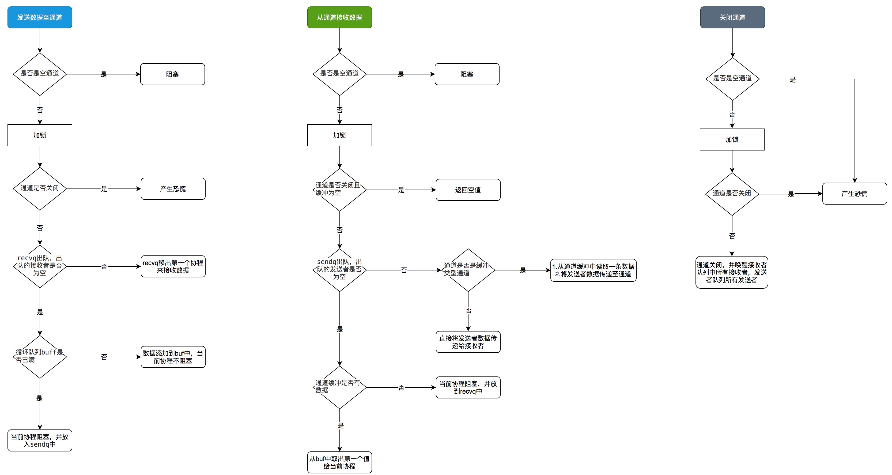
原子操作 - atomic
atomic是Go內置原子操作包。下面是官方說明：
Package atomic provides low-level atomic memory primitives useful for implementing synchronization algorithms. atomic包提供了用於實現同步機制的底層原子內存原語。
These functions require great care to be used correctly. Except for special, low-level applications, synchronization is better done with channels or the facilities of the sync package. Share memory by communicating; don't communicate by sharing memory. 使用這些功能需要非常小心。除了特殊的底層應用程序外，最好使用通道或sync包來進行同步。通過通信來共享內存；不要通過共享內存來通信。
atomic包提供的操作可以分爲三類：
對整數類型T的操作
T類型是int32、int64、uint32、uint64、uintptr其中一種。
func AddT(addr *T, delta T) (new T)
func CompareAndSwapT(addr *T, old, new T) (swapped bool)
func LoadT(addr *T) (val T)
func StoreT(addr *T, val T)
func SwapT(addr *T, new T) (old T)
對於unsafe.Pointer類型的操作
func CompareAndSwapPointer(addr *unsafe.Pointer, old, new unsafe.Pointer) (swapped bool)
func LoadPointer(addr *unsafe.Pointer) (val unsafe.Pointer)
func StorePointer(addr *unsafe.Pointer, val unsafe.Pointer)
func SwapPointer(addr *unsafe.Pointer, new unsafe.Pointer) (old unsafe.Pointer)
atomic.Value類型提供Load/Store操作
atomic提供了atomic.Value類型，用來原子性加載和存儲類型一致的值（consistently typed value）。atomic.Value提供了對任何類型的原則性操作。
func (v *Value) Load() (x interface{}) // 原子性返回剛剛存儲的值，若沒有值返回nil
func (v *Value) Store(x interface{}) // 原子性存儲值x，x可以是nil，但需要每次存的值都必須是同一個具體類型。
用法
用法示例1：原子性增加值
package main
import (
"fmt"
"sync"
"sync/atomic"
)
func main() {
var count int32
var wg sync.WaitGroup
for i := 0; i < 10; i++ {
wg.Add(1)
go func() {
atomic.AddInt32(&count, 1) // 原子性增加值
wg.Done()
}()
go func() {
fmt.Println(atomic.LoadInt32(&count)) // 原子性加載
}()
}
wg.Wait()
fmt.Println("count: ", count)
}
用法示例2：簡易自旋鎖實現
package main
import (
"sync/atomic"
)
type spin int64
func (l *spin) lock() bool {
for {
if atomic.CompareAndSwapInt64((*int64)(l), 0, 1) {
return true
}
continue
}
}
func (l *spin) unlock() bool {
for {
if atomic.CompareAndSwapInt64((*int64)(l), 1, 0) {
return true
}
continue
}
}
func main() {
s := new(spin)
for i := 0; i < 5; i++ {
s.lock()
go func(i int) {
println(i)
s.unlock()
}(i)
}
for {
}
}
用法示例3： 無符號整數減法操作
對於Uint32和Uint64類型Add方法第二個參數只能接受相應的無符號整數，atomic包沒有提供減法SubstractT操作：
func AddUint32(addr *uint32, delta uint32) (new uint32)
func AddUint64(addr *uint64, delta uint64) (new uint64)
對於無符號整數V，我們可以傳遞-V給AddT方法第二個參數就可以實現減法操作。
package main
import (
"sync/atomic"
)
func main() {
var i uint64 = 100
var j uint64 = 10
var k = 5
atomic.AddUint64(&i, -j)
println(i)
atomic.AddUint64(&i, -uint64(k))
println(i)
// 下面這種操作是不可以的，會發生恐慌：constant -5 overflows uint64
// atomic.AddUint64(&i, -uint64(5))
}
源碼分析
atomic包提供的三類操作的前兩種都是直接通過彙編源碼實現的（sync/atomic/asm.s):
#include "textflag.h"
TEXT ·SwapInt32(SB),NOSPLIT,$0
JMP runtime∕internal∕atomic·Xchg(SB)
TEXT ·SwapUint32(SB),NOSPLIT,$0
JMP runtime∕internal∕atomic·Xchg(SB)
...
TEXT ·StoreUintptr(SB),NOSPLIT,$0
JMP runtime∕internal∕atomic·Storeuintptr(SB)
從上面彙編代碼可以看出來atomic操作通過JMP操作跳到runtime/internal/atomic目錄下面的彙編實現。我們把目標轉移到runtime/internal/atomic目錄下面。
該目錄包含針對不同平臺的atomic彙編實現asm_xxx.s。這裏面我們只關注amd64平臺asm_amd64.s(runtime/internal/atomic/asm_amd64.s)和atomic_amd64.go(runtime/internal/atomic/atomic_amd64.go)。
| 函數 | 底層實現 |
|---|---|
| SwapInt32 / SwapUint32 | runtime∕internal∕atomic·Xchg |
| SwapInt64 / SwapUint64 / SwapUintptr | runtime∕internal∕atomic·Xchg64 |
| CompareAndSwapInt32 / CompareAndSwapUint32 | runtime∕internal∕atomic·Cas |
| CompareAndSwapUintptr / CompareAndSwapInt64 / CompareAndSwapUint64 | runtime∕internal∕atomic·Cas64 |
| AddInt32 / AddUint32 | runtime∕internal∕atomic·Xadd |
| AddUintptr / AddInt64 / AddUint64 | runtime∕internal∕atomic·Xadd64 |
| LoadInt32 / LoadUint32 | runtime∕internal∕atomic·Load |
| LoadInt64 / LoadUint64 / LoadUint64/ LoadUintptr | runtime∕internal∕atomic·Load64 |
| LoadPointer | runtime∕internal∕atomic·Loadp |
| StoreInt32 / StoreUint32 | runtime∕internal∕atomic·Store |
| StoreInt64 / StoreUint64 / StoreUintptr | runtime∕internal∕atomic·Store64 |
Add操作
AddUintptr 、 AddInt64 以及 AddUint64都是由方法runtime∕internal∕atomic·Xadd64實現:
TEXT runtime∕internal∕atomic·Xadd64(SB), NOSPLIT, $0-24
MOVQ ptr+0(FP), BX // 第一個參數保存到BX
MOVQ delta+8(FP), AX // 第二個參數保存到AX
MOVQ AX, CX // 將第二個參數臨時存到CX寄存器中
LOCK // LOCK指令進行鎖住操作，實現對共享內存獨佔訪問
XADDQ AX, 0(BX) // xaddq指令，實現寄存器AX的值與BX指向的內存存的值互換，
// 並將這兩個值的和存在BX指向的內存中，此時AX寄存器存的是第一個參數指向的值
ADDQ CX, AX // 此時AX寄存器的值是Add操作之後的值，和0(BX)值一樣
MOVQ AX, ret+16(FP) # 返回值
RET
LOCK指令是一個指令前綴，其後是讀-寫性質的指令，在多處理器環境中，LOCK指令能夠確保在執行LOCK隨後的指令時，處理器擁有對數據的獨佔使用。若對應數據已經在cache line裏，也就不用鎖定總線，僅鎖住緩存行即可，否則需要鎖住總線來保證獨佔性。
XADDQ指令用於交換加操作，會將源操作數與目的操作數互換，並將兩者的和保存到源操作數中。
AddInt32 、 AddUint32 都是由方法runtime∕internal∕atomic·Xadd實現，實現邏輯和runtime∕internal∕atomic·Xadd64一樣，只是Xadd中相關數據操作指令後綴是L：
TEXT runtime∕internal∕atomic·Xadd(SB), NOSPLIT, $0-20
MOVQ ptr+0(FP), BX // 注意第一個參數是一個指針類型，是64位，所以還是MOVQ指令
MOVL delta+8(FP), AX // 第二個參數32位的，所以是MOVL指令
MOVL AX, CX
LOCK
XADDL AX, 0(BX)
ADDL CX, AX
MOVL AX, ret+16(FP)
RET
Store操作
StoreInt64、StoreUint64、StoreUintptr三個是runtime∕internal∕atomic·Store64方法實現:
TEXT runtime∕internal∕atomic·Store64(SB), NOSPLIT, $0-16
MOVQ ptr+0(FP), BX // 第一個參數保存到BX
MOVQ val+8(FP), AX // 第二個參數保存到AX
XCHGQ AX, 0(BX) // 將AX寄存器與BX寄存指向內存的值互換，
// 那麼第一個參數指向的內存存的值爲第二個參數
RET
XCHGQ指令是交換指令，用於交換源操作數和目的操作數。
StoreInt32、StoreUint32是由runtime∕internal∕atomic·Store方法實現，與runtime∕internal∕atomic·Store64邏輯一樣，這裏不在贅述。
CompareAndSwap操作
CompareAndSwapUintptr、CompareAndSwapInt64和CompareAndSwapUint64都是由runtime∕internal∕atomic·Cas64實現：
TEXT runtime∕internal∕atomic·Cas64(SB), NOSPLIT, $0-25
MOVQ ptr+0(FP), BX // 將第一個參數保存到BX
MOVQ old+8(FP), AX // 將第二個參數保存到AX
MOVQ new+16(FP), CX // 將第三個參數保存CX
LOCK // LOCK指令進行上鎖操作
CMPXCHGQ CX, 0(BX) // BX寄存器指向的內存的值與AX寄存器值進行比較，若相等則把CX寄存器值存儲到BX寄存器指向的內存中
SETEQ ret+24(FP)
RET
CMPXCHGQ指令是比較並交換指令，它的用法是將目的操作數和累加寄存器AX進行比較，若相等，則將源操作數複製到目的操作數中，否則將目的操作複製到累加寄存器中。
Swap操作
SwapInt64、SwapUint64、SwapUintptr實現的方法是runtime∕internal∕atomic·Xchg64，SwapInt32和SwapUint32底層實現是runtime∕internal∕atomic·Xchg，這裏面只分析64的操作：
TEXT runtime∕internal∕atomic·Xchg64(SB), NOSPLIT, $0-24
MOVQ ptr+0(FP), BX // 第一個參數保存到BX
MOVQ new+8(FP), AX // 第一個參數保存到AX中
XCHGQ AX, 0(BX) // XCHGQ指令交互AX值到0(BX)中
MOVQ AX, ret+16(FP) // 將舊值返回
RET
Load操作
LoadInt32、LoadUint32、LoadInt64 、 LoadUint64 、 LoadUint64、 LoadUintptr、LoadPointer實現都是Go實現的：
//go:linkname Load
//go:linkname Loadp
//go:linkname Load64
//go:nosplit
//go:noinline
func Load(ptr *uint32) uint32 {
return *ptr
}
//go:nosplit
//go:noinline
func Loadp(ptr unsafe.Pointer) unsafe.Pointer {
return *(*unsafe.Pointer)(ptr)
}
//go:nosplit
//go:noinline
func Load64(ptr *uint64) uint64 {
return *ptr
}
最後我們來分析atomic.Value類型提供Load/Store操作。
atomic.Value類型的Load/Store操作
atomic.Value類型定義如下：
type Value struct {
v interface{}
}
// ifaceWords是空接口底層表示
type ifaceWords struct {
typ unsafe.Pointer
data unsafe.Pointer
}
atomic.Value底層存儲的是空接口類型，空接口底層結構如下：
type eface struct {
_type *_type // 空接口持有的類型
data unsafe.Pointer // 指向空接口持有類型變量的指針
}
atomic.Value內存佈局如下所示：
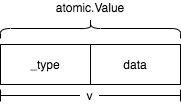
從上圖可以看出來atomic.Value內部分爲兩部分，第一個部分是_type類型指針，第二個部分是unsafe.Pointer類型，兩個部分大小都是8字節（64系統下）。我們可以通過以下代碼進行測試：
type Value struct {
v interface{}
}
type ifaceWords struct {
typ unsafe.Pointer
data unsafe.Pointer
}
func main() {
func main() {
val := Value{v: 123456}
t := (*ifaceWords)(unsafe.Pointer(&val))
dp := (*t).data // dp是非安全指針類型變量
fmt.Println(*((*int)(dp))) // 輸出123456
var val2 Value
t = (*ifaceWords)(unsafe.Pointer(&val2))
fmt.Println(t.typ) // 輸出nil
}
接下來我們看下Store方法：
func (v *Value) Store(x interface{}) {
if x == nil { // atomic.Value類型變量不能是nil
panic("sync/atomic: store of nil value into Value")
}
vp := (*ifaceWords)(unsafe.Pointer(v)) // 將指向atomic.Value類型指針轉換成*ifaceWords類型
xp := (*ifaceWords)(unsafe.Pointer(&x)) // xp是*faceWords類型指針，指向傳入參數x
for {
typ := LoadPointer(&vp.typ) // 原子性返回vp.typ
if typ == nil { // 第一次調用Store時候，atomic.Value底層結構體第一部分是nil，
// 我們可以從上面測試代碼可以看出來
runtime_procPin() // pin process處理，防止M被搶佔
if !CompareAndSwapPointer(&vp.typ, nil, unsafe.Pointer(^uintptr(0))) { // 通過cas操作，將atomic.Value的第一部分存儲爲unsafe.Pointer(^uintptr(0))，若沒操作成功，繼續操作
runtime_procUnpin() // unpin process處理，釋放對當前M的鎖定
continue
}
// vp.data == xp.data
// vp.typ == xp.typ
StorePointer(&vp.data, xp.data)
StorePointer(&vp.typ, xp.typ)
runtime_procUnpin()
return
}
if uintptr(typ) == ^uintptr(0) { // 此時說明第一次的Store操作未完成，正在處理中，此時其他的Store等待第一次操作完成
continue
}
if typ != xp.typ { // 再次Store操作時進行typ類型校驗，確保每次Store數據對象都必須是同一類型
panic("sync/atomic: store of inconsistently typed value into Value")
}
StorePointer(&vp.data, xp.data) // vp.data == xp.data
return
}
}
總結上面Store流程：
- 每次調用Store方法時候，會將傳入參數轉換成interface{}類型。當第一次調用Store方法時候，分兩部分操作，分別將傳入參數空接口類型的_typ和data，存儲到Value類型中。
- 當再次調用Store類型時候，進行傳入參數空接口類型的_type和Value的_type比較，若不一致直接panic，若一致則將data存儲到Value類型中
從流程2可以看出來，每次調用Store方法時傳入參數都必須是同一類型的變量。當Store完成之後，實現了“鳩佔鵲巢”，atomic.Value底層存儲的實際上是(interface{})x。
最後我們看看atomic.Value的Load操作：
func (v *Value) Load() (x interface{}) {
vp := (*ifaceWords)(unsafe.Pointer(v)) // 將指向v指針轉換成*ifaceWords類型
typ := LoadPointer(&vp.typ)
if typ == nil || uintptr(typ) == ^uintptr(0) { // typ == nil 說明Store方法未調用過
// uintptr(typ) == ^uintptr(0) 說明第一Store方法調用正在進行中
return nil
}
data := LoadPointer(&vp.data)
xp := (*ifaceWords)(unsafe.Pointer(&x))
xp.typ = typ
xp.data = data
return
}
併發Map - sync.Map
併發Map - sync.Map
源碼分析
sync.Map的結構：
type Map struct {
mu Mutex // 排他鎖，用於對dirty map操作時候加鎖處理
read atomic.Value // read map
// dirty map。新增key時候，只寫入dirty map中，需要使用mu
dirty map[interface{}]*entry
// 用來記錄從read map中讀取key時miss的次數
misses int
}
sync.Map結構體中read字段是atomic.Value類型，底層是readOnly結構體：
type readOnly struct {
m map[interface{}]*entry
amended bool // 當amended爲true時候，表示sync.Map中的key也存在dirty map中
}
read map和dirty map的value類型是*entry， entry結構體定義如下：
// expunged用來標記從dirty map刪除掉了
var expunged = unsafe.Pointer(new(interface{}))
type entry struct {
// 如果p == nil 說明對應的entry已經被刪除掉了， 且m.dirty == nil
// 如果 p == expunged 說明對應的entry已經被刪除了，但m.dirty != nil，且該entry不存在m.dirty中
// 上述兩種情況外，entry則是合法的值並且在m.read.m[key]中存在
// 如果m.dirty != nil，entry也會在m.dirty[key]中
// p指針指向sync.Map中key對應的Value
p unsafe.Pointer // *interface{}
}
對Map的操作可以分爲四類：
- Add key-value 新增key-value
- Update key-value 更新key對應的value值
- Get Key-value 獲取Key對應的Value值
- Delete Key 刪除key
我們來看看新增和更新操作：
// Store用來新增和更新操作
func (m *Map) Store(key, value interface{}) {
read, _ := m.read.Load().(readOnly)
// 如果read map存在該key，且該key對應的value不是expunged時(準確的說key對應的value, value是*entry類型，entry的p字段指向不是expunged時)，
// 則使用cas更新value，此操作是原子性的
if e, ok := read.m[key]; ok && e.tryStore(&value) {
return
}
m.mu.Lock() // 先加鎖，然後重新讀取一次read map，目的是防止dirty map升級到read map（併發Load操作時候），read map更改了。
read, _ = m.read.Load().(readOnly)
if e, ok := read.m[key]; ok { // 若read map存在此key，此時就是map的更新操作
if e.unexpungeLocked() { // 將value由expunged更改成nil，
// 若成功則表明dirty map中不存在此key，把key-value添加到dirty map中
m.dirty[key] = e
}
e.storeLocked(&value) // 更改value。value是指針類型(*entry)，read map和dirty map的value都指向該值。
} else if e, ok := m.dirty[key]; ok {// 若dirty map存在該key，則直接更改value
e.storeLocked(&value)
} else { // 若read map和dirty map中都不存在該key，其實就是map的新增key-value操作
if !read.amended {// amended爲true時表示sync.Map部分key存在dirty map中
// dirtyLocked()做兩件事情：
// 1. 若dirty map等於nil，則初始化dirty map。
// 2. 遍歷read map，將read map中的key-value複製到dirty map中，從read map中複製的key-value時，value是nil或expunged的(因爲nil和expunged是key刪除了的）不進行復制。
// 同時若value值爲nil，則順便更改成expunged（用來標記dirty map不包含此key)
// 思考🤔：爲啥dirtyLocked()要幹事情2，即將read map的key-value複製到dirty map中？
m.dirtyLocked()
// 該新增key-value將添加dirty map中，所以將read map的amended設置爲true。當amended爲true時候，從sync.Map讀取key時候，優先從read map中讀取，若read map讀取時候不到時候，會從dirty map中讀取
m.read.Store(readOnly{m: read.m, amended: true})
}
// 添加key-value到dirty map中
m.dirty[key] = newEntry(value)
}
// 釋放鎖
m.mu.Unlock()
}
func (e *entry) tryStore(i *interface{}) bool {
for {
p := atomic.LoadPointer(&e.p)
if p == expunged {
return false
}
if atomic.CompareAndSwapPointer(&e.p, p, unsafe.Pointer(i)) {
return true
}
}
}
func (e *entry) unexpungeLocked() (wasExpunged bool) {
return atomic.CompareAndSwapPointer(&e.p, expunged, nil)
}
func (e *entry) storeLocked(i *interface{}) {
atomic.StorePointer(&e.p, unsafe.Pointer(i))
}
func (m *Map) dirtyLocked() {
if m.dirty != nil {
return
}
read, _ := m.read.Load().(readOnly)
m.dirty = make(map[interface{}]*entry, len(read.m))
for k, e := range read.m {
if !e.tryExpungeLocked() {
m.dirty[k] = e
}
}
}
func (e *entry) tryExpungeLocked() (isExpunged bool) {
p := atomic.LoadPointer(&e.p)
for p == nil {
if atomic.CompareAndSwapPointer(&e.p, nil, expunged) {
return true
}
p = atomic.LoadPointer(&e.p)
}
return p == expunged
}
接下來看看Map的Get操作：
// Load方法用來獲取key對應的value值，返回的ok表名key是否存在sync.Map中
func (m *Map) Load(key interface{}) (value interface{}, ok bool) {
read, _ := m.read.Load().(readOnly)
e, ok := read.m[key]
if !ok && read.amended { // 若key不存在read map中，且dirty map包含sync.Map中key情況下
m.mu.Lock() // 加鎖
read, _ = m.read.Load().(readOnly) // 再次從read map讀取key
e, ok = read.m[key]
if !ok && read.amended {
e, ok = m.dirty[key] // 從dirty map中讀取key
// missLocked() 首先將misses計數加1，misses用來表明read map讀取key沒有命中的次數。
// 若misses次數多於dirty map中元素個數時候，則將dirty map升級爲read map，dirty map設置爲nil, amended置爲false
m.missLocked()
}
m.mu.Unlock()
}
if !ok { // read map 和 dirty map中都不存在該key
return nil, false
}
// 加載value值
return e.load()
}
func (e *entry) load() (value interface{}, ok bool) {
p := atomic.LoadPointer(&e.p)
if p == nil || p == expunged { // 若value值是nil或expunged，返回nil, false，表示key不存在
return nil, false
}
return *(*interface{})(p), true
}
func (m *Map) missLocked() {
m.misses++
if m.misses < len(m.dirty) {
return
}
// 新創建一個readOnly對象，其中amended爲false, 並將m.dirty直接賦值給該對象的m字段，
// 這也是上面思考中的dirtyLocked爲什麼要幹事情2的原因，因爲通過2操作之後，m.dirty已包含read map中的所有key，可以直接拿來創建readOnly。
m.read.Store(readOnly{m: m.dirty})
m.dirty = nil
m.misses = 0
}
在接着看看Map的刪除操作：
// Delete用於刪除key
func (m *Map) Delete(key interface{}) {
read, _ := m.read.Load().(readOnly)
e, ok := read.m[key]
if !ok && read.amended {
m.mu.Lock()
read, _ = m.read.Load().(readOnly)
e, ok = read.m[key]
// 若read map不存在該key，但dirty map中存在該key。則直接調用delete，刪除dirty map中該key
if !ok && read.amended {
delete(m.dirty, key)
}
m.mu.Unlock()
}
if ok {
e.delete()
}
}
func (e *entry) delete() (hadValue bool) {
for {
p := atomic.LoadPointer(&e.p)
if p == nil || p == expunged { // 若entry中p已經是nil或者expunged則直接返回
return false
}
if atomic.CompareAndSwapPointer(&e.p, p, nil) { // 將entry中的p設置爲nil
return true
}
}
}
sync.Map還提供遍歷key-value功能：
// Range方法接受一個迭代回調函數，用來處理遍歷的key和value
func (m *Map) Range(f func(key, value interface{}) bool) {
read, _ := m.read.Load().(readOnly)
if read.amended { // 若dirty map中包含sync.Map中key時候
m.mu.Lock()
read, _ = m.read.Load().(readOnly)
if read.amended {// 加鎖之後，再次判斷，是爲了防止併發調用Load方法時候，dirty map升級爲read map時候，amended爲false情況
// read.amended爲true的時候，m.dirty包含sync.Map中所有的key
read = readOnly{m: m.dirty}
m.read.Store(read)
m.dirty = nil
m.misses = 0
}
m.mu.Unlock()
}
for k, e := range read.m {
v, ok := e.load()
if !ok {
continue
}
if !f(k, v) { //執行迭代回調函數，當返回false時候，停止迭代
break
}
}
}
爲什麼不使用sync.Mutex+map實現併發的map呢？
這個問題可以換個問法就是sync.Map相比sync.Mutex+map實現併發map有哪些優勢？
sync.Map優勢在於當key存在read map時候，如果進行Store操作，可以使用原子性操作更新，而sync.Mutex+map形式每次寫操作都要加鎖，這個成本更高。
另外併發讀寫兩個不同的key時候，寫操作需要加鎖，而讀操作是不需要加鎖的。
讀少寫多情況下併發map，應該怎麼設計？
這種情況下，可以使用分片鎖，跟據key進行hash處理後，找到其對應讀寫鎖，然後進行鎖定處理。通過分片鎖機制，可以降低鎖的粒度來實現讀少寫多情況下高併發。可以參見orcaman/concurrent-map實現。
總結
- sync.Map是不能值傳遞（狹義的）的
- sync.Map採用空間換時間策略。其底層結構存在兩個map，分別是read map和dirty map。當讀取操作時候，優先從read map中讀取，是不需要加鎖的，若key不存在read map中時候，再從dirty map中讀取，這個過程是加鎖的。當新增key操作時候，只會將新增key添加到dirty map中，此操作是加鎖的，但不會影響read map的讀操作。當更新key操作時候，如果key已存在read map中時候，只需無鎖更新更新read map就行，負責加鎖處理在dirty map中情況了。總之sync.Map會優先從read map中讀取、更新、刪除，因爲對read map的讀取不需要鎖
- 當sync.Map讀取key操作時候，若從read map中一直未讀到，若dirty map中存在read map中不存在的keys時，則會把dirty map升級爲read map，這個過程是加鎖的。這樣下次讀取時候只需要考慮從read map讀取，且讀取過程是無鎖的
- 延遲刪除機制，刪除一個鍵值時只是打上刪除標記，只有在提升dirty map爲read map的時候才清理刪除的數據
- sync.Map中的dirty map要麼是nil，要麼包含read map中所有未刪除的key-value。
- sync.Map適用於讀多寫少場景。根據包官方文檔介紹，它特別適合這兩個場景：1. 一個key只寫入一次但讀取多次時，比如在只會增長的緩存中；2. 當多個goroutine讀取、寫入和更新不相交的鍵值對時。
等待組 - sync.WaitGroup
源碼分析
type WaitGroup struct {
noCopy noCopy // waitgroup是不能夠拷貝複製的，是通過go vet來檢測實現
/*
waitgroup使用一個int64來計數：高32位，用來add計數，低32位用來記錄waiter數量。
若要原子性更新int64就必須保證該int64對齊係數是8，即64位對齊。
對於64位系統，直接使用一個int64類型字段就能保證原子性要求，但對32位系統就不行了。
所以實現的時候並沒有直接一個int64， 而是使用[3]int32數組，若[0]int32地址恰好是8對齊的，那就waitgroup int64 = [0]int32 + [1]int32，
否則一定是4對齊的， 故[0]int32不用，恰好錯開了4字節，此時[1]int32一定是8對齊的。此時waitgroup int64 = [1]int32 + [2]int32
通過這個技巧恰好滿足32位和64位系統下int64都能原子性操作
*/
state1 [3]uint32 // waitgroup對齊係數是4
}
func (wg *WaitGroup) state() (statep *uint64, semap *uint32) {
// 當state1是8對齊的，則返回低8字節(statep)用來計數，即state1[0]是add計數，state1[1]是waiter計數
if uintptr(unsafe.Pointer(&wg.state1))%8 == 0 {
return (*uint64)(unsafe.Pointer(&wg.state1)), &wg.state1[2]
} else {
// 反之，則返回高8字節用來計數，即state1[1]是add計數，state1[2]是waiter計數
return (*uint64)(unsafe.Pointer(&wg.state1[1])), &wg.state1[0]
}
}
// Add方法用來更新add計數器。即將原來計數值加上delta，delta可以爲負值
// waitgroup的Done方法本質上就是Add(-1)
// Add更新之後的計數器值不能小於0。當計數器值等於0時候，會釋放信號，所有調用Wait方法而阻塞的Goroutine不再阻塞（釋放的信號量=waiter計數）
func (wg *WaitGroup) Add(delta int) {
statep, semap := wg.state()
if race.Enabled { // 競態檢查，忽略不看
_ = *statep // trigger nil deref early
if delta < 0 {
// Synchronize decrements with Wait.
race.ReleaseMerge(unsafe.Pointer(wg))
}
race.Disable()
defer race.Enable()
}
state := atomic.AddUint64(statep, uint64(delta)<<32) // delta左移32位，然後原子性更新statep值並返回更新後的statep值
v := int32(state >> 32) // state高位的4字節是add計數，賦值給v
w := uint32(state) // state低位的4字節是waiter計數，賦值給w
if v < 0 { // add計數不能爲負值。
panic("sync: negative WaitGroup counter")
}
// Add方法與Wait方法不能併發調用
if w != 0 && delta > 0 && v == int32(delta) {
panic("sync: WaitGroup misuse: Add called concurrently with Wait")
}
if v > 0 || w == 0 { // add計數大於0，或者waiter計數等於0，直接返回不執行後面邏輯。
return
}
// statep指向state1字段，其指向的值和state進行比較，如果不一樣，說明存在併發調用了Add和Wait方法
// 此時v = 0, w > 0，這個時候waitgroup的add計數和waiter計數不能再更改了。
// *statep != state情況舉例：假定當前groutine是g1，執行到此處時,
// 恰好另外一個groutine g2併發調用了Wait方法，
// 那麼waitgroup的state1字段會更新，而g1中w的值還是g2調用Wait方法之前的waiter數，
// 這會導致總有一個g永遠得不到釋放信號，從而造成g泄漏。所以此處要進行panic判斷
if *statep != state {
panic("sync: WaitGroup misuse: Add called concurrently with Wait")
}
*statep = 0 // 重置計數器爲0
for ; w != 0; w-- { // 有w個waiter，則釋放出w個信號
runtime_Semrelease(semap, false, 0)
}
}
// Done() == Add(-1)
func (wg *WaitGroup) Done() {
wg.Add(-1)
}
// Wait會阻塞當前goroutine，直到add計數器值爲0
func (wg *WaitGroup) Wait() {
statep, semap := wg.state()
for {
state := atomic.LoadUint64(statep)
v := int32(state >> 32)
w := uint32(state)
// 使用for + cas進制，原子性更新waiter計數
if atomic.CompareAndSwapUint64(statep, state, state+1) {
// 更新成功後，開始獲取信號，未獲取到信號的話則當前g一直阻塞
runtime_Semacquire(semap)
if *statep != 0 {
panic("sync: WaitGroup is reused before previous Wait has returned")
}
return
}
}
}
總結
- waitgroup是不能值傳遞的
- Add方法的傳值可以是負數，但加上該傳值之後的waitgroup計數器值不能是負值
- Done方法實際上調用的是Add(-1)
- Add方法和Wait方法不能併發調用
- Wait方法可以多次調用，調用此方法的goroutine會阻塞，一直阻塞到waitgroup計數器值變爲0。
一次性操作 - sync.Once
sync.Once用來完成一次性操作，比如配置加載，單例對象初始化等。
源碼分析
sync.Once定義如下：
type Once struct {
done uint32 // 用來標誌操作是否操作
m Mutex // 鎖，用來第一操作時候，加鎖處理
}
接下來看剩下的全部代碼：
func (o *Once) Do(f func()) {
if atomic.LoadUint32(&o.done) == 0 {// 原子性加載o.done，若值爲1，說明已完成操作，若爲0，說明未完成操作
o.doSlow(f)
}
}
func (o *Once) doSlow(f func()) {
o.m.Lock() // 加鎖
defer o.m.Unlock()
if o.done == 0 { // 再次進行o.done是否等於0判斷，因爲存在併發調用doSlow的情況
defer atomic.StoreUint32(&o.done, 1) // 將o.done值設置爲1，用來標誌操作完成
f() // 執行操作
}
}
緩衝池 - sync.Pool
A Pool is a set of temporary objects that may be individually saved and retrieved.
Any item stored in the Pool may be removed automatically at any time without notification. If the Pool holds the only reference when this happens, the item might be deallocated.
A Pool is safe for use by multiple goroutines simultaneously.
Pool's purpose is to cache allocated but unused items for later reuse, relieving pressure on the garbage collector. That is, it makes it easy to build efficient, thread-safe free lists. However, it is not suitable for all free lists
sync.Pool提供了臨時對象緩存池，存在池子的對象可能在任何時刻被自動移除，我們對此不能做任何預期。sync.Pool可以併發使用，它通過複用對象來減少對象內存分配和GC的壓力。當負載大的時候，臨時對象緩存池會擴大，緩存池中的對象會在每2個GC循環中清除。
sync.Pool擁有兩個對象存儲容器：local pool和victim cache。local pool與victim cache相似，相當於primary cache。當獲取對象時，優先從local pool中查找，若未找到則再從victim cache中查找，若也未獲取到，則調用New方法創建一個對象返回。當對象放回sync.Pool時候，會放在local pool中。當GC開始時候，首先將victim cache中所有對象清除，然後將local pool容器中所有對象都會移動到victim cache中，所以說緩存池中的對象會在每2個GC循環中清除。
victim cache是從CPU緩存中借鑑的概念。下面是維基百科中關於victim cache的定義：
所謂受害者緩存（Victim Cache），是一個與直接匹配或低相聯緩存並用的、容量很小的全相聯緩存。當一個數據塊被逐出緩存時，並不直接丟棄，而是暫先進入受害者緩存。如果受害者緩存已滿，就替換掉其中一項。當進行緩存標籤匹配時，在與索引指向標籤匹配的同時，並行查看受害者緩存，如果在受害者緩存發現匹配，就將其此數據塊與緩存中的不匹配數據塊做交換，同時返回給處理器。
受害者緩存的意圖是彌補因爲低相聯度造成的頻繁替換所損失的時間局部性。
用法
sync.Pool提供兩個接口，Get和Put分別用於從緩存池中獲取臨時對象，和將臨時對象放回到緩存池中：
func (p *Pool) Get() interface{}
func (p *Pool) Put(x interface{})
示例1
type A struct {
Name string
}
func (a *A) Reset() {
a.Name = ""
}
var pool = sync.Pool{
New: func() interface{} {
return new(A)
},
}
func main() {
objA := pool.Get().(*A)
objA.Reset() // 重置一下對象數據，防止髒數據
defer pool.Put(objA)
objA.Name = "test123"
fmt.Println(objA)
}
接下來我們進行基準測試下未使用和使用sync.Pool情況：
type A struct {
Name string
}
func (a *A) Reset() {
a.Name = ""
}
var pool = sync.Pool{
New: func() interface{} {
return new(A)
},
}
func BenchmarkWithoutPool(b *testing.B) {
var a *A
b.ReportAllocs()
b.ResetTimer()
for i := 0; i < b.N; i++ {
for j := 0; j < 10000; j++ {
a = new(A)
a.Name = "tink"
}
}
}
func BenchmarkWithPool(b *testing.B) {
var a *A
b.ReportAllocs()
b.ResetTimer()
for i := 0; i < b.N; i++ {
for j := 0; j < 10000; j++ {
a = pool.Get().(*A)
a.Reset()
a.Name = "tink"
pool.Put(a) // 一定要記得放回操作，否則退化到每次都需要New操作
}
}
}
基準測試結果如下：
# go test -benchmem -run=^$ -bench .
goos: darwin
goarch: amd64
BenchmarkWithoutPool-8 3404 314232 ns/op 160001 B/op 10000 allocs/op
BenchmarkWithPool-8 5870 220399 ns/op 0 B/op 0 allocs/op
從上面基準測試中，我們可以看到使用sync.Pool之後，每次執行的耗時由314232ns降到220399ns，降低了29.8%，每次執行的內存分配降到0（注意這是平均值，並不是沒進行過內存分配，只不過是絕大數操作沒有進行過內存分配，最終平均下來，四捨五入之後爲0）。
示例2
go-redis/redis項目中實現連接池時候，使用到sync.Pool來創建定時器：
// 創建timer Pool
var timers = sync.Pool{
New: func() interface{} { // 定義創建臨時對象創建方法
t := time.NewTimer(time.Hour)
t.Stop()
return t
},
}
func (p *ConnPool) waitTurn(ctx context.Context) error {
select {
case <-ctx.Done():
return ctx.Err()
default:
}
...
timer := timers.Get().(*time.Timer) // 從緩存池中取出對象
timer.Reset(p.opt.PoolTimeout)
select {
...
case <-timer.C:
timers.Put(timer) // 將對象放回到緩存池中，以便下次使用
atomic.AddUint32(&p.stats.Timeouts, 1)
return ErrPoolTimeout
}
數據結構

sync.Pool底層數據結構體是Pool結構體(sync/pool.go)：
type Pool struct {
noCopy noCopy // nocopy機制，用於go vet命令檢查是否複製後使用
local unsafe.Pointer // 指向[P]poolLocal數組，P等於runtime.GOMAXPROCS(0)
localSize uintptr // local數組大小，即[P]poolLocal大小
victim unsafe.Pointer // 指向上一個gc循環前的local
victimSize uintptr // victim數組大小
New func() interface{} // 創建臨時對象的方法，當從local數組和victim數組中都沒有找到臨時對象緩存，那麼會調用此方法現場創建一個
}
Pool.local指向大小爲runtime.GOMAXPROCS(0)的poolLocal數組，相當於大小爲runtime.GOMAXPROCS(0)的緩存槽(solt)。每一個P都會通過其ID關聯一個槽位上的poolLocal，比如對於ID=1的P關聯的poolLocal就是[1]poolLocal，這個poolLocal屬於per-P級別的poolLocal，與P關聯的M和G可以無鎖的操作此poolLocal。
poolLocal結構如下：
type poolLocal struct {
poolLocalInternal // 內嵌poolLocalInternal結構體
// 進行一些padding，阻止false share
pad [128 - unsafe.Sizeof(poolLocalInternal{})%128]byte
}
type poolLocalInternal struct {
private interface{} // 私有屬性，快速存取臨時對象
shared poolChain // shared是一個雙端鏈表
}
爲啥不直接把所有poolLocalInternal字段都寫到poolLocal裏面，而是採用內嵌形式？這是爲了好計算出poolLocal的padding大小。
poolChain結構如下：
type poolChain struct {
// 指向雙向鏈表頭
head *poolChainElt
// 指向雙向鏈表尾
tail *poolChainElt
}
type poolChainElt struct {
poolDequeue
next, prev *poolChainElt
}
type poolDequeue struct {
// headTail高32位是環形隊列的head
// headTail低32位是環形隊列的tail
// [tail, head)範圍是隊列所有元素
headTail uint64
vals []eface // 用於存放臨時對象，大小是2的倍數，最小尺寸是8，最大尺寸是dequeueLimit
}
type eface struct {
typ, val unsafe.Pointer
}
poolLocalInternal的shared字段指向是一個雙向鏈表(doubly-linked list)，鏈表每一個元素都是poolChainElt類型，poolChainElt是一個雙端隊列（Double-ended Queue，簡寫deque），並且鏈表中每一個元素的隊列大小是2的倍數，且是前一個元素隊列大小的2倍。poolChainElt是基於環形隊列(Circular Queue)實現的雙端隊列。
若poolLocal屬於當前P，那麼可以對shared進行pushHead和popHead操作，而其他P只能進行popTail操作。當前其他P進行popTail操作時候，會檢查鏈表中節點的poolChainElt是否爲空，若是空，則會drop掉該節點，這樣當popHead操作時候避免去查一個空的poolChainElt。
poolDequeue中的headTail字段的高32位記錄的是環形隊列的head，其低32位是環形隊列的tail。vals是環形隊列的底層數組。
Get操作
我們來看下如何從sync.Pool中取出臨時對象。下面代碼已去掉競態檢測相關代碼。
func (p *Pool) Get() interface{} {
l, pid := p.pin() // 返回當前per-P級poolLocal和P的id
x := l.private
l.private = nil
if x == nil {
x, _ = l.shared.popHead()
if x == nil {
x = p.getSlow(pid)
}
}
runtime_procUnpin()
if x == nil && p.New != nil {
x = p.New()
}
return x
}
上面代碼執行流程如下：
- 首先通過調用pin方法，獲取當前G關聯的P對應的poolLocal和該P的id
- 接着查看poolLocal的private字段是否存放了對象，如果有的話，那麼該字段存放的對象可直接返回，這屬於最快路徑。
- 若poolLocal的private字段未存放對象，那麼就嘗試從poolLocal的雙端隊列中取出對象，這個操作是lock-free的。
- 若G關聯的per-P級poolLocal的雙端隊列中沒有取出來對象，那麼就嘗試從其他P關聯的poolLocal中偷一個。若從其他P關聯的poolLocal沒有偷到一個，那麼就嘗試從victim cache中取。
- 若步驟4中也沒沒有取到緩存對象，那麼只能調用pool.New方法新創建一個對象。
我們來看下pin方法：
func (p *Pool) pin() (*poolLocal, int) {
pid := runtime_procPin() // 禁止M被搶佔
s := atomic.LoadUintptr(&p.localSize) // 原子性加載local pool的大小
l := p.local
if uintptr(pid) < s {
// 如果local pool大小大於P的id，那麼從local pool取出來P關聯的poolLocal
return indexLocal(l, pid), pid
}
/*
* 當p.local指向[P]poolLocal數組還沒有創建
* 或者通過runtime.GOMAXPROCS()調大P數量時候都可能會走到此處邏輯
*/
return p.pinSlow()
}
func (p *Pool) pinSlow() (*poolLocal, int) {
runtime_procUnpin()
allPoolsMu.Lock() // 加鎖
defer allPoolsMu.Unlock()
pid := runtime_procPin()
s := p.localSize
l := p.local
if uintptr(pid) < s { // 加鎖後再次判斷一下P關聯的poolLocal是否存在
return indexLocal(l, pid), pid
}
if p.local == nil { // 將p記錄到全局變量allPools中，執行GC鉤子時候，會使用到
allPools = append(allPools, p)
}
size := runtime.GOMAXPROCS(0) // 根據P數量創建p.local
local := make([]poolLocal, size)
atomic.StorePointer(&p.local, unsafe.Pointer(&local[0]))
atomic.StoreUintptr(&p.localSize, uintptr(size))
return &local[pid], pid
}
func indexLocal(l unsafe.Pointer, i int) *poolLocal {
// 通過uintptr和unsafe.Pointer取出[P]poolLocal數組中，索引i對應的poolLocal
lp := unsafe.Pointer(uintptr(l) + uintptr(i)*unsafe.Sizeof(poolLocal{}))
return (*poolLocal)(lp)
}
pin方法中會首先調用runtime_procPin來設置M禁止被搶佔。GMP調度模型中，M必須綁定到P之後才能執行G，禁止M被搶佔就是禁止M綁定的P被剝奪走，相當於pin processor。
pin方法中爲啥要首先禁止M被搶佔？這是因爲我們需要找到per-P級的poolLocal，如果在此過程中發生M綁定的P被剝奪，那麼我們找到的就可能是其他M的per-P級poolLocal，沒有局部性可言了。
runtime_procPin方法是通過給M加鎖實現禁止被搶佔的，即m.locks++。當m.locks==0時候m是可以被搶佔的:
//go:linkname sync_runtime_procPin sync.runtime_procPin
//go:nosplit
func sync_runtime_procPin() int {
return procPin()
}
//go:linkname sync_runtime_procUnpin sync.runtime_procUnpin
//go:nosplit
func sync_runtime_procUnpin() {
procUnpin()
}
//go:nosplit
func procPin() int {
_g_ := getg()
mp := _g_.m
mp.locks++ // 給m加鎖
return int(mp.p.ptr().id)
}
//go:nosplit
func procUnpin() {
_g_ := getg()
_g_.m.locks--
}
go:linkname是編譯指令用於將私有函數或者變量在編譯階段鏈接到指定位置。從上面代碼中我們可以看到sync.runtime_procPin和sync.runtime_procUnpin最終實現方法是sync_runtime_procPin和sync_runtime_procUnpin。
pinSlow方法用到的allPoolsMu和allPools是全局變量：
var (
allPoolsMu Mutex
// allPools is the set of pools that have non-empty primary
// caches. Protected by either 1) allPoolsMu and pinning or 2)
// STW.
allPools []*Pool
// oldPools is the set of pools that may have non-empty victim
// caches. Protected by STW.
oldPools []*Pool
)
接下我們來看Get流程中步驟3的實現：
func (c *poolChain) popHead() (interface{}, bool) {
d := c.head // 從雙向鏈表的頭部開始
for d != nil {
if val, ok := d.popHead(); ok { // 從雙端隊列頭部取對象緩存，若取到則返回
return val, ok
}
// 若未取到，則嘗試從上一個節點開始取
d = loadPoolChainElt(&d.prev)
}
return nil, false
}
func loadPoolChainElt(pp **poolChainElt) *poolChainElt {
return (*poolChainElt)(atomic.LoadPointer((*unsafe.Pointer)(unsafe.Pointer(pp))))
}
最後我們看下Get流程中步驟4的實現：
func (p *Pool) getSlow(pid int) interface{} {
size := atomic.LoadUintptr(&p.localSize)
locals := p.local
for i := 0; i < int(size); i++ {
// 嘗試從其他P關聯的poolLocal取一個，
// 類似GMP調度模型從其他P的runable G隊列中偷一個
// 偷的時候是雙向鏈表尾部開始偷，這個和從本地P的poolLocal取恰好是反向的
l := indexLocal(locals, (pid+i+1)%int(size))
if x, _ := l.shared.popTail(); x != nil {
return x
}
}
// 若從其他P的poolLocal沒有偷到，則嘗試從victim cache取
size = atomic.LoadUintptr(&p.victimSize)
if uintptr(pid) >= size {
return nil
}
locals = p.victim
l := indexLocal(locals, pid)
if x := l.private; x != nil {
l.private = nil
return x
}
for i := 0; i < int(size); i++ {
l := indexLocal(locals, (pid+i)%int(size))
if x, _ := l.shared.popTail(); x != nil {
return x
}
}
atomic.StoreUintptr(&p.victimSize, 0)
return nil
}
func (c *poolChain) popTail() (interface{}, bool) {
d := loadPoolChainElt(&c.tail)
if d == nil {
return nil, false
}
for {
d2 := loadPoolChainElt(&d.next)
if val, ok := d.popTail(); ok { // 從雙端隊列的尾部出隊
return val, ok
}
if d2 == nil { // 若下一個節點爲空，則返回。說明鏈表已經遍歷完了
return nil, false
}
// 下面代碼會將當前節點從鏈表中刪除掉。
// 爲什麼要刪掉它，因爲該節點的隊列裏面有沒有對象緩存了，
// 刪掉之後，下次本地P取的時候，不必遍歷此空節點了
if atomic.CompareAndSwapPointer((*unsafe.Pointer)(unsafe.Pointer(&c.tail)), unsafe.Pointer(d), unsafe.Pointer(d2)) {
storePoolChainElt(&d2.prev, nil)
}
d = d2
}
}
func storePoolChainElt(pp **poolChainElt, v *poolChainElt) {
atomic.StorePointer((*unsafe.Pointer)(unsafe.Pointer(pp)), unsafe.Pointer(v))
}
我們畫出Get流程中步驟3和4的中從local pool取對象示意圖：

總結下從local pool流程是：
- 首先從當前P的localPool的私有屬性private上取
- 若未取到，則從localPool中由隊列組成的雙向鏈表上取，方向是從頭部節點隊列開始，依次往上查找
- 如果當前P的localPool中沒有取到，則嘗試從其他P的localPool偷一個，方向是從尾部節點隊列開始，依次向下查找，若當前節點爲空，會把當前節點從鏈表中刪掉。
Put操作
接下來我們還看下對象歸還操作：
func (p *Pool) Put(x interface{}) {
if x == nil {
return
}
l, _ := p.pin() // 返回當前P的localPool
if l.private == nil { // 若localPool的private沒有存放對象，那就存放在private上，這是最快路徑。取的時候優先從private上面取
l.private = x
x = nil
}
if x != nil { // 入隊
l.shared.pushHead(x)
}
runtime_procUnpin()
}
流程步驟如下：
- 調用pin方法，返回當前P的localPool
- 若當前P的localPool的private屬性沒有存放對象，那就存放其上面，這是最快路徑，取的時候優先從private上面取
- 若當前P的localPool的private屬性已經存放了歸還的對象，那麼就將對象入隊存儲。
我們接着看步驟3中代碼：
func (c *poolChain) pushHead(val interface{}) {
d := c.head
if d == nil {
// 雙向鏈表頭部節點爲空，則創建
// 頭部節點的隊列長度爲8
const initSize = 8
d = new(poolChainElt)
d.vals = make([]eface, initSize)
c.head = d
storePoolChainElt(&c.tail, d)
}
// 將歸還對象入隊
if d.pushHead(val) {
return
}
// 若歸還對象入隊失敗，說明當前頭部節點的隊列已滿，會走後面的邏輯：
// 創建新的隊列節點，新的隊列長度是當前節點隊列的2倍，最大不超過dequeueLimit，
// 然後將新的隊列節點設置爲雙向鏈表的頭部
newSize := len(d.vals) * 2
if newSize >= dequeueLimit {
newSize = dequeueLimit
}
d2 := &poolChainElt{prev: d} // 新節點的prev指針指向舊的頭部節點
d2.vals = make([]eface, newSize)
c.head = d2 // 新節點成爲雙向鏈表的頭部節點
storePoolChainElt(&d.next, d2) // 舊的頭部節點next指針指向新節點
d2.pushHead(val) // 歸還的臨時對象入隊新節點的隊列中
}
從上面代碼可以看到，創建的雙向鏈表第一個節點隊列的大小爲8，第二個節點隊列大小爲16，第三個節點隊列大小爲32，依次類推，最大爲dequeueLimit。每個節點隊列的大小都是2的n次冪，這是因爲隊列使用環形隊列結構實現的，底層是數組，同前面介紹的映射一樣，定位位置時候取餘運算可以改成與運算，更高效。
我們畫出雙向鏈表中頭部節點隊列未滿和已滿兩種情況下示意圖：

雙端隊列 - poolDequeue
從上面Get操作和Put操作中，我們可以看到都是對poolChain操作，poolChain操作最終都是對雙端隊列poolDequeue的操作，Get操作對應poolDequeue的popHead和popTail, Put操作對應poolDequeue的pushHead。
再看一下poolDequeue結構體定義：
type poolDequeue struct {
headTail uint64
vals []eface
}
type eface struct {
typ, val unsafe.Pointer
}
type dequeueNil *struct{}
poolDequeue是一個無鎖的（lock-free)、固定大小的（fixed-size) 單一生產者(single-producer),多消費者（multi-consumer）隊列。單一生產者可以從隊列頭部push和pop元素，消費者可以從隊列尾部pop元素。poolDequeue是基於環形隊列實現的雙端隊列。所謂雙端隊列（double-ended queue，雙端隊列，簡寫deque）是一種具有隊列和棧的性質的數據結構。雙端隊列中的元素可以從兩端彈出，其限定插入和刪除操作在表的兩端進行。poolDequeue支持在兩端刪除操作，只支持在head端插入。
poolDequeue的headTail字段是由環形隊列的head索引（即rear索引）和tail索引（即front索引）打包而來，headTail是64位無符號整形，其高32位是head索引，低32位是tail索引：

const dequeueBits = 32
func (d *poolDequeue) unpack(ptrs uint64) (head, tail uint32) {
const mask = 1<<dequeueBits - 1
head = uint32((ptrs >> dequeueBits) & mask)
tail = uint32(ptrs & mask)
return
}
func (d *poolDequeue) pack(head, tail uint32) uint64 {
const mask = 1<<dequeueBits - 1
return (uint64(head) << dequeueBits) |
uint64(tail&mask)
}
head索引指向的是環形隊列中下一個需要填充的槽位，即新入隊元素將會寫入的位置，tail索引指向的是環形隊列中最早入隊元素位置。環形隊列中元素位置範圍是[tail, head)。
我們知道環形隊列中，爲了解決head == tail即可能是隊列爲空，也可能是隊列空間全部佔滿的二義性，有兩種解決辦法：1. 空餘單元法， 2. 記錄隊列元素個數法。
採用空餘單元法時，隊列中永遠有一個元素空間不使用，即隊列中元素個數最多有QueueSize -1個。此時隊列爲空和佔滿的判斷條件如下：
head == tail // 隊列爲空
(head + 1)%QueueSize == tail // 隊列已滿

而poolDequeue採用的是記錄隊列中元素個數法，相比空餘單元法好處就是不會浪費一個隊列元素空間。後面章節講到的有緩存通道使用到的環形隊列也是採用的這種方案。這種方案隊列爲空和佔滿的判斷條件如下：
head == tail // 隊列爲空
tail + nums_of_elment_in_queue == head

刪除操作
刪除操作即出隊操作。
func (d *poolDequeue) popHead() (interface{}, bool) {
var slot *eface
for {
ptrs := atomic.LoadUint64(&d.headTail)
head, tail := d.unpack(ptrs)
if tail == head { // 隊列爲空情況
return nil, false
}
head--
ptrs2 := d.pack(head, tail)
// 先原子性更新head索引信息，更新成功，則取出隊列最新的元素所在槽位地址
if atomic.CompareAndSwapUint64(&d.headTail, ptrs, ptrs2) {
slot = &d.vals[head&uint32(len(d.vals)-1)]
break
}
}
val := *(*interface{})(unsafe.Pointer(slot)) // 取出槽位對應存儲的值
if val == dequeueNil(nil) {
val = nil
}
// 不同與popTail，popHead是沒有競態問題，所以可以直接將其複製爲eface{}
*slot = eface{}
return val, true
}
func (d *poolDequeue) popTail() (interface{}, bool) {
var slot *eface
for {
ptrs := atomic.LoadUint64(&d.headTail)
head, tail := d.unpack(ptrs)
if tail == head { // 隊列爲空情況
return nil, false
}
ptrs2 := d.pack(head, tail+1)
// 先原子性更新tail索引信息，更新成功，則取出隊列最後一個元素所在槽位地址
if atomic.CompareAndSwapUint64(&d.headTail, ptrs, ptrs2) {
slot = &d.vals[tail&uint32(len(d.vals)-1)]
break
}
}
val := *(*interface{})(unsafe.Pointer(slot))
if val == dequeueNil(nil) {
val = nil
}
/**
理解後面代碼，我們需意識到*slot = eface{}或slot = *eface(nil)不是一個原子操作。
這是因爲每個槽位存放2個8字節的unsafe.Pointer。而Go atomic包是不支持16字節原子操作，只能原子性操作solt中的其中一個字段。
後面代碼中先將solt.val置爲nil，然後原子操作solt.typ，那麼pushHead操作時候，只需要判斷solt.typ是否nil，既可以判斷這個槽位完全被清空了（當solt.typ==nil時候，solt.val一定是nil）。
*/
slot.val = nil
atomic.StorePointer(&slot.typ, nil)
return val, true
}
插入操作
插入操作即入隊操作。
func (d *poolDequeue) pushHead(val interface{}) bool {
ptrs := atomic.LoadUint64(&d.headTail)
head, tail := d.unpack(ptrs)
if (tail+uint32(len(d.vals)))&(1<<dequeueBits-1) == head { // 隊列已寫滿情況
return false
}
slot := &d.vals[head&uint32(len(d.vals)-1)]
typ := atomic.LoadPointer(&slot.typ)
if typ != nil { // 說明有其他Goroutine正在pop此槽位，當pop完成之後會drop掉此槽位，隊列還是保持寫滿狀態
return false
}
if val == nil {
val = dequeueNil(nil)
}
*(*interface{})(unsafe.Pointer(slot)) = val
atomic.AddUint64(&d.headTail, 1<<dequeueBits)
return true
}
pool回收
文章開頭介紹sync.Pool時候，我們提到緩存池中的對象會在每2個GC循環中清除。我們現在看看這塊邏輯：
func poolCleanup() {
for _, p := range oldPools { // 清空victim cache
p.victim = nil
p.victimSize = 0
}
// 將primary cache(local pool)移動到victim cache
for _, p := range allPools {
p.victim = p.local
p.victimSize = p.localSize
p.local = nil
p.localSize = 0
}
oldPools, allPools = allPools, nil
}
func init() {
runtime_registerPoolCleanup(poolCleanup)
}
sync.Pool通過在包初始化時候使用runtime_registerPoolCleanup註冊GC的鉤子poolCleanup來進行pool回收處理。runtime_registerPoolCleanup函數通過編譯指令go:linkname鏈接到 runtime/mgc.go 文件中 sync_runtime_registerPoolCleanup 函數:
var poolcleanup func()
//go:linkname sync_runtime_registerPoolCleanup sync.runtime_registerPoolCleanup
func sync_runtime_registerPoolCleanup(f func()) {
poolcleanup = f
}
func clearpools() {
// clear sync.Pools
if poolcleanup != nil {
poolcleanup()
}
...
}
// gc入口
func gcStart(trigger gcTrigger) {
...
clearpools()
...
}
poolCleanup函數會在一次GC時候，會將local pool中緩存對象移動到victim cache中，然後在下一次GC時候，清空victim cache對象。
進一步閱讀
條件變量 - sync.Cond
互斥鎖 - sync.Mutex
讀寫鎖 - sync.RWMutex
RWMutex是Go語言中內置的一個reader/writer鎖，用來解決讀者-寫者問題（Readers–writers problem）。在任意一時刻，一個RWMutex只能由任意數量的reader持有，或者只能由一個writer持有。
讀者-寫者問題
讀者-寫者問題（Readers–writers problem）描述了計算機併發處理讀寫數據遇到的問題，如何保證數據完整性、一致性。解決讀者-寫者問題需保證對於一份資源操作滿足以下下條件：
- 讀寫互斥
- 寫寫互斥
- 允許多個讀者同時讀取
解決讀者-寫者問題，可以採用讀者優先（readers-preference）方案或者寫者優先（writers-preference）方案。
-
讀者優先（readers-preference）：讀者優先是讀操作優先於寫操作，即使寫操作提出申請資源，但只要還有讀者在讀取操作，就還允許其他讀者繼續讀取操作，直到所有讀者結束讀取，纔開始寫。讀優先可以提供很高的併發處理性能，但是在頻繁讀取的系統中，會長時間寫阻塞，導致寫飢餓。
-
寫者優先（writers-preference）：寫者優先是寫操作優先於讀操作，如果有寫者提出申請資源，在申請之前已經開始讀取操作的可以繼續執行讀取，但是如果再有讀者申請讀取操作，則不能夠讀取，只有在所有的寫者寫完之後纔可以讀取。寫者優先解決了讀者優先造成寫飢餓的問題。但是若在頻繁寫入的系統中，會長時間讀阻塞，導致讀飢餓。
RWMutex設計採用寫者優先方法，保證寫操作優先處理。
源碼分析
下面分析的源碼進行精簡處理，去掉了race檢查功能的代碼。
RWMutex的定義
type RWMutex struct {
w Mutex // 互斥鎖
writerSem uint32 // writers信號量
readerSem uint32 // readers信號量
readerCount int32 // reader數量
readerWait int32 // writer申請鎖時候，已經申請到鎖的reader的數量
}
const rwmutexMaxReaders = 1 << 30 // 最大reader數，用於反轉readerCount
RLock/RUnlock的實現
func (rw *RWMutex) RLock() {
if atomic.AddInt32(&rw.readerCount, 1) < 0 { // 如果rw.readerCount爲負數，說明此時已有一個writer持有鎖或者正在申請鎖。
runtime_SemacquireMutex(&rw.readerSem, false, 0) // 此時reader休眠阻塞在readerSem信號上，等待喚醒
}
}
func (rw *RWMutex) RUnlock() {
if r := atomic.AddInt32(&rw.readerCount, -1); r < 0 { // r小於0說明此時有等待請求鎖的writer
rw.rUnlockSlow(r)
}
}
func (rw *RWMutex) rUnlockSlow(r int32) {
if r+1 == 0 || r+1 == -rwmutexMaxReaders { // RLock之前已經進行了RUnlock操作
throw("sync: RUnlock of unlocked RWMutex")
}
if atomic.AddInt32(&rw.readerWait, -1) == 0 { // 此時是最後一個獲取到鎖的reader進行RUnlock操作，那麼釋放writerSem信號，喚醒等待的writer來獲取鎖。
runtime_Semrelease(&rw.writerSem, false, 1)
}
}
Lock/Unlock的實現
func (rw *RWMutex) Lock() {
rw.w.Lock() // 加互斥鎖，阻塞其他writer進行Lock操作，保證寫-寫互斥。
// 將rw.readerCount 更改爲rw.readerCount - rwmutexMaxReaders，
// 此時rw.readerCount由一個正數轉變成一個負數，這種方式既能保持記錄reader數量，又能表明有writer正在請求鎖
r := atomic.AddInt32(&rw.readerCount, -rwmutexMaxReaders) + rwmutexMaxReaders
if r != 0 && atomic.AddInt32(&rw.readerWait, r) != 0 { // r!=0表明此時有reader持有鎖，則當前writer只能阻塞等待，但爲了保證寫優先，需要readerWait記錄當前已獲取到鎖的讀者數量
runtime_SemacquireMutex(&rw.writerSem, false, 0)
}
}
func (rw *RWMutex) Unlock() {
r := atomic.AddInt32(&rw.readerCount, rwmutexMaxReaders)
if r >= rwmutexMaxReaders { // Lock之前先進行了Unlock操作
throw("sync: Unlock of unlocked RWMutex")
}
for i := 0; i < int(r); i++ { // 釋放信號，喚醒阻塞的reader們
runtime_Semrelease(&rw.readerSem, false, 0)
}
rw.w.Unlock() // 是否互鎖鎖，允許其他writer進行獲取鎖操作了
}
對於讀者優先（readers-preference）的讀寫鎖，只需要一個readerCount記錄所有讀者，就可以輕易實現。Go中的RWMutex實現的是寫者優先（writers-preference）的讀寫鎖，那就需要用到readerWait來記錄寫者申請鎖時候，已經獲取到鎖的讀者數量。
這樣當後續有其他讀者繼續申請鎖時候，可以讀取readerWait是否大於0，大於0則說明有寫者已經申請鎖了，按照寫者優先（writers-preference）原則，該讀者需要排到寫者之後，但是我們還需要記錄這些排在寫者後面讀者的數量呀，畢竟寫着將來釋放鎖的時候，還得喚醒一個個這些讀者。這種情況下既要讀取readerWait，又要更新排隊的讀者數量，這是兩個操作，無法原子化。RWMutex在實現時候，通過將readerCount轉換成負數，一方面表明有寫者申請了鎖，另一方面readerCount還可以繼續記錄排隊的讀者數量，解決剛描述的無法原子化的問題，真是巧妙！
對於讀者優先（readers-preference）的讀寫鎖，我們可以藉助Mutex實現。示例代碼如下：
type rwlock struct {
reader_cnt int
reader_lock sync.Mutex
writer_lock sync.Mutex
}
func NewRWLock() *rwlock {
return &rwlock{}
}
func (l *rwlock) RLock() {
l.reader_lock.Lock()
defer l.reader_lock.Unlock()
l.reader_cnt++
if l.reader_cnt == 1 { // first reader
l.writer_lock.Lock()
}
}
func (l *rwlock) RUnlock() {
l.reader_lock.Lock()
defer l.reader_lock.Unlock()
l.reader_cnt--
if l.reader_cnt == 0 { // latest reader
l.writer_lock.Unlock()
}
}
func (l *rwlock) Lock() {
l.writer_lock.Lock()
}
func (l *rwlock) Unlock() {
l.writer_lock.Unlock()
}
上面示例代碼中，儘管讀者操作的實現上用到互斥鎖，但由於它是用完立馬就是釋放掉，性能不會差太多。
三大錯誤使用場景
RLock/RUnlock、Lock/Unlock未成對出現
同互斥鎖一樣，sync.RWMutex的RLock/RUnlock，以及Lock/Unlock總是成對出現的。Lock或RLock多餘調用會導致鎖沒有釋放，可能出現死鎖，Unlock或RUnlock多餘的調用會大導致panic.
func main() {
var l sync.RWMutex
l.Lock()
l.Unlock()
l.Unlock() // fatal error: sync: Unlock of unlocked RWMutex
}
對於Lock/Unlock未成對出現所有可能情況如下：
-
如果只有Lock情況
如果有一個 goroutine 只執行 Lock 操作而不執行 Unlock 操作，那麼其他的 goroutine 就會一直被阻塞（拿不到鎖），隨着越來越多的阻塞的 goroutine 越來越多，整個系統最終會崩潰。
-
如果只有Unlock情況
- 如果其他 goroutine 持有鎖，鎖將被釋放。
- 如果鎖處於空閒狀態（unoccupied state），它會panic。
複製sync.RWMutex作爲函數值傳遞
同Mutex一樣，RWMutex也是不能複製使用的，考慮下面場景代碼：
func main() {
var l sync.RWMutex
l.Lock()
foo(l)
l.Lock()
l.Unlock()
}
func foo(l sync.RWMutex) {
l.Unlock()
}
上面場景代碼中本意先使用l.Lock()進行上鎖操作，然後調用foo(l)釋放該鎖，最後再次上鎖和釋放鎖。但這種操作是錯誤的，會導致死鎖。foo()函數接收的參數是變量l的一個副本，該副本把之前l變量的鎖狀態（鎖狀態指的是writerSem，readerCount等字段信息）也複製了一遍，此時副本的鎖狀態是上鎖狀態的，所以foo函數中是可以進行釋放鎖操作的，但釋放的並不是最開始的那個鎖。
我們可以使用go vet命令檢測複製鎖情況：
vagrant@vagrant:~$ go vet main.go
# command-line-arguments
./main.go:8:6: call of foo copies lock value: sync.RWMutex
./main.go:13:12: foo passes lock by value: sync.RWMutex
解決上面問題可以使用指針傳遞:
func foo(l *sync.RWMutex) {
l.Unlock()
}
不可重入導致死鎖
可重入鎖(ReentrantLock)指的一個線程中可以多次獲取同一把鎖，換到Go語言場景就是一個Goroutine中，Mutex和RWMutex可以連續Lock操作，而不會導致死鎖。同互斥體Mutex一樣，RWMutex也是不可重入鎖，不支持重入。
func main() {
var l sync.RWMutex
l.Lock()
foo(&l) // foo中嘗試重入鎖，會導致死鎖
l.Unlock()
}
func foo(l *sync.RWMutex) {
l.Lock()
l.Unlock()
}
下面是讀鎖和寫鎖重入時候導致的死鎖：
func main() {
var l sync.RWMutex
l.RLock()
foo(&l)
l.RUnlock()
}
func foo(l *sync.RWMutex) {
l.Lock()
l.Unlock()
}
上面代碼中寫鎖重入時候，需要讀鎖先釋放，而讀鎖釋放又依賴寫鎖，這樣就形成了死循環，導致死鎖。
進一步閱讀
- Readers–writers problem
- sync.RWMutex: Solving readers-writers problems
- Use sync.Mutex, sync.RWMutex to lock share data for race condition
G-M-P調度機制
其曲彌高，其和彌寡。
GMP模型
Golang的一大特色就是Goroutine。Goroutine是Golang支持高併發的重要保障。Golang可以創建成千上萬個Goroutine來處理任務，將這些Goroutine分配、負載、調度到處理器上採用的是G-M-P模型。
什麼是Goroutine
Goroutine = Golang + Coroutine。Goroutine是golang實現的協程，是用戶級線程。Goroutine具有以下特點：
- 相比線程，其啓動的代價很小，以很小棧空間啓動（2Kb左右）
- 能夠動態地伸縮棧的大小，最大可以支持到Gb級別
- 工作在用戶態，切換成很小
- 與線程關係是n:m，即可以在n個系統線程上多工調度m個Goroutine
進程、線程、Goroutine
在僅支持進程的操作系統中，進程是擁有資源和獨立調度的基本單位。在引入線程的操作系統中，線程是獨立調度的基本單位，進程是資源擁有的基本單位。在同一進程中，線程的切換不會引起進程切換。在不同進程中進行線程切換,如從一個進程內的線程切換到另一個進程中的線程時，會引起進程切換
線程創建、管理、調度等採用的方式稱爲線程模型。線程模型一般分爲以下三種：
- 內核級線程(Kernel Level Thread)模型
- 用戶級線程(User Level Thread)模型
- 兩級線程模型，也稱混合型線程模型
三大線程模型最大差異就在於用戶級線程與內核調度實體KSE（KSE，Kernel Scheduling Entity）之間的對應關係。KSE是Kernel Scheduling Entity的縮寫，其是可被操作系統內核調度器調度的對象實體，是操作系統內核的最小調度單元，可以簡單理解爲內核級線程。
用戶級線程即協程，由應用程序創建與管理，協程必須與內核級線程綁定之後才能執行。線程由 CPU 調度是搶佔式的，協程由用戶態調度是協作式的，一個協程讓出 CPU 後，才執行下一個協程。
用戶級線程(ULT)與內核級線程(KLT)比較：
| 特性 | 用戶級線程 | 內核級線程 |
|---|---|---|
| 創建者 | 應用程序 | 內核 |
| 操作系統是否感知存在 | 否 | 是 |
| 開銷成本 | 創建成本低，上下文切換成本低，上下文切換不需要硬件支持 | 創建成本高，上下文切換成本高，上下文切換需要硬件支持 |
| 如果線程阻塞 | 整個進程將被阻塞。即不能利用多處理來發揮併發優勢 | 其他線程可以繼續執行,進程不會阻塞 |
| 案例 | Java thread, POSIX threads | Window Solaris |
內核級線程模型

內核級線程模型中用戶線程與內核線程是一對一關係（1 : 1）。線程的創建、銷燬、切換工作都是有內核完成的。應用程序不參與線程的管理工作，只能調用內核級線程編程接口(應用程序創建一個新線程或撤銷一個已有線程時，都會進行一個系統調用）。每個用戶線程都會被綁定到一個內核線程。用戶線程在其生命期內都會綁定到該內核線程。一旦用戶線程終止，兩個線程都將離開系統。
操作系統調度器管理、調度並分派這些線程。運行時庫爲每個用戶級線程請求一個內核級線程。操作系統的內存管理和調度子系統必須要考慮到數量巨大的用戶級線程。操作系統爲每個線程創建上下文。進程的每個線程在資源可用時都可以被指派到處理器內核。
內核級線程模型有如下優點：
- 在多處理器系統中，內核能夠並行執行同一進程內的多個線程
- 如果進程中的一個線程被阻塞，不會阻塞其他線程，是能夠切換同一進程內的其他線程繼續執行
- 當一個線程阻塞時，內核根據選擇可以運行另一個進程的線程，而用戶空間實現的線程中，運行時系統始終運行自己進程中的線程
缺點：
- 線程的創建與刪除都需要CPU參與，成本大
用戶級線程模型

用戶線程模型中的用戶線程與內核線程KSE是多對一關係（N : 1）。線程的創建、銷燬以及線程之間的協調、同步等工作都是在用戶態完成，具體來說就是由應用程序的線程庫來完成。內核對這些是無感知的，內核此時的調度都是基於進程的。線程的併發處理從宏觀來看，任意時刻每個進程只能夠有一個線程在運行，且只有一個處理器內核會被分配給該進程。
從上圖中可以看出來：庫調度器從進程的多個線程中選擇一個線程，然後該線程和該進程允許的一個內核線程關聯起來。內核線程將被操作系統調度器指派到處理器內核。用戶級線程是一種”多對一”的線程映射
用戶級線程有如下優點：
- 創建和銷燬線程、線程切換代價等線程管理的代價比內核線程少得多, 因爲保存線程狀態的過程和調用程序都只是本地過程
- 線程能夠利用的表空間和堆棧空間比內核級線程多
缺點：
- 線程發生I/O或頁面故障引起的阻塞時，如果調用阻塞系統調用則內核由於不知道有多線程的存在，而會阻塞整個進程從而阻塞所有線程, 因此同一進程中只能同時有一個線程在運行
- 資源調度按照進程進行，多個處理機下，同一個進程中的線程只能在同一個處理機下分時複用
兩級線程模型

兩級線程模型中用戶線程與內核線程是一對一關係（N : M）。兩級線程模型充分吸收上面兩種模型的優點，儘量規避缺點。其線程創建在用戶空間中完成，線程的調度和同步也在應用程序中進行。一個應用程序中的多個用戶級線程被綁定到一些（小於或等於用戶級線程的數目）內核級線程上。
Golang的線程模型
Golang在底層實現了混合型線程模型。M即系統線程，由系統調用產生，一個M關聯一個KSE，即兩級線程模型中的系統線程。G爲Groutine，即兩級線程模型的的應用及線程。M與G的關係是N:M。

G-M-P模型概覽

G-M-P分別代表：
- G - Goroutine，Go協程，是參與調度與執行的最小單位
- M - Machine，指的是系統級線程
- P - Processor，指的是邏輯處理器，P關聯了的本地可運行G的隊列(也稱爲LRQ)，最多可存放256個G。
GMP調度流程大致如下：
- 線程M想運行任務就需得獲取 P，即與P關聯。
- 然從 P 的本地隊列(LRQ)獲取 G
- 若LRQ中沒有可運行的G，M 會嘗試從全局隊列(GRQ)拿一批G放到P的本地隊列，
- 若全局隊列也未找到可運行的G時候，M會隨機從其他 P 的本地隊列偷一半放到自己 P 的本地隊列。
- 拿到可運行的G之後，M 運行 G，G 執行之後，M 會從 P 獲取下一個 G，不斷重複下去。
調度的生命週期

- M0 是啓動程序後的編號爲 0 的主線程，這個 M 對應的實例會在全局變量 runtime.m0 中，不需要在 heap 上分配，M0 負責執行初始化操作和啓動第一個 G， 在之後 M0 就和其他的 M 一樣了
- G0 是每次啓動一個 M 都會第一個創建的 gourtine，G0 僅用於負責調度的 G，G0 不指向任何可執行的函數，每個 M 都會有一個自己的 G0。在調度或系統調用時會使用 G0 的棧空間，全局變量的 G0 是 M0 的 G0
上面生命週期流程說明：
- runtime 創建最初的線程 m0 和 goroutine g0，並把兩者進行關聯（g0.m = m0)
- 調度器初始化：設置M最大數量，P個數，棧和內存出事，以及創建 GOMAXPROCS個P
- 示例代碼中的 main 函數是 main.main，runtime 中也有 1 個 main 函數 ——runtime.main，代碼經過編譯後，runtime.main 會調用 main.main，程序啓動時會爲 runtime.main 創建 goroutine，稱它爲 main goroutine 吧，然後把 main goroutine 加入到 P 的本地隊列。
- 啓動 m0，m0 已經綁定了 P，會從 P 的本地隊列獲取 G，獲取到 main goroutine。
- G 擁有棧，M 根據 G 中的棧信息和調度信息設置運行環境
- M 運行 G
- G 退出，再次回到 M 獲取可運行的 G，這樣重複下去，直到 main.main 退出，runtime.main 執行 Defer 和 Panic 處理，或調用 runtime.exit 退出程序。
G-M-P的數量
G 的數量：
理論上沒有數量上限限制的。查看當前G的數量可以使用runtime. NumGoroutine()
P 的數量：
由啓動時環境變量 $GOMAXPROCS 或者是由runtime.GOMAXPROCS() 決定。這意味着在程序執行的任意時刻都只有 $GOMAXPROCS 個 goroutine 在同時運行。
M 的數量:
go 語言本身的限制：go 程序啓動時，會設置 M 的最大數量，默認 10000. 但是內核很難支持這麼多的線程數，所以這個限制可以忽略。 runtime/debug 中的 SetMaxThreads 函數，設置 M 的最大數量 一個 M 阻塞了，會創建新的 M。M 與 P 的數量沒有絕對關係，一個 M 阻塞，P 就會去創建或者切換另一個 M，所以，即使 P 的默認數量是 1，也有可能會創建很多個 M 出來。
調度的流程狀態

從上圖我們可以看出來：
- 每個P有個局部隊列，局部隊列保存待執行的goroutine(流程2)，當M綁定的P的的局部隊列已經滿了之後就會把goroutine放到全局隊列(流程2-1)
- 每個P和一個M綁定，M是真正的執行P中goroutine的實體(流程3)，M從綁定的P中的局部隊列獲取G來執行
- 當M綁定的P的局部隊列爲空時，M會從全局隊列獲取到本地隊列來執行G(流程3.1)，當從全局隊列中沒有獲取到可執行的G時候，M會從其他P的局部隊列中偷取G來執行(流程3.2)，這種從其他P偷的方式稱爲work stealing
- 當G因系統調用(syscall)阻塞時會阻塞M，此時P會和M解綁即hand off，並尋找新的idle的M，若沒有idle的M就會新建一個M(流程5.1)。
- 當G因channel或者network I/O阻塞時，不會阻塞M，M會尋找其他runnable的G；當阻塞的G恢復後會重新進入runnable進入P隊列等待執行(流程5.3)
調度過程中阻塞
GMP模型的阻塞可能發生在下面幾種情況：
- I/O，select
- block on syscall
- channel
- 等待鎖
- runtime.Gosched()
用戶態阻塞
當goroutine因爲channel操作或者network I/O而阻塞時（實際上golang已經用netpoller實現了goroutine網絡I/O阻塞不會導致M被阻塞，僅阻塞G），對應的G會被放置到某個wait隊列(如channel的waitq)，該G的狀態由_Gruning變爲_Gwaitting，而M會跳過該G嘗試獲取並執行下一個G，如果此時沒有runnable的G供M運行，那麼M將解綁P，並進入sleep狀態；當阻塞的G被另一端的G2喚醒時（比如channel的可讀/寫通知），G被標記爲runnable，嘗試加入G2所在P的runnext，然後再是P的Local隊列和Global隊列。
系統調用阻塞
當G被阻塞在某個系統調用上時，此時G會阻塞在_Gsyscall狀態，M也處於 block on syscall 狀態，此時的M可被搶佔調度：執行該G的M會與P解綁，而P則嘗試與其它idle的M綁定，繼續執行其它G。如果沒有其它idle的M，但P的Local隊列中仍然有G需要執行，則創建一個新的M；當系統調用完成後，G會重新嘗試獲取一個idle的P進入它的Local隊列恢復執行，如果沒有idle的P，G會被標記爲runnable加入到Global隊列。
G-M-P內部結構
G的內部結構
G的內部結構中重要字段如下，完全結構參見源碼
type g struct {
stack stack // g自己的棧
m *m // 隸屬於哪個M
sched gobuf // 保存了g的現場，goroutine切換時通過它來恢復
atomicstatus uint32 // G的運行狀態
goid int64
schedlink guintptr // 下一個g, g鏈表
preempt bool //搶佔標記
lockedm muintptr // 鎖定的M,g中斷恢復指定M執行
gopc uintptr // 創建該goroutine的指令地址
startpc uintptr // goroutine 函數的指令地址
}
G的狀態有以下9種，可以參見代碼：
| 狀態 | 值 | 含義 |
|---|---|---|
| _Gidle | 0 | 剛剛被分配，還沒有進行初始化。 |
| _Grunnable | 1 | 已經在運行隊列中，還沒有執行用戶代碼。 |
| _Grunning | 2 | 不在運行隊列裏中，已經可以執行用戶代碼，此時已經分配了 M 和 P。 |
| _Gsyscall | 3 | 正在執行系統調用，此時分配了 M。 |
| _Gwaiting | 4 | 在運行時被阻止，沒有執行用戶代碼，也不在運行隊列中，此時它正在某處阻塞等待中。Groutine wait的原因有哪些參加代碼 |
| _Gmoribund_unused | 5 | 尚未使用，但是在 gdb 中進行了硬編碼。 |
| _Gdead | 6 | 尚未使用，這個狀態可能是剛退出或是剛被初始化，此時它並沒有執行用戶代碼，有可能有也有可能沒有分配堆棧。 |
| _Genqueue_unused | 7 | 尚未使用。 |
| _Gcopystack | 8 | 正在複製堆棧，並沒有執行用戶代碼，也不在運行隊列中。 |
M的結構
M的內部結構，完整結構參見源碼
type m struct {
g0 *g // g0, 每個M都有自己獨有的g0
curg *g // 當前正在運行的g
p puintptr // 隸屬於哪個P
nextp puintptr // 當m被喚醒時，首先擁有這個p
id int64
spinning bool // 是否處於自旋
park note
alllink *m // on allm
schedlink muintptr // 下一個m, m鏈表
mcache *mcache // 內存分配
lockedg guintptr // 和 G 的lockedm對應
freelink *m // on sched.freem
}
P的內部結構
P的內部結構，完全結構參見源碼
type p struct {
id int32
status uint32 // P的狀態
link puintptr // 下一個P, P鏈表
m muintptr // 擁有這個P的M
mcache *mcache
// P本地runnable狀態的G隊列，無鎖訪問
runqhead uint32
runqtail uint32
runq [256]guintptr
runnext guintptr // 一個比runq優先級更高的runnable G
// 狀態爲dead的G鏈表，在獲取G時會從這裏面獲取
gFree struct {
gList
n int32
}
gcBgMarkWorker guintptr // (atomic)
gcw gcWork
}
P有以下幾種狀態，參加源碼
| 狀態 | 值 | 含義 |
|---|---|---|
| _Pidle | 0 | 剛剛被分配，還沒有進行進行初始化。 |
| _Prunning | 1 | 當 M 與 P 綁定調用 acquirep 時，P 的狀態會改變爲 _Prunning。 |
| _Psyscall | 2 | 正在執行系統調用。 |
| _Pgcstop | 3 | 暫停運行，此時系統正在進行 GC，直至 GC 結束後纔會轉變到下一個狀態階段。 |
| _Pdead | 4 | 廢棄，不再使用。 |
調度器的內部結構
調度器內部結構，完全結構參見源碼
type schedt struct {
lock mutex
midle muintptr // 空閒M鏈表
nmidle int32 // 空閒M數量
nmidlelocked int32 // 被鎖住的M的數量
mnext int64 // 已創建M的數量，以及下一個M ID
maxmcount int32 // 允許創建最大的M數量
nmsys int32 // 不計入死鎖的M數量
nmfreed int64 // 累計釋放M的數量
pidle puintptr // 空閒的P鏈表
npidle uint32 // 空閒的P數量
runq gQueue // 全局runnable的G隊列
runqsize int32 // 全局runnable的G數量
// Global cache of dead G's.
gFree struct {
lock mutex
stack gList // Gs with stacks
noStack gList // Gs without stacks
n int32
}
// freem is the list of m's waiting to be freed when their
// m.exited is set. Linked through m.freelink.
freem *m
}
觀察調度流程
GODEBUG trace方式
GODEBUG 變量可以控制運行時內的調試變量，參數以逗號分隔，格式爲：name=val。觀察GMP可以使用下面兩個參數：
-
schedtrace：設置 schedtrace=X 參數可以使運行時在每 X 毫秒輸出一行調度器的摘要信息到標準 err 輸出中。
-
scheddetail：設置 schedtrace=X 和 scheddetail=1 可以使運行時在每 X 毫秒輸出一次詳細的多行信息，信息內容主要包括調度程序、處理器、OS 線程 和 Goroutine 的狀態。
package main
import (
"sync"
"time"
)
func main() {
var wg sync.WaitGroup
for i := 0; i < 2000; i++ {
wg.Add(1)
go func() {
a := 0
for i := 0; i < 1e6; i++ {
a += 1
}
wg.Done()
}()
time.Sleep(100 * time.Millisecond)
}
wg.Wait()
}
執行一下命令：
GODEBUG=schedtrace=1000 go run ./test.go
輸出內容如下：
SCHED 0ms: gomaxprocs=1 idleprocs=1 threads=4 spinningthreads=0 idlethreads=1 runqueue=0 [0]
SCHED 1001ms: gomaxprocs=1 idleprocs=1 threads=4 spinningthreads=0 idlethreads=2 runqueue=0 [0]
SCHED 2002ms: gomaxprocs=1 idleprocs=1 threads=4 spinningthreads=0 idlethreads=2 runqueue=0 [0]
SCHED 3002ms: gomaxprocs=1 idleprocs=1 threads=4 spinningthreads=0 idlethreads=2 runqueue=0 [0]
SCHED 4003ms: gomaxprocs=1 idleprocs=1 threads=4 spinningthreads=0 idlethreads=2 runqueue=0 [0]
輸出內容解釋說明：
- SCHED XXms: SCHED是調度日誌輸出標誌符。XXms是自程序啓動之後到輸出當前行時間
- gomaxprocs： P的數量，等於當前的 CPU 核心數，或者GOMAXPROCS環境變量的值
- idleprocs： 空閒P的數量，與gomaxprocs的差值即運行中P的數量
- threads： 線程數量，即M的數量
- spinningthreads：自旋狀態線程的數量。當M沒有找到可供其調度執行的 Goroutine 時，該線程並不會銷燬，而是出於自旋狀態
- idlethreads：空閒線程的數量
- runqueue：全局隊列中G的數量
- [0]：表示P本地隊列下G的數量，有幾個P中括號裏面就會有幾個數字
Go tool trace方式
func main() {
// 創建trace文件
f, err := os.Create("trace.out")
if err != nil {
panic(err)
}
defer f.Close()
// 啓動trace goroutine
err = trace.Start(f)
if err != nil {
panic(err)
}
defer trace.Stop()
// main
fmt.Println("Hello trace")
}
執行下面命令產生trace文件trace.out：
go run test.go
執行下面命令，打開瀏覽器，打開控制檯查看。
go tool trace trace.out
總結
- Golang的線程模型採用的是混合型線程模型，線程與協程關係是N:M。
- Golang混合型線程模型實現採用GMP模型進行調度，G是goroutine，是golang實現的協程，M是OS線程，P是邏輯處理器。
- 每一個M都需要與一個P綁定，P擁有本地可運行G隊列，M是執行G的單元，M獲取可運行G流程是先從P的本地隊列獲取，若未獲取到，則從其他P偷取過來（即work steal)，若其他的P也沒有則從全局G隊列獲取，若都未獲取到，則M將處於自旋狀態，並不會銷燬。
- 當執行G時候，發生通道阻塞等用戶級別阻塞時候，此時M不會阻塞，M會繼續尋找其他可運行的G，當阻塞的G恢復之後，重新進入P的隊列等待執行，若G進行系統調用時候，會阻塞M，此時P會和M解綁(即hand off)，並尋找新的空閒的M。若沒有空閒的就會創建一個新的M。
- Work Steal和Hand Off保證了線程的高效利用。
G-M-P高效的保證策略有：
- M是可以複用的，不需要反覆創建與銷燬，當沒有可執行的Goroutine時候就處於自旋狀態，等待喚醒
- Work Stealing和Hand Off策略保證了M的高效利用
- 內存分配狀態(mcache)位於P，G可以跨M調度，不再存在跨M調度局部性差的問題
- M從關聯的P中獲取G，不需要使用鎖，是lock free的
參考資料
調度器
內存管理
一張一弛，文武之道。
內存分配器
概述
Golang內存分配管理策略是按照不同大小的對象和不同的內存層級來分配管理內存。通過這種多層級分配策略，形成無鎖化或者降低鎖的粒度，以及儘量減少內存碎片，來提高內存分配效率。
Golang中內存分配管理的對象按照大小可以分爲：
| 類別 | 大小 |
|---|---|
| 微對象 tiny object | (0, 16B) |
| 小對象 small object | [16B, 32KB] |
| 大對象 large object | (32KB, +∞) |
Golang中內存管理的層級從最下到最上可以分爲：mspan -> mcache -> mcentral -> mheap -> heapArena。golang中對象的內存分配流程如下：
- 小於16個字節的對象使用
mcache的微對象分配器進行分配內存 - 大小在16個字節到32k字節之間的對象，首先計算出需要使用的
span大小規格，然後使用mcache中相同大小規格的mspan分配 - 如果對應的大小規格在
mcache中沒有可用的mspan，則向mcentral申請 - 如果
mcentral中沒有可用的mspan，則向mheap申請，並根據BestFit算法找到最合適的mspan。如果申請到的mspan超出申請大小，將會根據需求進行切分，以返回用戶所需的頁數，剩餘的頁構成一個新的mspan放回mheap的空閒列表 - 如果
mheap中沒有可用span，則向操作系統申請一系列新的頁（最小 1MB） - 對於大於32K的大對象直接從
mheap分配
mspan
mspan是一個雙向鏈表結構。mspan是golang中內存分配管理的基本單位。
// file: mheap.go
type mspan struct {
next *mspan // 指向下一個mspan
prev *mspan // 指向上一個mspan
startAddr uintptr // 該span在arena區域起始地址
npages uintptr // 該span在arena區域中佔用page個數
manualFreeList gclinkptr // 空閒對象列表
freeindex uintptr // 下一個空閒span的索引，freeindex大小介於0到nelems，當freeindex == nelem，表明該span中沒有空餘對象空間了
// freeindex之前的元素均是已經被使用的，freeindex之後的元素可能被使用，也可能沒被使用
// freeindex 和 allocCache配合使用來定位出可用span的位置
nelems uintptr // span鏈表中元素個數
allocCache uint64 // 初始值爲2^64-1，位值置爲1（假定該位的位置是pos）的表明該span鏈表中對應的freeindex+pos位置的span未使用
allocBits *gcBits // 標識該span中所有元素的使用分配情況，位值置爲1則標識span鏈表中對應位置的span已被分配
gcmarkBits *gcBits // 用來sweep過程進行標記垃圾對象的，用於後續gc。
allocCount uint16 // 已分配的對象個數
spanclass spanClass // span類別
state mSpanState // mspaninuse etc
needzero uint8 // needs to be zeroed before allocation
elemsize uintptr // 能存儲的對象大小
}
// file: mheap.go
type spanClass uint8 // span規格類型
span大小一共有67個規格。規格列表如下， 其中class = 0 是特殊的span，用於大於32kb對象分配，是直接從mheap上分配的：
# file: sizeclasses.go
// class bytes/obj bytes/span objects tail waste max waste
// 1 8 8192 1024 0 87.50%
// 2 16 8192 512 0 43.75%
// 3 32 8192 256 0 46.88%
// 4 48 8192 170 32 31.52%
// 5 64 8192 128 0 23.44%
...
// 64 27264 81920 3 128 10.00%
// 65 28672 57344 2 0 4.91%
// 66 32768 32768 1 0 12.50%
- class - 規格id，即spanClass
- bytes/obj - 能夠存儲的對象大小，對應的是mspan的elemsize字段
- bytes/span - 每個span的大小，大小等於頁數*頁大小，即8k * npages
- object - 每個span能夠存儲的objects個數，即nelems，也等於(bytes/span)/(bytes/obj)
- tail waste - 每個span產生的內存碎片，即（bytes/span）%（bytes/obj）
- max waste - 最大浪費比例，（bytes/obj-span最小使用量）*objects/(bytes/span)*100,比如class =2時，span運行的最小使用量是9bytes，則max waste=（16-9）512/8192100=43.75%
mcache
mcache持有一系列不同大小的mspan。mcache屬於per-P cache，由於M運行G時候，必須綁定一個P，這樣當G中申請從mcache分配對象內存時候，無需加鎖處理。
// file: mcache.go
type mcache struct {
next_sample uintptr // trigger heap sample after allocating this many bytes
local_scan uintptr // bytes of scannable heap allocated
// 微對象分配器，對象大小需要小於16byte
tiny uintptr // 微對象起始地址
tinyoffset uintptr // 從tiny開始的偏移值
local_tinyallocs uintptr // tiny對象的個數
// 大小爲134的指針數組，數組元素指向mspan，SpanClasses一共有67種，爲了滿足指針對象和非指針對象，這裏爲每種規格的span同時準備scan和noscan兩個，分別用於存儲指針對象和非指針對象
alloc [numSpanClasses]*mspan
stackcache [_NumStackOrders]stackfreelist // 棧緩存
// Local allocator stats, flushed during GC.
local_largefree uintptr // 大對象釋放的字節數
local_nlargefree uintptr // 釋放的大對象個數
local_nsmallfree [_NumSizeClasses]uintptr // 大小爲64的數組，每種規格span是否的小對象個數
flushGen uint32 // 掃描計數
}
// file: malloc.go
if size <= maxSmallSize { // 如果size <= 32k
if noscan && size < maxTinySize { // 不需要掃描，且size<16
if size&7 == 0 {
off = round(off, 8)
} else if size&3 == 0 {
off = round(off, 4)
} else if size&1 == 0 {
off = round(off, 2)
}
if off+size <= maxTinySize && c.tiny != 0 {
// The object fits into existing tiny block.
x = unsafe.Pointer(c.tiny + off)
c.tinyoffset = off + size
c.local_tinyallocs++
mp.mallocing = 0
releasem(mp)
return x
}
// Allocate a new maxTinySize block.
span := c.alloc[tinySpanClass]
v := nextFreeFast(span)
if v == 0 {
v, _, shouldhelpgc = c.nextFree(tinySpanClass)
}
x = unsafe.Pointer(v)
(*[2]uint64)(x)[0] = 0
(*[2]uint64)(x)[1] = 0
// See if we need to replace the existing tiny block with the new one
// based on amount of remaining free space.
if size < c.tinyoffset || c.tiny == 0 {
c.tiny = uintptr(x)
c.tinyoffset = size
}
size = maxTinySize
} else { // 16b ~ 32kb
var sizeclass uint8
if size <= smallSizeMax-8 {
sizeclass = size_to_class8[(size+smallSizeDiv-1)/smallSizeDiv]
} else {
sizeclass = size_to_class128[(size-smallSizeMax+largeSizeDiv-1)/largeSizeDiv]
}
size = uintptr(class_to_size[sizeclass])
spc := makeSpanClass(sizeclass, noscan)
span := c.alloc[spc]
v := nextFreeFast(span)
if v == 0 {
v, span, shouldhelpgc = c.nextFree(spc)
}
x = unsafe.Pointer(v)
if needzero && span.needzero != 0 {
memclrNoHeapPointers(unsafe.Pointer(v), size)
}
}
} else {// > 32kb
var s *mspan
shouldhelpgc = true
systemstack(func() {
s = largeAlloc(size, needzero, noscan)
})
s.freeindex = 1
s.allocCount = 1
x = unsafe.Pointer(s.base())
size = s.elemsize
}
mcentral
當mcache的中沒有可用的span時候，會向mcentral申請，mcetral結構如下：
type mcentral struct {
lock mutex // 鎖，由於每個p關聯的mcache都可能會向mcentral申請空閒的span，所以需要加鎖
spanclass spanClass // mcentral負責的span規格
nonempty mSpanList // 空閒span列表
empty mSpanList // 已經使用的span列表
nmalloc uint64 // mcentral已分配的span計數
}
一個mecentral只負責一個規格span，規格類型記錄在mcentral的spanClass字段中。mcentral維護着兩個雙向鏈表，nonempty表示鏈表裏還有空閒的mspan待分配。empty表示這條鏈表裏的mspan都被分配了object。mcache從mcentrl中獲取和歸還span流程如下：
- 獲取時候先加鎖，先從nonempty中獲取一個沒有分配使用的span，將其從nonempty中刪除，並將span加入empty鏈表，mcache獲取之後釋放鎖。
- 歸還時候先加鎖，先將span加入nonempty鏈表中，並從empty鏈表中刪除，最後釋放鎖。
mheap
當mecentral沒有可用的span時候，會向mheap申請。
type mheap struct {
// lock must only be acquired on the system stack, otherwise a g
// could self-deadlock if its stack grows with the lock held.
lock mutex
free mTreap // 空閒的並且沒有被os收回的二叉樹堆，大對象用
sweepgen uint32 // 掃描計數值，每次gc後自增2
sweepdone uint32 // all spans are swept
sweepers uint32 // number of active sweepone calls
allspans []*mspan // 所有的span
sweepSpans [2]gcSweepBuf
_ uint32 // align uint64 fields on 32-bit for atomics
pagesInUse uint64 // pages of spans in stats mSpanInUse; R/W with mheap.lock
pagesSwept uint64 // pages swept this cycle; updated atomically
pagesSweptBasis uint64 // pagesSwept to use as the origin of the sweep ratio; updated atomically
sweepHeapLiveBasis uint64 // value of heap_live to use as the origin of sweep ratio; written with lock, read without
sweepPagesPerByte float64 // proportional sweep ratio; written with lock, read without
// TODO(austin): pagesInUse should be a uintptr, but the 386
// compiler can't 8-byte align fields.
scavengeTimeBasis int64
scavengeRetainedBasis uint64
scavengeBytesPerNS float64
scavengeRetainedGoal uint64
scavengeGen uint64 // incremented on each pacing update
reclaimIndex uint64
reclaimCredit uintptr
// Malloc stats.
largealloc uint64 // bytes allocated for large objects
nlargealloc uint64 // number of large object allocations
largefree uint64 // bytes freed for large objects (>maxsmallsize)
nlargefree uint64 // number of frees for large objects (>maxsmallsize)
nsmallfree [_NumSizeClasses]uint64 // number of frees for small objects (<=maxsmallsize)
arenas [1 << arenaL1Bits]*[1 << arenaL2Bits]*heapArena
heapArenaAlloc linearAlloc
arenaHints *arenaHint
arena linearAlloc
allArenas []arenaIdx
sweepArenas []arenaIdx
curArena struct {
base, end uintptr
}
_ uint32 // ensure 64-bit alignment of central
// 各個尺寸的central
central [numSpanClasses]struct {
mcentral mcentral
pad [cpu.CacheLinePadSize - unsafe.Sizeof(mcentral{})%cpu.CacheLinePadSize]byte
}
spanalloc fixalloc // allocator for span*
cachealloc fixalloc // allocator for mcache*
treapalloc fixalloc // allocator for treapNodes*
specialfinalizeralloc fixalloc // allocator for specialfinalizer*
specialprofilealloc fixalloc // allocator for specialprofile*
speciallock mutex // lock for special record allocators.
arenaHintAlloc fixalloc // allocator for arenaHints
unused *specialfinalizer // never set, just here to force the specialfinalizer type into DWARF
}
heapArena
heapArenaBytes = 1 << logHeapArenaBytes
logHeapArenaBytes = (6+20)*(_64bit*(1-sys.GoosWindows)*(1-sys.GoosAix)*(1-sys.GoarchWasm)) + (2+20)*(_64bit*sys.GoosWindows) + (2+20)*(1-_64bit) + (8+20)*sys.GoosAix + (2+20)*sys.GoarchWasm
// heapArenaBitmapBytes is the size of each heap arena's bitmap.
heapArenaBitmapBytes = heapArenaBytes / (sys.PtrSize * 8 / 2)
pagesPerArena = heapArenaBytes / pageSize
type heapArena struct {
bitmap [heapArenaBitmapBytes]byte
spans [pagesPerArena]*mspan
pageInUse [pagesPerArena / 8]uint8
pageMarks [pagesPerArena / 8]uint8
}
heapArena中arena區域是真正的堆區，所有分配的span都是從這個地方分配。arena區域管理的單元大小是page，page頁數爲pagesPerArena。
在64位linux系統，runtime.mheap會持有 4,194,304 runtime.heapArena，每個 runtime.heapArena 都會管理 64MB 的內存，所有golang的內存上限是256TB。
GC
三色標記清除算法
Golang中採用 三色標記清除算法（tricolor mark-and-sweep algorithm） 進行GC。由於支持寫屏障（write barrier)了，GC過程和程序可以併發運行。
三色標記清除算核心原則就是根據每個對象的顏色，分到不同的顏色集合中，對象的顏色是在標記階段完成的。三色是黑白灰三種顏色，每種顏色的集合都有特別的含義：
-
黑色集合
該集合下的對象沒有引用任何白色對象（即該對象沒有指針指向白色對象）
-
白色集合
掃描標記結束之後，白色集合裏面的對象就是要進行垃圾回收的，該對象允許有指針指向黑色對象。
-
灰色集合
可能有指針指向白色對象。它是一箇中間狀態，只有該集合下不在存在任何對象時候，才能進行最終的清除操作。
過程
標記清除算法核心不變要素是沒有黑色的對象能夠指向白色集合對象。當垃圾回收開始，全部對象標記爲白色，然後垃圾回收器會遍歷所有根對象並把它們標記爲灰色。根對象就是程序能直接訪問到的對象，包括全局變量以及棧、寄存器上的裏面的變量。在這之後，垃圾回收器選取一個灰色的對象，首先把它變爲黑色，然後開始尋找去確定這個對象是否有指針指向白色集合的對象，若找到則把找到的對象由標記爲灰色，並將其白色集合中移入到灰色集合中。就這樣持續下去，直到灰色集合中沒有任何對象爲止。
爲了支持能夠併發進行垃圾回收，Golang在垃圾回收過程中採用寫屏障，每次堆中的指針被修改時候寫屏障都會執行，寫屏障會將該指針指向的對象標記爲灰色，然後放入灰色集合（因爲纔對象現在是可觸達的了），然後繼續掃描該對象。
舉個例子說明寫屏障的重要性：
假定標記完成的瞬間，A對象是黑色，B是白色，然後A的對象指針字段f由空指針改成指向B，若沒有寫屏障的話，清除階段B就會被清除掉，那邊A的f字段就變成了懸浮指針，這是有問題的。若存在寫屏障那麼f字段改變的時候，f指向的B就會放入到灰色集合中，然後繼續掃描，B最終也會變成黑色的，那麼清除階段它也就不會被清除了。
類型系統
知者不惑，仁者不憂，勇者不懼。